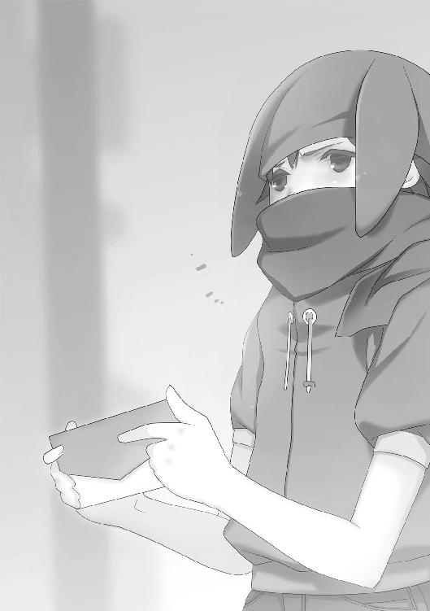

| ムシウタ 12.夢醒める迷宮（上） | |
| 岩井恭平 | |
| KADOKAWA / 角川書店 (2012) | |

ムシウタ
12．夢醒める迷宮（上）
岩井恭平
角川スニーカー文庫
本作品の全部または一部を無断で複製、転載、配信、送信したり、ホームページ上に転載することを禁止します。また、本作品の内容を無断で改変、改ざん等を行うことも禁止します。
本作品購入時にご承諾いただいた規約により、有償・無償にかかわらず本作品を第三者に譲渡することはできません。
本作品を示すサムネイルなどのイメージ画像は、再ダウンロード時に予告なく変更される場合があります。
本作品は縦書きでレイアウトされています。
また、ご覧になるリーディングシステムにより、表示の差が認められることがあります。
ムシウタ 12.夢醒める迷宮（上） ＣＯＮＴＥＮＴＳ

口絵・本文イラスト／るろお
口絵・本文デザイン／田畑善行＋design CREST
プロローグ 0.00 大助 epilogue
〝虫〟──。
十年以上も前に突如、日本国内に現れた超常の存在。
昆虫に似た外見を持つそれらは、思春期の少年少女に取り憑くと言われている。
『赤牧市の奪還に成功した現時点をもって、特別環境保全事務局は次の作戦へ移行します』
〝虫〟に取り憑かれた人間は、虫憑きと呼ばれた。虫憑きは〝虫〟に自らの願望、こうありたいと願う〝夢〟を餌として与える代わりに、超自然的な力を行使できるようになる。
これまで〝虫〟、そして虫憑きの存在は世間には隠されていた。
その隠蔽工作を行ってきたのが、特別環境保全事務局という政府機関である。
『赤牧市を隔離した霧の原因であり、〝浸父〟を解放した上で〝始まりの三匹〟を吸収、統合しつつある虫憑き──』
国の中核都市である赤牧市は、昨日までとはうって変わった姿になり果てていた。
ビルは崩れ、アスファルトの地面はめくれ上がっている。スーツや学生服を着た通行人の姿はなく、亀裂が走る道路には自動車も見当たらない。
代わりに立っているのは、白や黒、グレーのロングコートに身を包んだ集団。それも例外なく誰もが血に塗れ、消耗しきった形相をした少年や少女たち──。
現代に生きる、虫憑きの精鋭たちである。
『超種一号〝Ｃ〟の殲滅作戦を開始します』
特別環境保全事務局副本部長、魅車八重子の声が戦場跡に響いた。
その場にいる誰もが、指一本動かすことができなかった。
たった今、強大な敵を倒したばかりなのだ。
虫憑きを生むとされる〝始まりの三匹〟のうちの一つ──〝浸父〟をである。
被害も甚大だった。
国内で最大の都市が丸ごと一つ機能を失い、結集した虫憑きにも脱落者が出た。生き残った者たちも一人残らず満身創痍である。
そんな状況で、新たな敵を示された。
それも──誰もが予想しえなかった敵だ。
誰もが硬直し、動けずにいる状況でたった一人、立ち上がる者がいた。
「──」
無言で。
まぶたを閉ざしたまま、まるで亡霊のように立ち尽くしたのは──。
「〝かっこう〟──くん......？」
すぐそばで、か細い声がした。だが彼は、まだそちらを振り向かない。
「〝かっこう〟......？」
「......〝かっこう〟」
「〝かっこう〟」
疲れ果てた虫憑きたちが、声を揃えて彼の名を呼んだ。
〝かっこう〟。
そう、それは自分の──虫憑きとして与えられたコードネーム。
特別環境保全事務局東中央支部、火種一号局員〝かっこう〟。冷酷な戦闘員として敵味方に畏怖されると同時に、今や三人しかいない一号指定の生き残り。
「......」
俯いたまま、彼は薄く目を開いた。
漆黒のロングコートを纏う自分の身体が見えた。顔には特別環境保全事務局──特環の装備である大きなゴーグルの感触もある。右手には拳銃も握っていた。
そっと顔を上げる。
まず目に映ったのは、ロングコートとゴーグルを装備した虫憑きたち。
特別環境保全事務局。
彼はその機関の一員として、これまでに数え切れない虫憑きを捕らえてきた。時には〝虫〟を殺し、感情と記憶をなくした〝欠落者〟にした者も多い。
それゆえに多くの虫憑きは彼を憎み、恨んだ。
当然だ。彼は自分が生き残るために、そうやって犠牲を生んできたのだから。
「おい、〝かっこう〟......？」
かつて特環に所属し、今では別組織に所属する〝なみえ〟が、彼に近づこうとした。彼女の背後には特環とは異なり、私服姿の少年少女たちがいた。
〝むしばね〟。
特別環境保全事務局に対抗すべく、在野の虫憑きたちが組織したレジスタンス。
〝むしばね〟もまた、彼を恨んでいる。彼が倒した〝むしばね〟のメンバーは一人や二人ではないし、かつてリーダーだった少女を殺したのも彼ということになっている。
これまで、何人の虫憑きと戦ってきただろう？
幾度の決戦を生き抜いてきただろう？
どれだけ憎み合い、罵り合い、傷つけ合い、勝ち、敗北してきただろう？
だが今、憎み合うことしかなかった特別環境保全事務局と〝むしばね〟が力を合わせ、〝始まりの三匹〟の一つを倒すまでに至った。
虫憑きたちが力を合わせて、〝始まりの三匹〟に立ち向かう。
たったそれだけのことに、ずいぶんと長い時間がかかったものだ。
「......ちょい待ち」
彼に近寄ろうとした〝なみえ〟の肩を、ホッケースティックを持つ少年が摑んだ。血や埃で汚れた少年の額に、疲労とは異なる汗の滴が浮かんだ。
「コイツも〝浸父〟に乗っ取られ──いや、これは違う──」
ホッケースティックの少年の顔が、引きつる。
「なんだか知らないけど、めちゃくちゃヤバイ力場を感じるんですけど......」
周囲の空気がビリビリと振動し、甲高い耳鳴りが虫憑きたちの鼓膜を震わせる。
ざわめく虫憑きたちの中心で、彼は──。
〝かっこう〟と呼ばれ、数多の戦いを駆け抜けてきた虫憑きは──。
微笑を浮かべた。
「......本当に、よくもったほうだよな」
その呟きと同時に。
まるでパチンと指を鳴らし、合図したかのように──。
〝かっこう〟の全身から、緑色の光条が迸った。
「ッッッッッッッッッッッッッッ！」
周囲にいた虫憑きが、吹き荒れる爆風によって後方へ吹き飛ばされる。
〝かっこう〟の全身に、緑色に輝く模様が浮かんだ。だが模様はそれに留まらず、身体の表面に浮かび上がり、一瞬にして身体を覆い尽くした次の瞬間──。
弾けるようにして、分厚い装甲へと形を変えた。
左腕と両足が何倍もの大きさに膨らみ、巨大な鋭い爪を生やした。さらに背中には岩のような四枚の翅が突き出し、顔の半分を緑色の装甲が浸食していく。拳銃を持つ右腕が、巨大な砲口へと変貌していた。
「──ッッッァァァァァァァアアアッッ！」
半分が怪物の顎と化した彼の口が、人外の咆哮を上げた。
急激に増加した体重のせいで、地面が陥没した。衝撃波のような雄叫びを叩きつけられ、すでに消耗しきっている虫憑きたちが回転しながら遠方へ吹き飛ばされる。
『成虫化──ですか』
魅車八重子の冷淡な声が、装甲に取り込まれつつあるゴーグルから聞こえた。
『そ、そんな......！』
魅車と対照的に狼狽した声は、彼の上司である五郎丸柊子だ。魅車と同様、遠方からこちらの様子を窺っているのだろう。
『か、〝かっこう〟さん、しっかりしてください！ 特環と〝むしばね〟が力を合わせて〝浸父〟を倒したんですよ！ いよいよこれからという時に......！』
その通りだ。
互いを傷つけ合うだけだった虫憑きが、ようやく諸悪の根源と向き合えるのだ。
そんな光景を見届けただけで──もう、じゅうぶんだ。
今まで敗戦続きだった〝始まりの三匹〟から、最初の勝利を摑むことができたのだから。
「──」
急速に薄れゆく自我の中で、過去の出来事が思い浮かんでは消えていく。
姉と同化した〝始まりの三匹〟によって、虫憑きにされた。
生みの親に見放され、特別環境保全事務局という組織に拾われた。
それからはもう、血と怨嗟の声に塗れた戦いの記憶ばかりだ。
『そうですね。この大事な時に、これ以上、被害を増やすわけにはいきません』
魅車八重子の声は、こんな状況でさえ優しげだった。
『現場にいる全局員に命令します。火種一号局員〝かっこう〟を──殲滅しなさい』
『馬鹿なッ！』
悲鳴のような柊子の声が重なる。
『あ、あり得ません！ 彼はこれからも必要な人間です！ 誰よりも彼ら虫憑きが分かっているはずです！ 〝かっこう〟さん以外の誰に虫憑きを率いることができるというんです！ 彼がいなきゃ、またバラバラになってしまうに決まって──』
『完全に成虫化するまでに倒さないと、葉芝市を壊滅させたレイディー・バードの二の舞になりかねません。〝かっこう〟殲滅の指揮は──〝霞王〟、貴女がとりなさい』
倒壊したビルの瓦礫の上に、真っ白なロングコートに身を包む少女が立った。
〝霞王〟。──中央本部救出の際に消耗し、〝浸父〟討伐には加わらなかった戦闘員だ。回復能力を持つ戦闘員の力で息を吹き返し、遅ればせながら戦場に到着したようだ。
「──」
しかし突風で金髪を揺らす少女は、微動だにしなかった。ゴーグルのせいで表情は分からないが、変わり果てた〝かっこう〟を見て絶句している。
『命令を復唱しなさい、〝霞王〟』
『か、〝霞王〟さん！ ダメです！ 貴女なら分かるでしょう......！』
『情報班、五郎丸支部長代理の通信を切りなさい。──〝霞王〟。命令の復唱を』
〝霞王〟は動かない。命令が耳に入っていないようだ。
身じろぎもしない戦闘狂を、魅車が見限るのは早かった。
『では〝月姫〟。貴方が指揮を』
折れ曲がった街灯の下で、土師千莉と寄り添う少年が顔を上げた。東中央支部に所属する火種二号局員の緒方有夏月である。
有夏月は〝かっこう〟を恨んでいるはずだ。だが、すがるような目つきの千莉と見つめ合い──血まみれの顔を歪ませる。
「ま、まだ、間に合うかもしれない......！ 以前に成虫化の兆候があった時だって──」
『〝照〟』
魅車がすぐに別の戦闘員に白羽の矢を立てた。
瓦礫の上に倒れていた人物が上体を持ち上げた。その傍らには回復能力を持つ虫憑き、〝ねね〟がいる。
「了......解......！ 全隊、〝かっこう〟の左右に展開......全力で一斉攻撃をする──」
負傷から立ち直ったばかりの〝照〟が、声を張り上げた。
「〝かっこう〟を殺せぇッ！」
命令が下され、〝かっこう〟に攻撃が雨あられと浴びせられる。
──はずだった。
「なっ──」
しかし実際に攻撃を開始したのは、戦場にいる虫憑きの半数にも及ばなかった。ことごとく〝かっこう〟の装甲にはじき返される。
「何してるのよ！ 今、コイツを殺さないと、私たちが皆殺しにされるのよ！ 今までコイツから受けた仕打ちを忘れたの？ 恨みを晴らすチャンスじゃない！」
〝照〟の叱咤によって新たに攻撃を始めたのも、せいぜい十人といったところだ。
〝霞王〟は相変わらず棒立ちで、有夏月にいたっては攻撃を止めるよう声高に叫んでいる。彼ら以外にも、〝浸父〟との戦いで力を使い果たした者、成虫化しつつある〝かっこう〟に気圧された者など様々だ。
攻撃する者と、それに参加しない者。それらに共通するのは、ある種の戸惑いである。
──本当に〝かっこう〟を倒していいのだろうか？
そんな迷いが、戦場全体に漂っていた。
「──」
〝かっこう〟の軀が勝手に動いた。砲台と化した右腕を持ち上げる。瞬間的に眼前に現れた少年のホッケースティックを受け止め、左腕の爪で反撃を繰り出す。
少年が瞬間移動して攻撃をかわすが──。
「──ぐあっ！」
完全に避けきれなかったのか、離れた場所に現れた少年の肩から血が噴き出した。さらに爪の衝撃で吹き飛んだ何十トンものアスファルトや土が少年を襲う。
下半身を土砂に埋めた少年に向かって、〝かっこう〟の右腕が狙いを定めた。
ぽっかりと空いた砲台の奧で、真っ赤に燃える弾丸が回転する。
「や、やべ──」
いよいよ力を使い果たしたのか、ホッケースティックの少年の表情がひきつる。
〝かっこう〟の身体は自らの〝虫〟に完全に支配されていた。〝浸父〟との決戦で消耗しきった戦闘員たちでは──いや、たとえ全力を出せたとしても、成虫化した〝かっこう〟を止めることができる虫憑きなど存在しないだろう。
「〝かっこう〟くん......」
そう──。
たった一人を除いて。
〝かっこう〟という虫憑きは、ある虫憑きを欠落者にすることから始まったのだ。
ならば、その戦いに幕を引くべき虫憑きは、その少女をおいて他にいない。
「──」
ピタリ、と〝かっこう〟の動きが止まった。
彼自身が止めたのではない。彼を支配しつつある〝虫〟が──怯えたのだ。
振り返る。
小柄で、童顔の少女がそこに佇んでいた。
いつか見た──今では遥か昔に思える、あの時と同じように。
その少女は自らの〝虫〟、光り輝く蛍を眼前に掲げていた。
「......」
荒れ果てた大地で、見つめ合う両者。
──それなら、わたしの夢をあげるね。
あの時は、彼女がそう言った。
彼は頷いた。
──おれは絶対に諦めない。だから、お前もいつか......。
そうやって全てが始まり。
少女は、約束を守った。
一方、彼はというと──。
「──」
もう言葉を出すこともできない。
ただ、わずかに頷いた。
少女も頷き返し、涙を目に浮かべながら笑った。
「〝かっこう〟くんも、絶対に......ね？」
少女、秘種一号〝ふゆほたる〟の頭上に煌めく点が生まれた。
一粒の雪だ。
それは吹き荒れる突風の中、そよ風にたゆたうようにして〝かっこう〟のもとに舞い降り──彼はそれを受け入れた。
鼓膜を打ち破るような断末魔が、戦場全体に響き渡った。
雪に触れた〝かっこう〟の翅がねじ曲がり、弾け、吹き飛んだ。さらに崩壊は連鎖し、分厚い装甲が大量の体液を噴きだしながら弾け飛んでいく。
同化した〝かっこう〟の口から、彼の〝虫〟の断末魔が漏れた。
恐るべき雪の崩壊から逃れようと、〝かっこう〟と同化したカッコウムシが暴れる。手足を振り回して暴れるも崩壊は止まらず、巨大な両脚が砕けた。
「──ッッ！」
耐えきれなくなったカッコウムシが、〝かっこう〟から分離した。ヒビ割れたゴーグルとコートの切れ端しか纏わない〝かっこう〟が、地面の上に投げ出される。
「〝かっこう〟くん......！」
駆け寄る〝ふゆほたる〟の姿に、過去の光景とは違う少女の姿が重なった。
〝ふゆほたる〟ではない。
杏本詩歌という、ごく普通の少女の姿だ。
──来年、また待っていてほしい。
そう新たに約束したのは、彼自身。
〝かっこう〟ではない、ごく普通の少年──。
薬屋大助である。
「ごめん......」
カッコウムシの断末魔を聞きながら、大助はかすかに微笑んだ。
〝かっこう〟と〝ふゆほたる〟は約束を果たし、四年越しの再会を果たした。
しかし、薬屋大助と杏本詩歌という二人が交わした約束は──果たせない。
二人が〝再会〟することは、もう二度とない。
詩歌は約束を守ってくれたのに、大助はここまでだ。
〝かっこう〟の正体が大助であることを知らない彼女は、誰も訪れないクリスマスにがっかりすることだろう。
がっかり、してくれたら嬉しい。
「約束......守れなくて......」
「え......？」
倒れそうになる大助を抱きとめ、詩歌が眉をひそめた。
思えば、多くの人と多くの約束をしてしまった。
〝霞王〟ともいつか決着をつけると約束したのに、それを破ってしまう。
中には果たした思いだってある。
かつて虫憑きを一つにすることを夢見て、長い眠りについた人物がいた。
今、この状況は間違いなく、その人物の夢の延長上にあるはずだ。
大助の戦いは、ここで終わるが──。
しっかりと見届けたはずだ。
あの少女の、夢の続きを。
「早く......目を覚ましやがれ......バカ......」
カッコウムシの断末魔が収束し、大助の瞳からも生気が消える。
「......〝かっこう〟くん......！」
〝ふゆほたる〟を欠落者にすることから始まった、〝かっこう〟という、ある虫憑きの戦い──。
それが今──。
〝ふゆほたる〟の腕の中で、終焉した。
0.01 The others
魅車八重子は側近の戦闘員を従え、荒れ果てた戦場に足を運んだ。
そこで目にしたのは、彫像のように微動だにせず佇む虫憑きたちだ。誰もが傷つき、疲労困憊の様子だが、本人らはそんなことすらも忘れているかのようだ。
彼らの中央にいるのは──。
人形のような顔つきの少年と、それを抱きしめる少女である。
「もういいですよ、〝ふゆほたる〟」
魅車が声をかけると、少女がこちらを振り向いた。
「......」
予想に反して、〝ふゆほたる〟は──泣いてはいなかった。以前のようなか弱さが消え、力強さと覚悟を瞳に湛えている。
同じ一号指定である〝かっこう〟を倒し、自信を得たのか。
それとも──眼前の少年から、何かを受け取ったのか。
弱い感情を覆い隠す強い眼差しは、〝かっこう〟のそれとうり二つだった。
「彼の身柄は、特別環境保全事務局が預かります」
新たな力を得た〝ふゆほたる〟を見つめ、魅車は優しく微笑んだ。
それでいい。
それでこそ、最も強き一号指定。
かつて何の前触れもなく、天災のように降臨した虫憑き。魅車は一目見た時から、その少女が最も〝不死〟に近いと感じていた。
彼女の〝不死〟は──他者の死である。
〝ふゆほたる〟以外には、誰も生き残らない。自分以外の存在を許さない。それを可能とするだけの絶対的な力による〝不死〟。
〝ふゆほたる〟は自分以外の存在を喰らい、生き残ることで、強くなっていく──。
「〝かっこう〟」
一方、想定よりも早い段階で脱落してしまった一号指定が目の前にいた。
薬屋大助──〝かっこう〟。
ボロボロのゴーグルとコートを身につけた少年が、生気のない瞳で虚空を見ていた。
「顔を上げなさい」
最強の虫憑きの成れの果てが、ピクリと青白い顔を上げた。
欠落者。
自らの〝虫〟を失った虫憑きは、記憶や感情を失う。欠落者と呼ばれる彼らは、外部からの命令に従うだけの生ける屍と化すのだ。
魅車は人差し指の先で、〝かっこう〟の顎を持ち上げた。
「間違いなく、欠落者になったようですね」
誰よりも多く欠落者を見てきた魅車の判断に、周囲の虫憑きたちが息を呑んだ。
静寂にどよめきが混ざり、やがて聞こえたのは──。
「は、はは──」
誰ともしれない、かすれた笑い声。
「〝かっこう〟が......あの悪魔が、やっといなくなった──」
魅車は微笑んだ。心中で囁きかける。
貴方ほど多くの人から憎まれた虫憑きは、他にいませんでしたね──。
彼は誰よりも多くの虫憑きと戦ってきた。手強い虫憑きを捕獲する時ほど彼に頼っていたことを考えると、精鋭が揃うこの場にこそ彼を恨む人間が多いのは当然といえる。
「──〝かっこう〟さんっ！」
背後から、悲鳴のような声が聞こえた。
遅れてやって来た五郎丸柊子が、魅車から奪うようにして少年の両肩を摑んだ。
「う、噓ですよねっ？ まさか、こんな──ねえっ、〝かっこう〟さんっ！ だって私たちはまだ......！ やっとこれからという時に......ダメですよっ！ 〝かっこう〟さんはまだ、こんなところで終わっちゃ......」
柊子が激しく揺さぶっても、変わり果てた少年はピクリとも表情を動かさない。
「そんな──それじゃ、私たちはもう──」
膝を地面につき、呆然とうなだれる柊子。その瞳から涙の筋が伝う。
〝かっこう〟が東中央支部の支柱だったことは、自他共に認めるところだ。無能と名高い五郎丸支部長代理の反応は当然で──それは他の東中央支部の面々も同様だった。
二号指定の戦闘員である〝月姫〟が顔をしかめ、両目を閉ざしていた。その傍らにへたりこんでいる異種二号局員の〝火巫女〟の瞳からも、涙が零れている。
「......」
魅車はぐるりと周囲を見回し、他の虫憑きたちの様子を窺った。
特環の上位局員たちの反応は様々だ。
目につくところでは、〝霞王〟が時間が停止したかのように硬直していた。
〝疫神〟という戦闘員は冷めた顔で頰をかき、〝さくら〟という少女は無表情でじっと〝かっこう〟を見つめている。
〝ねね〟と〝玉藻〟はショックを受けた様子だ。信じられないという顔で、頭をかすかに横に振っている。その〝ねね〟に治癒されたばかりの〝四ツ葉〟が顔を上げ、変わり果てた〝かっこう〟を見て拳を地面に打ちつけた。
一方、〝照〟は歓喜を隠そうともしなかった。鬼気迫る形相で笑みを浮かべる彼女を見て、同じ西中央支部の面々が困惑している。
彼ら以外の特環局員も、戸惑っている者が多かった。隠れて笑みを浮かべたり、ホッとした顔をしているのは、〝かっこう〟を好ましく思っていなかった者たちだろう。東中央支部のように、彼の脱落を悲しむ者は一人もいないように見える。
「......」
魅車は別の方角を一瞥した。
意外だったのは、かつて〝かっこう〟を宿敵としていた〝むしばね〟の反応だった。
現リーダーである〝ふゆほたる〟はもとより、宿敵の末路を喜んでいる者が一人もいないのだ。以前は同僚だったこともある〝なみえ〟が複雑な顔をしているのは分かる。だが他のメンバーも彼女とそっくりの表情を浮かべていた。
それだけ幹部の世代交代が進んだということだろうか？ 以前のリーダー、レイディー・バードが仕切っていた頃なら、諸手を挙げて狂喜乱舞していたはずだ。
魅車は物言わぬ〝かっこう〟に向き直り、心中で語りかける。
貴方ほど多くの虫憑きを奮い立たせた者も......ね──。
彼が倒してきた虫憑きの数が。
彼がくぐり抜けてきた戦いの数が。
彼が集めた憎しみの数が。
彼が生きてきた道が。
多くの虫憑きたちの目を、同じ方向へと向けた。
たとえ力ずくといえど、癖者だらけの虫憑きを一つにまとめ上げた。
「欠落者になった以上、それはもう使い物になりません。〝ＧＡＲＤＥＮ〟に移送してください」
魅車の命令を聞いて、虫憑きたちの視線が彼女に集まった。
まだ戦いは終わっていない。
強大な敵が──それこそ〝始まりの三匹〟よりも困難な敵が待ち構えている。
だが果たして、動揺する虫憑きたちをまとめ上げることができる人間がいるだろうか？
「それ......？」
すっかり〝かっこう〟じみた目つきで魅車を睨む、〝ふゆほたる〟。
〝ふゆほたる〟では、ダメだ。今でこそ仲間ごっこで〝むしばね〟のリーダーに祭り上げられているとはいえ、彼女の本来あるべき姿は、自分以外の死に囲まれた〝不死〟である。いずれ彼女は誰しもに恐れられ、孤立することは分かりきっている。
「ええ、こんなところで立ち止まってしまうなんて少々、期待外れでした。今までとても愛してあげた私はもちろん──」
〝ふゆほたる〟の怒りを、にっこりと微笑んで受け止める。
「私たちがこれから戦う相手も、きっと同じ思いでしょう」
遠方から、ヘリコプターが接近する音が響いた。赤牧市周辺に規制を敷き、さらに情報班に所属する虫憑きに衛星からの監視を妨害させていたとはいえ、目くらましにも限界がある。
〝虫〟、ひいては虫憑きの存在はすぐに明るみに出るだろう。この国だけではなく──常に外から監視している他国にもだ。
ここが、世界の変わり目。
〝虫〟のいない世界から、〝虫〟が確かに存在する世界へと変わっていく──。
「新たなリーダーが必要ですね」
魅車は目を細め、決戦を終えたばかりの虫憑きたちに背を向けた。
1.00 門閒真琴 Part.1
門閒真琴は大きなスポーツバッグを背負った状態で、赤牧市を走り回っていた。
「はあー、忙しい、忙しい」
中心街は見る影も無いが、それ以外の地域の被害はそれほどでもない。ぽつぽつと立つビルは無傷だし、住宅街に入れば、まだ避難していない住民を誘導する自衛隊の姿もチラホラと見える。
「そこのキミ！ この区はもう立入り禁止区域だぞ、早く──」
「あっ、はーい！ 今から家族と合流するところなんです。すぐに出て行きますからー」
声をかけてきた自衛隊員に手を振り、その場を離れる真琴。
自衛隊員は渋い顔をしたが、強引に引き留めようとはしなかった。
それもそのはず。
門閒真琴は来年から高校生になるはずの中学生で、今はありきたりなセーラー服姿。校則に則った長さの髪は首の後ろでゴムで縛り、こちらはちょっぴり校則違反のビーズ入りのヘアピンで前髪をとめている。背は平均的で高くもなく低くもなく、猫目がちな顔立ちは疲労で汗ばんでいる。
どこからどう見ても、部活帰りの女子中学生である。──もちろん避難勧告がとっくの昔に出された現状では、部活帰りという状況はあり得ないのだが。
平凡な容姿の真琴を警戒する人間は、ほとんどいない。もちろん真琴自身、自分がどこにでもいる普通の女の子以外の何者にもなった覚えもない。
ポケットの中で携帯電話が鳴った。真琴は走りながら受信ボタンを押す。
「はーい、もしもし」
『あー、やっと繫がったぁ。マコ、大丈夫？ テレビ見たよ。赤牧市、大変みたいね』
「ホントよ、もう。いきなり避難勧告とか言われて、ケータイは混雑やら不通やらで繫がらないし......今夜、見たい番組あったのになぁ」
『あは、番組って。そんなことより無事なんだよね？ 親戚の法事ってやつで赤牧市に行ったんでしょ？ タイミング悪かったね』
「うちは大丈夫。心配ありがとね。──テレビじゃ赤牧市のことどう言ってんの？」
真琴は携帯電話を耳に当てながら、立ち止まった。周囲をきょろきょろと見回し、高級住宅街がある高台のほうへ方向転換する。
『もう何が何だか。最初はニュースで大騒ぎだったよー。『政府が突然の避難勧告！ その理由とは！』みたいに大騒ぎでさ。避難する人たちをテレビ局の人たちがインタビューしては、自衛隊の人たちに連れてかれるみたいな』
「ひゃー。怖いなぁ。それで？」
『それから急に、赤牧市からの中継がまったくなくなっちゃって。大規模な停電があったんだってさ。その影響で電波塔とか通信施設が壊れたとか......とにかくもう赤牧市がどうなってるのか分からなかったのが、今朝になってやっと市外に脱出した人たちと連絡がとれ始めたところ──あれ？ マコ、よく連絡とれてるね。もう赤牧市にいないの？』
「うん。怖いし、真っ先に避難したよー。今はとなりの氷飽市にいるんだー」
気軽に言い、赤牧市内を走る真琴。
『そっか、よかったぁ。早く戻って来なよ。まあ、帰ってきても受験勉強しかすることないけどさ』
「はあ、引退したばっかだけど、バスケ部時代が懐かしいわ。ずっと補欠だったとはいえ」
『あはは』
「あ、ごめん、別の着信。ケータイ繫がるようになったから、色んな人が心配してくれてるみたい」
友人に別れを告げ、新たな着信をとろうとして──。
「ん？ ちょっと、アンタ！ 早く避難を──」
「ごめんなさーい！ この先にある避難所から出る緊急バスに乗るつもりですー」
もう何度目かも分からない自衛隊の制止を、適当に振り切る。
「もしもし？」
『あ、マコリス、生きてた』
「この前ドロップしたレア武器を売りさばくまでは、死ぬわけにはいかんなぁー」
『くそ、分け前増えると思ったのに』
「ちょっ、おっさん」
『冗談。この前、用事で赤牧市行くって言ってたじゃん。それきりログインしないから。マジで今、赤牧市？』
「いや、もう避難したよ。──ってか、二十八歳リーマンがこんな時間から女子中学生に電話してていーの？」
『会社、休み。つか、あちこち休業中。赤牧市に避難勧告が出されて、自衛隊が出張ってるとなったら、会社や学校より家にいたい人間が多いんじゃねーかな』
「ふーん。ところでネットはどんな感じ？ 政府が巨大な陰謀を隠してる！ みたいな感じ？ うち、今、ネットに繫がんないの。あ、狩り仲間のみんなによろしくね」
『大体、そんな感じかね。でも結構な数のプロバイダが通信障害に陥ってるみたいでヤバイわ。俺はなんとか海外経由で繫いでるけど......なんか日本以外もヤバそう』
「は？ なんで？」
『なんでか海外にも通信障害が拡大してるみたいで......それどころか、世界中の発電所がいくつか謎の停止状態に陥ったとかでさ。なぜかそれが日本で起きた何かのせいじゃないかって、ちょっと日本ヤベーんじゃね？ って感じ』
「海外まで......か」
真琴が目を細めた時だった。電話の相手の口調が変わった。
『は......？ な、なんだ、これ──』
「どしたの、リンドブルグさん、カッコ二十八歳リーマンカッコ閉じ」
『い、いや、赤牧市で何が起きたか知りたくて、ハッカー仲間といっしょに人工衛星からの映像を覗き見しようと思ってたんだけど──画面が光って──な、何か出てくる──』
「はあっ？ バカ......！」
真琴は素早く自分の喉を、人差し指でなぞった。そして、呟く。
「──」
電話の相手にも聞こえないような小さな声。
だが真琴がそれを言った直後──。
『うわぁっ！ ──はあっ！ はあっ！ 何だ、今の......？ 何なんだよ......』
「大丈夫？ 何ともない？」
『あ、ああ......何かが出てきて捕まりそうになったけど......急に、弾けて消えた......？』
「おいおい、二次元の世界に行く夢見るようになっちゃ重症だぜ、リンドブルグ。──っていうか！ バカじゃないの！ そんな無駄スキルで犯罪すんな！ またやったら着拒して二度と口きかないからねっ！」
『分かってるよ。......でも、心配でさ』
「はいはい、ありがとありがと。──また連絡するからさ。常識の範囲内で情報集めといてよ。こっちはとにかく情報少なくてさぁ」
別れを告げ、電話を切る。
「思ったより情報を隠せてるみたいね。......こんな状況でも、さすがといったところね」
一人で呟いていると、また携帯電話が鳴った。
『門閒さん、大丈夫？ 確か赤牧市に行くって言ってたわよね？』
「心配してくださってありがとうございます。おかげさまで私は無事ですけど、まだ赤牧市にいるんです。何がどうなってるのか分からなくて......」
『そうなの？ 町内会のみんなや婦人会でも、心配してたのよ。あなたにはボランティア活動でいつもお世話になってるし、私たちに何かできることないかしら？』
「ありがとうございます。でも私は大丈夫──あっ、そうだ。確か旦那さんが市議会の議員さんでしたよね？ 議員さんの中では一連の騒ぎがどう伝えられてるかとか......ええ、今も赤牧市にいる身としては、少しでも現状が知りたくて──」
赤牧市を走っている間にも、次々と外部の声が真琴のもとに集まっていく。
国内でテレビを見ているだけの一般家庭から、中年層、学生、公務員、果ては海外で広がりつつある噂、報道内容に至るまで、ありとあらゆる情報を聞いて、戦慄する。
「〝虫〟と虫憑きに結びつく情報が、あまりに少ない......」
真琴は、苦笑するしかなかった。
「いずれバレるだろうけど、今の時代でここまで情報操作できるなんて......虫憑きよりもよっぽど化け物なんじゃないの、魅車八重子は」
高級住宅街を巡回するのも、そろそろ終わりだ。赤牧市近辺では、この地域を見て回るのが最後だったため、あらかじめ決められた場所へ戻ろうとする。
「──ん？」
真琴の視界が、かすかに動く何かを捉えた。
周囲の住居よりも大きい、三階建ての建物だ。その二階に人影を見つけた。
バルコニーにあるハンモックのような長椅子に、一人の少女が横たわっていた。ぼんやりと空を見上げながら、テーブルに置いたグラスを口に運ぶ。
「あのー」
ジャンプして高い塀に摑まり、真琴はバルコニーの少女に声をかけた。
「ここらへんはもう避難区域ですよー。早く出ないと、叱られちゃいますよ？」
「あ、うん。もう出ようかなと思ってたとこ」
砕けた口調で言い、少女が身を起こした。歳は真琴よりも二、三歳ほど上だろうか。すらりとした長身とショートカットが印象的である。男子よりも女子の憧れを集めそうな美人だ。
「体調でも悪いんですかー？」
「ううん、平気ー。ありがとうー」
「なんだったら、近くの避難所まで案内しますけどー」
離れた場所から、両手を口に添えて大声で会話する二人。
「大丈夫だよー。ちょっと友達のこと思い出して黄昏れてただけだからー」
「避難した後でもいいじゃないですかー」
「そーだねー。でもなぜか急に思い出しちゃったんだー。虫憑きの友達なんだけどー」
「へえー、虫憑きですかー」
にこやかに返事しながら、真琴は自分の喉に人差し指を走らせる。
虫憑き。今の状況で、そのキーワードを口にするリスクを、本人は数秒後に思い知ることだろう。身をもって。
「まあ、ウソだけどねー。虫憑きなんかいるわけないしー」
「あはは、分かってますよー。ウソだと思ってましたー」
真琴は喉に当てた指を、ピタリと止める。
ただの変人か。今の状況で真琴が気にするほどの人物ではないだろう。時間もないことだし、真琴は塀から降りた。
家の表札には、西園寺という苗字が書き込まれていた。
「うちは先に逃げますー。あなたも早く避難したほうがいいですよー」
「おっけー」
高級住宅街に住むお嬢様とは思えない、フランクな返事が返ってきた。
とりあえず主要な地域の散策を終え、真琴は中心街に戻った。
瓦礫の山が積み重なった、変わり果てたオフィスビル。
その一画に、屋根が壊れた巨大ドームがあった。
アスファルトがヒビ割れた広大な駐車場を突っ切って近づくと、その巨大さをはっきりと体感できた。ドームに入る手前にある各種グッズ売り場だけで、真琴が通う中学校の敷地の何倍もありそうだ。
いざドーム本体に近づくと、入り口を重装備の自衛隊が警備していた。
真琴がなにげなく駆け寄ると、当然のように自衛隊員が立ち塞がった。
「おい、キミ。ここは立入り禁止だ。早く避難を──」
立ちはだかった自衛隊員たちが、ぎょっとした。
真琴がバッグから取り出したコートを身に纏ったからだ。ベルトの多いグレーのロングコートに加え、顔の大半を覆う大きなバイザーを装着する。
自然と、道が開けた。──まるで怪物と遭遇したかのような彼らの態度に、真琴は憤慨した。真琴など普通も普通、本当の怪物どもは他にいるというのに。
顔を強ばらせた自衛隊員の間をすり抜け、ドームの内部に入る。
非常灯だけが灯る、薄暗い通路を駆け抜ける。一定距離で通路を警備する自衛隊員は、肩から重火器をぶら下げていた。
通路を抜け、ドームの中心に辿り着く。
３６０度を囲む階段状の観客席と、人工芝を敷き詰めた広大な運動グラウンド。
そこは異様なコートを着た少年少女たちで埋め尽くされていた。真琴はその真ん中を走り抜け、ある女性のもとへ向かう。
「やっと戻ってきましたか」
振り返ったのは、優しい微笑を浮かべた女性。
「休息時間を削ってまで自ら情報収集とは、あいかわらず真面目ですね──」
その女性、魅車八重子が門閒真琴を見つめて言った。
「〝照〟」
1.01 門閒真琴 Part.2
門閒真琴は、テレビ中継でこの場所を見たことがある。
普段は人工芝や設備を替えることで、野球やサッカー、テニス等の試合会場になっている国立運動場だ。真琴が見たのはサッカーの国際大会の試合中継だったはずだ。
その全天候型のドーム型運動グラウンドの内部が、大勢の虫憑きで埋め尽くされていた。
赤牧市内で〝浸父〟と対決し、撃破した翌日の朝である。
戦いに参加した中央本部局員と各支部の精鋭たちの他にも、全国から戦闘員をかき集めたのだろう。見覚えのある地方の局員の姿がチラホラと見えた。
怪我人が横たわるスペースの他に、装備や食料を積み上げた配給所もあった。情報班に所属する虫憑きが集まっている場所には、電子機器が密集している。地下の自家発電機では足りないのか、持ち運び式の発電機が運動グラウンドの隅で唸っていた。
照明は薄暗かった。
市内の停電は、ひとまず収まったはずだ。それなのに外部の電力供給を受けず、発電機のみに頼っているせいだろう。
ドームに出入りする際に、周囲を警戒する虫憑きも見た。魅車の指示だろう、一種の結界ともいうべき能力でドーム全体を外部からシャットアウトしているのだ。
異様なほどに、〝外敵〟を警戒している──。
それが真琴の感想だった。
国内にいる虫憑きが結集し、それでも臆病なほど外界から隔離しているのはなぜか。
その理由は、これから対峙する敵の能力と関係しているのだろう。
「わざわざ貴女自身が足を運ばずとも、外の状況は情報班が把握していますよ？」
魅車八重子が、真琴に向かって微笑んだ。
特別環境保全事務局副本部長、魅車八重子。──実質上、特環という組織を掌握している女性だ。いかなる時も笑みを絶やさない、細目の美女。見た目は聖女のようだが、その容赦のない手腕と狡猾な性格を恐れていない局員はいない。
「習慣なんです。自分の休息時間を使っての行動なら、問題ないと思ったのですが」
直立不動の体勢で、軍人のようにハキハキと答える真琴。
「罰しようというわけではありません。むしろ嬉しいのです。貴女の勤勉さは、私の愛に応えてくれるものですからね。これからも期待していますよ」
「光栄です」
真琴が今いるのは、ドーム内の端に設置された天幕の内側だ。
急ごしらえのモニターが設置されたそこには、各支部の支部長たちが勢揃いしていた。モニターや通信装置を操作する情報班を除けば、虫憑きは少ない。
〝照〟こと、門閒真琴。
そして〝ふゆほたる〟と、その側近らしい少女である。
「......」
ちらり、と真琴は〝ふゆほたる〟を見た。
中学生みたいな童顔を緊張させ、あちらもチラチラと真琴の顔を窺っていた。かえって緊張感がないその素振りが、真琴を苛立たせる。
一号指定の生き残り......早く死ねばいいのに──。
心中で毒づくが、表情には出さない。
「それで貴女の印象はどうでしたか、〝照〟？ 外の様子は？」
「思っていた以上に現在の状況を隠せていました。あれだけの規模の戦闘だったので、国内外でもっと騒ぎになっていると思っていましたが......報道規制はもちろん、衛星からの監視を早期に遮断したのが効いているようです。電子網上に仕掛けてあった情報班のトラップも功を奏しているようですし。──今のところは、ですが」
真琴の報告を聞いてあくびをしたのは、〝ふゆほたる〟の側近の少女だった。ストライプのタイツが趣味が悪い上に、眠そうな顔をしながらも携帯電話をいじるのをやめない。「眠いー、朝早いのやだー、電波悪いー」という独り言が聞こえた。
「そうですね。各国の衛星に細工を仕込んでおいたのが知れたら、いずれ非難を浴びるでしょう。諸々のトラップもそれが尽きれば、情報の流出は免れませんしね」
魅車が平然と言った。真琴の頭を撫でそうな口ぶりだ。
一方、ニッコリ笑うわけにはいかなかったのは、魅車のそばにいた大人たちだ。最高級のスーツを着た白髪の男性と、それを取り囲むワンランク下のスーツ姿の男たちである。
「おい！ そんなことは聞いていないぞ！ 外国の軍事兵器に干渉するなんて──」
「承認済みです、副大臣」
魅車がまた笑んだ。──白髪の男が何者であるかは、真琴もテレビで見たことがあるから知っている。どの省かは忘れたが、副大臣という役職だけは覚えていた。
「〝虫〟の秘密保持に関する任務は全て、関連省庁の承認を受けています。きっと任務がたくさんありすぎて、どの事項かお忘れになっているだけでしょう」
絶句する副大臣。
「そんなにご不安にならずとも、大丈夫ですよ。虫憑きの能力は証拠が残りにくいですから、時間稼ぎ程度にはなるでしょう」
「じ、時間稼ぎ？ その後はどうする！ 国際社会から非難を浴びることに──」
「ああ、そういうご心配ですか。それも何とかなるでしょう。ちゃんと海外の情報機関とのパイプはありますし、差し障りのない〝虫〟の情報を見返りに渡せば、今のところは不干渉協定──数ヶ月後には期限が切れる約束事を守ってくれるでしょう」
眠そうな顔のケータイ少女が口を開いた。
「そういう意味じゃ、早々に監視衛星を遮断できたのは大きいですねー。そんなことすらもできる〝虫〟の情報を手に入れられるなら、その国の上層部はむしろ、それを独占するまでは世間への公表を嫌うでしょう」
〝むしばね〟には、まともな頭脳役がいないと聞いていたんだけど......？
見た目とは裏腹に冷静な少女を、真琴は警戒に値すると踏んだ。
「そういえば以前、〝虫〟を独占したいと我々〝むしばね〟に交渉を持ちかけてきた人もいましたねー。損得勘定が得意な方々の考えることは皆、いっしょですよ」
「ふふ、頭の良い子ですね。貴女のことも愛せそうです」
魅車が目を細め、ケータイ少女を見た。見つめる人間を逃れようのない慈愛で縛りつける〝鎖の笑み〟を向けられ、少女がギクリとした。〝ふゆほたる〟の背後に隠れる。
「じ、自分たちの国土に危険が及ばないかぎりは、ですけどねー」
頭は良くても、度胸がないらしい。真琴は少女に対する警戒ランクを一つ下げた。
「そういうことです、副大臣。全責任は私がとりますので、ご心配なく」
副大臣が何も言い返すことができず、押し黙った。
責任をとる？ 馬鹿馬鹿しい──。
本来ならば一国で制御しきれるはずのない〝虫〟や虫憑き。それらを完璧に管理し、国内外の政治的干渉もはねのけ、この状況に至っても存在を隠し通すことができる人間。
そんな人材が、魅車八重子をおいて他にいるとでも？
答えは、否。
どんなに危険でも。
たとえ何を企んでいようとも。
魅車八重子という人間は失われてはいけない。そのことが分かっているからこそ、国が彼女を排除するなどあり得るはずがなかった。
「そろそろ本題に入ってはいかがでしょう、副本部長」
鼻の下と顎にヒゲを生やした四十代の紳士が、ニコニコと笑いながら言った。
北中央支部支部長、岳美武政。──真琴の直属の上司でもある。
「そうですね、岳美支部長」
にっこりと微笑み返す魅車。この二人のやりとりは、いつ見ても茶番じみている。
正面に設置されたモニターに、唐突に映像が映し出された。
「......！」
せめて前置きくらいはしてほしかった。
真琴はもちろん、魅車八重子を除く全員がそう思っただろう。
映し出されたのは、画質の荒い一瞬の動画だった。
だが、ほんの一瞬、見ただけで──。
「──」
ほとんどの人間が血の気を失い、無意識に後退った。
真琴も、例外ではない。身体の奥底から震えがこみ上げた。
映像に映っていたのは、得体の知れない電子機器と、大人の胴回り以上もありそうな制御ケーブルと電力ケーブルが密集する海──。
その中に、一人の女の子が裸で寝そべっていた。
細く、青白い肢体。解かれた長い髪。そして額には唯一の装束ともいうべき、王冠を象ったティアラ。その身を横たえているのは、透明な直方形の台座。
まだ十代前半に見える、その女の子は──。
こちらを凝視していた。
どす黒く、見開いた眼をカメラに向けていた。
そして──その眼が大きくなり、魚眼レンズのようにカメラに肉薄したかと思うと──また元のように海の中の女の子の映像に戻る。
ノイズだらけの、ほんの数秒の映像だ。
それなのに、明らかに異常だった。
女の子の存在感も、向こう側から覗く女の子のどす黒い眼の挙動も、常識で説明することができなかった。まるで女の子の存在自体が時間と空間を超越し、歪んでいるとしか思えない。
「──ッ」
吐き気に襲われたのか、副大臣の側近が何人か、口を押さえて顔をそむけた。
「〝浸父〟に占領された本部からサルベージできた唯一の映像です。地下要塞の最下層を映したものです」
たった一人、平然としている魅車が言った。
いや、平然としているどころではない。映像に映る女の子を見つめる眼差しは、愛する我が子を慈しむかのように優しげだ。
「超種一号、〝Ｃ〟。──今の我々の最大の敵であり、殲滅対象です」
誰一人として言葉を紡ぐことが出来ない。
そんな中、一人だけ違う反応を見せたのは、〝ふゆほたる〟だった。
「これが──あの、エリィ......？」
その悲壮な顔は、恐れているというより、ひどく悲しげに見えた。
そんな〝ふゆほたる〟を見て、魅車がくすりと笑った。
「ああ、かつて貴女が本部から脱走した時、〝Ｃ〟を刺客として差し向けたのでしたね。──それが今や〝ふゆほたる〟は私のもとへ戻ってきてくれて、本部に巣くう〝Ｃ〟討伐の作戦に加わっているとは......運命のいたずらとは、面白いものですね」
「面白いわけがあるか......！」
青ざめた顔で、副大臣が魅車に詰め寄った。
「何なんだ、こいつは......！ これは、本当に──人間なのか？」
その場にいるほぼ全員の思いを、副大臣が代弁した。
真琴も同じことを考えた。
ほんの一瞬、その異様な姿を見ただけで──寒気と嘔吐感がこみ上げていた。
たった今見た映像は──あの女の子は──いや、あの生き物は──。
「もちろん、人間ではありません」
魅車がにっこりと微笑んだ。
「ごく普通の──虫憑きです」
今度こそ、誰もが言葉を失った。
「〝Ｃ〟は中央本部の実験班に所属していました。実験内容は──〝始まりの三匹〟の一つ、〝浸父〟の欠片を用いた欠落者蘇生です」
映像を見ていた真琴は、グリンッと擬音がしそうな勢いで魅車を振り向いた。
なんだって......？
自分は今、とてつもなく重大な告白を聞いてしまった。
だが魅車があまりにも平然としていたため、ちゃんと理解するまで時間がかかった。
「しかし残念ながら、〝Ｃ〟はその過程で──」
「ち、ちょっと待っ──副本部長......？」
かろうじて声を出したのは、南中央支部の支部長だった。
「し、〝浸父〟の欠片......？ 欠落者蘇生......？ ど、どれも初耳なのですが、一体、どういう──」
「実験の内容はともかく、中央本部で〝浸父〟の本体を保護していることは、すでに周知かと思っていましたが？」
きょとんとする魅車八重子。
こ、こいつ......ッ！
真琴は思わず立場を忘れ、怒鳴ってしまうところだった。
〝始まりの三匹〟のうちの一つを、中央本部が匿っていた──。
そんな事実を、今の今まで、誰が知り得たというのだろう？ もしそれが事実だとしたら、これまで〝浸父〟を恐れてきた人々は一体──。
とっさに〝ふゆほたる〟を振り返る。
〝むしばね〟は、そのことを知っていたのだろうか？
童顔の少女は心底ビックリした顔で、となりのケータイ少女と顔を見合わせていた。
「えっ？ 特環は〝浸父〟を捕まえてたんですか？ すごい、いつの間に！」
「あ、後で説明しますね、スノウさんー。捕まえたとか、そういう以前の問題なので。ちゃんと理解したら、あなたといえどブチギレるかもですし......」
両者のやりとりは演技には見えない。どうやら〝むしばね〟も初耳だったようだ。
「意外ですね。それじゃあ、知っていたのは──東中央支部だけということですか？」
魅車が、また意外なことを口走った。
「......！」
全員の視線が、東中央支部の支部長代理に集まった。
それまで無言で佇んでいた五郎丸柊子が、危うい目つきで魅車八重子を凝視していた。
「そ──そのことを知るまでに、何人の虫憑きが犠牲になったと──」
真琴は衝撃を覚えた。
東中央支部は、中央本部の秘密を知っていた。魅車八重子が展開する隠蔽工作を唯一、破っていたのが、こともあろうに東中央支部ということは──。
〝かっこう〟──あの悪魔も、知ってたってことッ？
「あ、あのクソ野郎──」
思わず、誰にも聞こえないほどの小声が口から漏れた。
「そんな大事なことを黙ってやがったってわけ......？ ど、どこまで、あいつは──」
わき上がる憤怒を堪える、真琴。
「皆さん、困ったものですね。私のいくつ後手を回っても結構ですが、最低限の能力がなければ、これからの戦いに勝つことはできませんよ？」
のうのうと言ってのける魅車に、殺意を抱くことができた者がこの場に何人いただろうか？ ほとんどは副大臣や支部長たちのように、愕然と立ち尽くすことしかできない。
「〝Ｃ〟が行っていた実験内容の詳細は、後ほど〝照〟のみに伝えます」
思わぬ指名に、真琴はギクリとした。
支部長たちがくってかかる。
「な、なぜですか！ 我々、支部長をさしおいて戦闘員に？」
「そうせざるを得ないからです。中央本部のみの極秘事項とはいえ、彼女はそれを知っていないといけません。火種二号局員、〝照〟──」
魅車が真琴を見て、言った。
「貴女を〝Ｃ〟殲滅作戦の指揮官に任命します」
〝かっこう〟脱落のショックから抜け出せない腑抜けどもをさしおいて、自分が重要な任務を任されることは予想していた。だが意外だったのは──。
「私が、二号......？」
「ええ、これからの作戦を開始するにあたって、局員の号指定の改編を行います。貴女を新たに火種二号に昇級し、同じ二号局員である〝月姫〟や、新たに二号となる〝霞王〟らを始めとする決死隊を率いてもらいます」
決死隊。
先ほどの映像を見て、あの化け物を倒すのが困難であることは悟っていた。あれに立ち向かうからには当然、命をかけることになるだろう。
「──了解しました」
考えるよりも先に、口が勝手に動いていた。
そこに割って入ったのは、なぜか〝ふゆほたる〟だった。
「ち、ちょっと待ってください！ どうしてあの子を──エリィを倒さなきゃいけないんですか？」
その慌てた素振りは、〝Ｃ〟をかばっているようにも見える。
真琴は顔をしかめた。
面倒臭いヤツね。一号指定っていうのは、つくづく──。
「彼女は、そんな悪い子には見えませんでした」
「今の〝Ｃ〟は、以前の彼女ではありません。いえ──」
魅車が微笑み、モニターを振り向いた。
「あの虫憑きは、もはや〝Ｃ〟ですらありません」
「それは......どういうことでしょう？」
北中央支部の岳美支部長が尋ねた。さすがにいつもの愛想笑いは消え失せている。
「〝Ｃ〟にさせていた実験は、詳しくは言えませんが──欠落者に陥った虫憑きを救うことが目的でした。夢半ばに倒れてしまった彼らを、どうにか生き返らせてあげたい......そう思っていたところ、大きなヒントが現れました」
魅車が映像から振り向き、〝ふゆほたる〟を見た。
「〝大喰い〟の干渉によって、〝ふゆほたる〟が欠落者から蘇生を果たしたのです」
〝ふゆほたる〟が、唇を薄く嚙みしめた。
〝ふゆほたる〟が驚いた様子を見せなかったことが、真琴にとっては驚きだった。まるで自分と実験との関与を知っていたかのようだ。
「これによって、一つの仮定が生まれました。──〝始まりの三匹〟は、欠落者を再びこの世に呼び戻すことができるのかもしれない......」
「......！」
支部長たちが揃って驚愕の表情を浮かべた。
「しかし、いつ、どこに現れるかも分からない〝大喰い〟を捕らえ、制御することはほぼ不可能です。そこで私が考えたのは、同じ〝始まりの三匹〟を使っての実験でした。ある理由で中央本部が保護していた〝始まりの三匹〟......〝浸父〟を使っての臨床実験です」
真琴は顔をしかめた。
ようは〝始まりの三匹〟を使った人体実験ということだ。先ほど魅車の言っていた「欠落者を救うため」という口実が、あまりに白々しい。
「手中にあるとはいえ、〝浸父〟は危険でした。制御することなどできません。しかしその欠片、能力の破片を使うことはできました」
見ていれば、分かる。
優しげに、そして楽しげに実験を語る魅車八重子。
こいつは虫憑きを弄ぶのが楽しくて仕方ない──魔王に違いない。
「〝Ｃ〟の能力は電力を操ること。電気信号によって動く人の脳と、人ならざるエネルギーによって死体を操る〝浸父〟とを繫ぐには、うってつけの能力ですからね」
魅車が、人の所業を超えた自らの行いを堂々とそらんじる。
「〝Ｃ〟に与えた使命は欠落者の記憶を呼び起こし、虫憑きとしての夢を思い出させ──蘇生させること。〝始まりの三匹〟の一つである〝浸父〟の力を制御すること。そして、その上で自らの活動を持続することです」
「それが、どうしてこんな結果に？」
五郎丸柊子が憎々しげに魅車を睨んだ。
そういえば〝Ｃ〟は、東中央支部に所属していたことがあったと聞く。柊子にとってはかつての仲間といえなくもない。
「〝Ｃ〟の能力が、予想を超えて強すぎました。私の想定はもちろんのこと、〝Ｃ〟本人でさえそこまでとは考えていなかったでしょう。彼女の強すぎる能力は──欠片を通じて、〝浸父〟の本体すらも呑み込もうとしたんです」
「かっ......完全に貴様の落ち度じゃないか！」
色めき立つ副大臣に対し、魅車が笑顔で頷いた。
「本当にその通りです。申し訳ありません」
「──ッ！」
「〝浸父〟は逃げ切れず、〝Ｃ〟に吸収されました。今の彼女は自らと〝浸父〟の力を融合させた膨大なエネルギーを秘めた、力の結晶のようなものです」
「〝浸父〟を吸収......？ し、〝浸父〟は昨日、倒したはずです！」
思わず真琴は声を上げた。
多くの犠牲を払い、自らも死にかけ、そして──〝かっこう〟も欠落者になるという死闘の果てに、〝始まりの三匹〟の一つ、〝浸父〟は倒したはずだ。
それなのに──。
「あれは〝浸父〟であり、〝浸父〟ではありません」
魅車は嗤う。真琴の悲痛な思いを尻目に。
「〝Ｃ〟がその力を取り込む際に追い出した、余計な人格とその残滓にすぎません」
「──」
「その後、〝Ｃ〟は自らの人格すらも消滅させました。それは決して自滅ではなく、膨大な力を制御するために必要な進化の過程と考えられます」
今度こそ──というのも、何度目だろう。
魅車以外の全員、心の中の何かを折られる音が聞こえた。
「以上のことから、〝浸父〟と呼ばれていた存在は確かに消滅したといえるでしょう。しかし〝浸父〟の力を取り込んだ〝Ｃ〟が、今も動きを停止せずにいます。全国に彼女の触手たる電気信号が展開しつつあるところから見て──彼女は今も自らの使命のために動いているのです」
もう、誰も声を発することができなかった。
「〝始まりの三匹〟を制御する。──つまり、それらの力を自らに取り込むために、〝大喰い〟と〝三匹目〟を探しているのです」
そう言って黙り込んだのは、魅車がはじめて見せた本当の優しさかもしれない。これ以上、新たな問題を挙げられたら、正気を保っていられる自信がなかった。
実際、天幕の内にいる人間が我を取り戻すまで、時間がかかった。
「そんな化け物が......今も、この足の下に......？」
副大臣が自らの足下を見た。
中央本部の要塞は、赤牧市の地中深くに存在する──。
「く、空爆を──」
「〝Ｃ〟が潜む最下層部は、爆撃が届く深さではありません。また〝Ｃ〟の触手は今も拡がりつつあります。通常ではあり得ない進入路から迫る浸食が、防衛設備に及んでいる可能性もあります。兵器が自らに向けられていると分かれば、発射したそれらが〝Ｃ〟に操られてどう動くか......。通常の軍事力を投入しようにも、兵士一人の装備をとっても異常な電子信号によって無力化されてしまうでしょう」
口早に切って捨てる魅車。
支部長たちも次々と提案する。
「暴走状態にあるなら、時間がたてば自滅するのでは？」
「暴走ではありません。あれで平常なのです。平常を保つために人格を消滅させたのですから」
「無理に刺激せずに、ひとまず様子を見るという選択も......」
「このまま放っておけば、本当に取り返しがつかないことになります。時間が経てば経つほど、彼女は強力になります。なにしろ彼女は電力を能力の媒体としているから」
魅車が自分の子供を自慢する母のような口調で言った。
「この世界から電気というものがなくならないかぎり、彼女の力は膨らみ続けます」
魅車が一言、言葉を積み重ねるごとに。
絶望が一つ、増えていく──。
「それにもう一つ、時間をかけては危険な理由がありますが──これは先ほども言ったように、〝照〟のみに教えましょう」
これ以上の情報は、もういらない。
すでに真琴の中で、結論は出てしまっている。
「こ、事が済んだら、覚悟しておけ。──極刑もあり得るぞ」
副大臣の精一杯の脅しを、魅車がクスリと笑い飛ばす。
「それはジョークですか？ 特環局員は常にその刑におかれているも同然なのに」
その通りだ。明日、生きているかどうかすら分からないのが特別環境保全事務局である。それを外から見ていただけの人間は、あまりにも〝虫〟や虫憑きのことを知らなすぎる。
「さて、〝照〟。貴女の見解を聞かせてください。〝Ｃ〟に勝てそうですか？」
「不可能です──」
どう言うべきか。
そう悩んでいたはずなのに、勝手に口が動いてしまっていた。言ってしまってから、しまったと口を押さえる。
だって、当たり前じゃない──。
言いたいことがありすぎて、何から言っていいのか分からない。
すでに〝浸父〟との決戦で消耗している上に、〝かっこう〟が──悔しいが、あの一号指定もいないのだ。純粋に戦力が足りなすぎる。
「あ、いえ、そ、その......」
「やはり貴女を選んで良かった。まだ冷静なようですね」
魅車がにっこりと笑った。
「えっ？」
「〝Ｃ〟殲滅の作戦は、〝照〟が率いる決死隊の他にも、もう一つ用意してあります」
絶望に打ちひしがれる真琴たちに向かって、魅車が宣言した。
「〝Ｃ〟殲滅は、二つの作戦をもって行います。──そして別の作戦に関しては、すでに手を打ってあります」
「別の作戦......？」
眉をひそめる真琴の顎を、魅車がそっと撫でた。
「愛する貴女たちを、むざむざ死地に赴かせるはずがないでしょう？ ちゃんと貴女たちの手助けとなる戦力を──そう、〝かっこう〟に代わる新しいリーダーを用意するつもりです」
〝かっこう〟の代わりとなるリーダー──。
誰もが目を見開くのを、魅車が楽しそうに見つめた。
「〝眠り姫〟に、目を覚ましてもらいます」
1.02 門閒真琴 Part.3
......眠り姫？
真琴にとって聞き慣れない言葉だ。
しかし不思議そうな顔をしたのは真琴と〝ふゆほたる〟だけだった。支部長らと──なぜか〝ふゆほたる〟の側近であるケータイ少女がハッとしていた。
特に顔色を変えたのは、五郎丸柊子だ。
「反対です！ それだけはいけません！」
「なぜですか？ 五郎丸支部長代理」
「なぜって......！ その理由は、副本部長もよく知ってるじゃないですか！ 彼女を起こすということは──」
言いかけて、唇を引き締める柊子。その先を続ければ呪われるとでもいうのか、口に出すのを躊躇っている様子である。
「あの、〝眠り姫〟とは一体？」
真琴は自らの上司である岳美支部長に問いかけた。
岳美が魅車を見た。細目の副本部長が制止しないことを確認し、複雑そうな顔で言う。
「槍型、あるいは槍使いといえば、君も分かるだろ？ ──最後の一号指定のことだ」
「最後の一号指定......？」
不本意ながら、〝ふゆほたる〟と声が重なってしまった。〝ふゆほたる〟を睨むと、少女が申し訳なさそうに目をそらす。
一号指定は五人いるという噂は、ほとんどの虫憑きが耳にしたことがあるはずだ。
〝かっこう〟、〝ふゆほたる〟、レイディー・バード、ハルキヨ──そして槍使い。
確かに、それならば聞いたことがある。だが真琴が知るかぎり、槍使いは誰にも知られない戦いの中で死んだとも、〝かっこう〟に殺されたとも言われ、何が真実か分からない状態だったはずだ。
槍使いという一号指定はもういない。──少なくとも、それが通説である。
「槍使いは、今も生きているんですか？」
「私は昏睡状態で、二度と目覚めることはないと聞いていたよ。でも副本部長の言い方からすると、そういうわけではなさそうだね」
「〝照〟、岳美支部長、お二人の疑問に対する答えは、どちらもイエスです。槍使いと言われる一号指定は今も生きていて、目覚める可能性がないわけではありません。ただ彼女が目覚めると、少々問題があるというだけです」
「し、少々？ 少々なんてレベルじゃ──」
食い下がろうとする柊子を、魅車が静かに見つめた。
「その問題を知っているのは、私と〝かっこう〟を含めて数少ないはずですが......五郎丸支部長代理はご存じのようですね」
柊子が「うっ」と呻く。
また〝かっこう〟か......！
真琴は苛立つ。だが、それにしても東中央支部だ。他の支部の支部長さえ知り得なかった秘密を、いくつも知っているのはもう疑いようもない。
普通の虫憑きが知らないことを知っていたから、〝かっこう〟は──あの男は、真琴のような凡俗の虫憑きたちを見下していたのだろうか？
そうだとすれば──欠落者になっただけでは飽き足らない。この手でズタズタに引き裂いて殺してやりたい気分である。
「〝眠り姫〟は同化型の虫憑きであり、分離型の虫憑きでもありました」
唐突に、魅車が謎かけのようなことを言った。
「今となってはほとんど知る者もいない──知る必要もない、ある戦いで彼女は敗北し、眠りについたのです。敗けたとはいえ、彼女はその戦いで一号指定たちと手を取り合い、力を合わせようとしました」
「一号指定たちで......手を取り合う？」
あまりにイメージの浮かばない構図だ。真琴は思わず鼻で笑いそうになった。
「そうです。欠落者だった〝ふゆほたる〟はともかく、〝かっこう〟、ハルキヨ、レイディー・バード、そして槍使い。──槍使いの号令の下、ほんの一瞬とはいえ、それは実現しました」
「......えっ？」
実現した？
今、魅車はそう言ったのか？
「ああ、ちょっと違いました。レイディー・バードだけは直前で決別したんでしたね。なぜかその戦いと同じタイミングで特環に襲われた、罪のない虫憑きを救うために」
「す、すごい......そんな人がいたんですか？」
無邪気に驚く〝ふゆほたる〟。
だがそのとなりで、ケータイ少女が両目を大きく見開いた。
「──なんで、それを知ってる......？」
全員の視線が、少女に集まった。
「レイディーがギリギリまであの戦いに参加しようとしてたことを知ってるのは──〝むしばね〟でももう何人もいない。〝かっこう〟がお前なんかに言うはずもない......」
「そう言われると、そうですね、私は、なぜ知っているんでしょう？」
魅車が目を細め、首を傾げた。
「──」
ケータイ少女が一瞬、硬直し──ハッとして、眉をつり上げた。
「お、お前──」
怒りの形相を浮かべ、魅車に飛びかかろうとする少女。
「お前ぇっ！」
真琴は反射的に自らの喉を押さえ、もう片方の手をケータイ少女にかざした。
「感覚遮断っ！」
「──ぎゃぅっ！」
真横に弾け飛び、何か押さえつけられたようにガクガクと震える少女。
「ルシフェラさん！」
慌てて〝ふゆほたる〟が駆け寄るが、ケータイ少女の怒りは収まらなかった。真琴の能力を受けながらも、鬼の形相で魅車に這い寄ろうとする。
「お──前がぁっ！ お前がレイディーを誘い出したのかぁっ！ あの戦いで〝むしばね〟が何人死んだと思ってる！ 何人、欠落者になったとっ......！」
「ルシフェラさん！ どうしたんですか、一体......！ 何を言って──あ、あなたももうやめてください！」
〝ふゆほたる〟が真琴とルシフェラとやらの間に割って入るが、やめるわけにはいかない。何事かは知らないが、明らかにルシフェラは副本部長を攻撃しようとしている。
「レイディーさえっ！ レイディーさえ加われば、全滅なんかしなかったはずだ......！ あの戦いで大勢いなくなったから、あたしたち〝むしばね〟はぁっ......！ レイディーだって一人で何もかも背負うようにはっ......！」
尋常でない取り乱しようだ。涙を流すルシフェラに、魅車が鎖の笑みを向ける。
「なぜ知っているのか？ それは、こちらの台詞です」
「......！」
「あの戦いを知っているのはほんの一握りですし、〝むしばね〟の前身ともいうべきレイディーの仲間たちはほとんど死ぬか欠落者になったはず。──それなのに貴女は、まるで関係者かそれに近い人間から話を聞いたかのようですね。それとも意図的に、槍使いのことを調べでもしていたのですか？」
ギクリ、とルシフェラが顔を強ばらせた。
「今のリーダーである〝ふゆほたる〟さえ、これっぽっちも知らない様子なのに。あの戦いの重要性をそこまで認知しているなんて、貴女では──貴女程度では、あの戦いをそこまで読み解けるとは思えないのですが？」
「あ、あたしは......」
「魅車副本部長」
倒れたルシフェラに歩み寄ろうとする魅車を、五郎丸柊子が呼び止めた。
「今の話は、本当ですか？」
柊子の右目から、一筋の涙がこぼれていた。ぶるぶると肩が小刻みに震えている。
「貴女は──もちろん、〝かっこう〟から聞いたのでしょうね、五郎丸支部長代理」
「な、なんということを......あなたは、なんということをっ......！」
「彼も女々しく言っていたのですか？ レイディーさえいれば勝てた、と？」
「言うわけがっ......！ 〝かっこう〟さんがそんなことを口が裂けても言うわけないでしょうっ！ でも本当は──」
「我々にも分かるよう、説明してもらえませんか？」
ワケの分からない話で──それも〝かっこう〟絡みで勝手に進められるのは、我慢がならなかった。真琴はルシフェラにかざした手に力を込める。
「それと、この女をどうするか命令を。──もっともこれ以上やると、〝ふゆほたる〟も相手になる危険性がありますが」
真琴は〝ふゆほたる〟と睨み合う。先ほどまでとはうって変わり、童顔の少女の顔つきが変わりつつあった。ルシフェラを解放しなければ、どう動くか予想がつかない。
「解放してあげてください。その子も、もう大丈夫でしょう。ねえ、〝ふゆほたる〟？」
「ルシフェラさん、今は......」
うなだれる少女を見て、真琴は能力による拘束を解いた。ルシフェラはいまだに怒りを抑えきれずにいるが、歯を食いしばって堪える。
「件の戦いは、今となっては語る意味もありません。つまるところ重要なのは、〝眠り姫〟はある決戦に挑み、敗北したということです。その際、とても強力な虫憑きを封印するため、ともに眠りにつきました」
支部長たちが、眉をひそめた。岳美支部長が代表して尋ねる。
「強力な虫憑きとは？」
「──〝不死〟の虫憑きです」
魅車が言った。
ざわめきつつあった天幕内が、再びシンと静まり返った。
岳美支部長が表情をひきつらせる。
「〝不死〟......？ 〝不死〟とは？」
「文字通り、死なない虫憑きです」
微笑む魅車。
柊子が涙を拭い、魅車を睨んだ。
「〝眠り姫〟が目覚めれば、〝不死〟の虫憑きも目覚めてしまいます」
「問題ありません。彼は──〝不死〟は、我々の敵じゃありませんからね」
「しかし〝大喰い〟が、再び〝不死〟を取り戻してしまう」
はっきりとした口調で、柊子が言った。
一体、どうなってる......？
五郎丸柊子という支部長代理は無能である。──そう聞いていた。敏腕だった前支部長の代わりに据えられただけのお飾りだと。
だが実際は、その女性は誰も知らない中央本部の秘密を知り、今もなお覚悟を決めた顔で副本部長と睨み合っている。
「口を慎んでください、五郎丸代理。それ以上、機密を述べるようなら──」
「なぜなら〝大喰い〟は、自分で虫憑きにした者の能力を全て我が物にできるのだから」
きっぱりと。
五郎丸柊子が、信じられないことを言い放った。
ぐらり、と真琴の視界が傾きそうになった。
〝大喰い〟が──分離型の能力を全て操ることができる？
もしそれが本当だとしたら、今の〝大喰い〟は──。
「──」
〝ふゆほたる〟を見ると、彼女もまた絶句していた。
〝大喰い〟が分離型の能力を使えるのならば、当然、今の〝大喰い〟は──〝ふゆほたる〟の能力も使うことができるということだ。
それだけでも、凶悪というしかない。
それに加えて、〝不死〟とやらの能力まで備わってしまったら──。
「〝眠り姫〟のおかげで、〝大喰い〟を倒せる可能性が生まれた。彼女が身を捧げて、その可能性を与えてくれたんです。──でも〝不死〟が目覚めれば、再び〝大喰い〟は死なない存在へと戻ってしまう」
柊子の言葉が、真琴の頭の中を反響して木霊した。
うちは今まで、何を知っていた......？
何も知らなかった。
情報収集は得意のつもりだったのに、〝虫〟に関する真実の、ほんの一握りも知らなかったのだ。
一方、五郎丸柊子──否、東中央支部が知り得た真実の数々。
それらは決して、楽に手に入るものではなかったのだろう。それこそ先ほど五郎丸柊子が言っていたように、多くの虫憑きが戦い、犠牲となることでようやく知り得た真実だ。
うちらは一体、今まで何を相手に戦ってきたの......？
いい知れない敗北感が、真琴を打ちのめす。
「五郎丸支部長代理。──今回の作戦を最後に、貴女を降格します」
魅車が鎖の笑みで、柊子を見つめた。
「承ります」
柊子が真正面から、それを受け止める。
満足そうに頷いて、魅車が他の支部長たちに向き直った。
「五郎丸支部長代理の言うことは、一石二鳥でもあります」
「......？」
「我々は〝かっこう〟に代わる戦力である〝眠り姫〟を得て、〝大喰い〟は〝不死〟を取り戻す。つまり〝Ｃ〟が〝大喰い〟を取り込むことも不可能になるのですから」
支部長たちが、ハッとした。
確かに魅車の言うことも、一理あった。
〝眠り姫〟とやらが何者か知らないが、〝かっこう〟と同等の戦力を得られるならば、〝Ｃ〟に対する勝算もあるかもしれない。その上、〝Ｃ〟が〝大喰い〟を取り込み、さらに強力になるという最悪の事態もなくなるのだ。
しかも魅車は〝不死〟の虫憑きが敵ではないと言った。
うまくいけば、その〝不死〟とやらも味方になるかもしれない。
そうであれば、充分に──。
「そんなの、おかしいです！」
異論を唱えたのは、意外にも〝ふゆほたる〟だった。
「虫憑きを倒すために、〝始まりの三匹〟を手助けするなんて......そんなの絶対、おかしいに決まってます！」
真琴は、確かに見た。
〝ふゆほたる〟の言葉を聞いて、ほんのわずか──かすかに魅車八重子がピクリと眉をひそめたのを。
「私は反対です。利菜──レイディーがいたら、きっと彼女も反対します。〝かっこう〟くんだって！ それに......その〝眠り姫〟という人も、きっと！」
虫憑きを倒すために、〝始まりの三匹〟を助けるというのは本末転倒である。
それは正論かもしれない。それも魅車の物言いに納得させられ、気づきもしなかった正論だ。〝ふゆほたる〟の言う通り、かつての一号指定どもがこの場にいれば反対したことだろう。
しかし真琴は、〝ふゆほたる〟の台詞を聞いて苛立たずにはいられなかった。
「それが、どうしたっていうの？」
真琴は〝ふゆほたる〟を睨み、言い放つ。
「今、ここにいるのは、うちら。もういない連中の声なんか、なんの意味もないわ」
「......！」
黙り込む〝ふゆほたる〟に、魅車八重子が微笑みかける。
「そこまで主張するからには、他に良い案があるのですね、〝ふゆほたる〟？」
「〝大喰い〟を倒すんです！」
はあ？
真琴は思わず、間の抜けた声を上げるところだった。
魅車以外の全員──味方であるはずのルシフェラすらも、同様の顔をしている。
「〝大喰い〟を倒せば、〝Ｃ〟が〝大喰い〟を吸収することはできないはずです」
「そうですね。では、今すぐに〝大喰い〟を倒すことができるのですか？」
魅車が、しごく当然の質問をした。
「そ、それは......」
言いよどむ〝ふゆほたる〟。
「できないでしょう？ それに──もう遅いです」
「え？」
「もう手は打ってあるのです。〝眠り姫〟を目覚めさせるためのチームを、すでに彼女のもとへ向かわせているのですよ」
「なっ──」
〝ふゆほたる〟が絶句する。
支部長たちや真琴も驚愕した。
今、このドームに特環の全戦力が結集しているといっても過言ではない。余剰戦力はおろか、そのように重要な任務を遂行できる戦闘員は残っていないはずだ。
「〝眠り姫〟は一号指定です。ならば迎えに行く者も、それに相応しい人物でなければいけません」
微笑する魅車を見て、柊子が呆然と口を開いた。
「ま、まさか......」
魅車がくすりと笑い、言った。
「ハルキヨです」
真琴たちは息を呑んだ。
炎の魔人ハルキヨ。一号指定の中でも特に神出鬼没で、理解不能な天災のように噂されている虫憑きだ。彼が現れた場所には、炭すらも残らないと言われるが──。
それが本当ならば、真琴は言わずにはいられなかった。
「ハルキヨを〝眠り姫〟のもとに......？ そ、そんなことができるなら、最初から〝眠り姫〟よりも〝Ｃ〟討伐のチームに加わってくれたほうが戦力になると思うのですが」
「もっともな意見ですね、〝照〟」
魅車は真琴を見て、優しく頷いた。
「でも彼は〝Ｃ〟に興味などないのです。ですから決して貴女たちと同行することはないでしょう。一方、〝眠り姫〟は──何としてでも目覚めさせてくれるはずです。なぜなら〝眠り姫〟は、彼がずっと探し求めていた人物なのですから」
魅車の口ぶりからすると、彼女はハルキヨと何らかの繫がりがあるようだ。
ハルキヨが副本部長の下についているという噂は、本当だったのか──。
真琴の情報網──この数分間ですっかり自信をなくしてしまったそれだが、ハルキヨが殲滅班に所属しているという噂は拾っていた。殲滅班とは魅車副本部長の直属の暗殺部隊である。
〝かっこう〟に加えて、ハルキヨまでも魅車八重子の管理下にある。
そして今や、〝ふゆほたる〟さえも......。
真琴が童顔の少女を見ると、彼女は厳しい顔で唇を嚙んだ。
「そういうことなら......私はやっぱり〝大喰い〟を倒さないといけないと思います」
気の弱そうな印象だったが、魅車を見つめる目つきは力強さを秘めていた。
「ハルキヨという人が、〝眠り姫〟さんを目覚めさせる前に。そして──」
どこかで、その目を見たような──。
真琴の記憶にひっかかる目つきだ。そう、彼女をひどく苛立たせる人間の──。
「〝不死〟の虫憑きが蘇って、〝大喰い〟が不死身になってしまう前に」
「ふふ、勇ましいですね、〝ふゆほたる〟。ハルキヨは間もなく〝眠り姫〟を起こすことでしょう。私の見立てでは数日内......いえ、あと二日ほどでしょうか」
「......」
「それまでに〝大喰い〟を倒す手段があるというんですね？」
〝ふゆほたる〟は二の句を継げない。
あるわけがない。
いつ、どこに出現するとも分からない。その上、分離型の能力全てを操るという最悪の正体まで明らかになってしまった。これまで何者にも滅ぼされず、欲するままに人の夢を貪ってきたのだ。そんな怪物を今、倒す必要性が生じたからといって、すぐに倒せる方法などあるはずがない。
「ないのでしょう？ ですから、貴女と〝むしばね〟も決死隊に同行を──」
「ダメですよ、スノウさん。これも罠かもしれません」
割って入ったのは、ルシフェラというケータイ少女だった。
「〝かっこう〟が欠落者になって、ハルキヨも都合良く〝眠り姫〟のもとに送り込まれて──スノウさんまでこいつの思惑通りに動くのは危険すぎます。最悪、一号指定の虫憑きが全員いなくなってしまう可能性だってあります」
敵意を剝き出しにして、魅車を睨むルシフェラ。
一号指定が、一人残らず死ぬ。
状況が状況なら、真琴にとってこれほど痛快なことはない。
一号指定なんて、どうせ〝かっこう〟と同じ傲慢なクズどもに決まっている──。
「私の愛が理解されないのは残念ですが、今は感情で動く時ではありません。〝ふゆほたる〟──貴女も本当は分かっているのでしょう？」
「方法なら、あります」
ルシフェラが言い放った。
誰もが眉をひそめる中、魅車が微笑みを崩さずに問いかける。
「それは、どういう意味ですか？」
「〝大喰い〟をおびき出す方法を私たちは知っている──そう言っているんですよー」
魅車が、押し黙った。
──ハッタリだ。
真琴を含む、その場にいる全員がそう確信した。
その証拠にルシフェラの表情は強ばり、尋常じゃない冷や汗をかいている。携帯電話を持つ手が、かすかに震えているのも分かった。
「本当ですか、〝ふゆほたる〟？ どんな手を使うと？」
「彼女に聞いてもムダですよ。あ、あなたなんかに教えるわけないじゃないですか」
ルシフェラが言い、〝ふゆほたる〟をすがるような目で見つめ返す。
明らかに強がっているだけの少女を見て、〝ふゆほたる〟が魅車に向き直った。
「彼女があるというのなら、あります」
迷いのない、きっぱりとした口調で言い放つ。
「そうですか」
魅車が口元に手を添え、クスクスと可笑しそうに笑った。
くだらない茶番だ。そんな世迷い言は無視して、さっさと〝Ｃ〟殲滅の決死隊に加わるよう、奴らに命令してほしいもので──。
「分かりました。それでは〝むしばね〟は別行動ということになりますね」
「えっ」
真琴や支部長たちの驚きの声が、綺麗に重なった。
特に慌てたのは真琴だ。何しろ自分たちの命がかかっているのである。
「ま、待ってください、副本部長！ 〝大喰い〟を倒す方法があるなんて、明らかにウソです！ このままでは私たちは〝浸父〟と戦った時より、大幅に少ない戦力で〝Ｃ〟に立ち向かうことに......！ 相手はその〝浸父〟すらも取り込むような化け物なのに！」
「落ち着きなさい、〝照〟。大丈夫、貴女たちの役目は、〝Ｃ〟まで到達する道を切り開くことです。そこに至る障害を打ち破ることによって、ね」
なんだって......？
そんなことは、初耳だぞ？
〝Ｃ〟に至る障害？ 〝Ｃ〟以外に、何かが私たちの前に立ちはだかるとでも？
「貴女たちが〝Ｃ〟に辿り着く頃には、〝眠り姫〟とハルキヨも加勢に向かっているでしょう。それに〝大喰い〟を倒すか、あるいはそれを諦めた〝ふゆほたる〟と〝むしばね〟もです。──そうですよね、〝ふゆほたる〟？」
魅車が、横を見た。
つられて〝ふゆほたる〟を見ると、童顔の少女が真琴に向かって力強くコクリと頷いた。
なんだ、それは──。
それじゃあ、まるで──。
「そ、そんな......私たちは──」
一号指定どものために道を作るだけの、捨て石じゃないですか──。
喉元から出かかった言葉を、かろうじて呑み込む真琴。
馬鹿馬鹿しすぎて、目まいがした。そんなものは決死隊ですらない。
強大な敵を前に、戦力を分散するなんて愚策としか思えない。魅車八重子ほどの策士が、そのことを理解できないはずがないだろうに──。
「これより三面作戦をもって、地下要塞最下層にいる〝Ｃ〟殲滅に取りかかります」
魅車八重子が、ノイズの海に浮かぶ〝Ｃ〟の映像を仰ぎ見た。
「作戦１は、〝照〟を指揮官とする〝Ｃ〟本体強襲、および殲滅作戦」
次に足下を指さす。
「作戦２。ハルキヨによる〝眠り姫〟の覚醒」
そして最後は、〝ふゆほたる〟だ。
「作戦３。〝ふゆほたる〟と〝むしばね〟による、〝大喰い〟の殲滅」
天幕内にいる面子で、真琴だけが呆然としたまま魅車の声を聞いていた。
おかしい。こんなのは、おかしすぎる──。
なぜ真琴以外には誰も、この作戦の不自然さに気づかないのだろう？
「以上の作戦により〝Ｃ〟のさらなる進化を阻みつつ、〝眠り姫〟、〝ふゆほたる〟、ハルキヨと、特環の総力をもって同時に〝Ｃ〟本体を叩きます。──タイムリミットはハルキヨが〝眠り姫〟を起こすまでの......48時間」
結局、頼りにするのは一号指定というわけか。
ふつふつと、真琴の中で抑えがたい憎悪が膨らんでいく。
どいつもこいつも、ナメやがって──。
同じ虫憑きなのに、一号も無指定もあるものか。
いや、むしろ一号指定などというハンパな強さが、特別環境保全事務局──ひいては虫憑き全体を狂わせているのではないだろうか？
「各支部長は一時間で各自態勢を整え、作戦１に参加させる虫憑きを〝照〟に預けること。作戦２に関してはハルキヨがすでに任務行動中です。作戦３もすぐに行動に移ってください。情報班を通じて、お互いの状況は常に報告しあうことにしましょう。──〝照〟は話があるので、この場に残るように」
国の存亡どころか、世界全体に影響を及ぼしかねない決戦が始まる。
そのスタートの合図を──。
魅車八重子がにっこりと優しい笑みとともに宣言した。
「作戦、開始」
各支部長や〝ふゆほたる〟たち、そして副大臣とその側近が天幕から出て行く。
十秒と経たず、天幕には魅車と真琴の二人きりになった。通信機器を操作していた情報班も、いつの間にか姿を消していた。
「さて、〝照〟。任務につくにあたって、〝Ｃ〟の能力や、時間がないという理由について教えようと思います」
人形のように棒立ちになった真琴に、魅車が近づく。
何が、任務だ。
所詮は一号指定のための露払い、ただの使い捨てにすぎないというのに。
どいつもこいつも一号指定、一号指定と、どうしてこう──。
「ただ、その前に一つだけ。〝照〟......貴女には本当に期待しているんですよ？ 任務成功率は〝かっこう〟とほぼ同率のトップですし、能力も非常に強力です。ですから──」
すっかりモチベーションを失った真琴は、魅車の言葉など耳に入らなかった。
だが。
次の一言だけは、雷に打たれたかのように真琴の全身を貫いた。
「〝Ｃ〟殲滅作戦が成功した暁には──貴女を一号指定に認定してあげます」
「──」
まさに、衝撃の言葉。
一瞬、何と言われたのか分からなかった。
「え......？」
惚けた顔を上げた真琴の顎を、魅車八重子の細い指が撫でた。
我が子を愛しむ母親のような笑顔で、魅車が言った。
「かつてない大きな戦いです。それを成功させた者が一号になるのは、当然でしょう？」
「......」
ぞくり、という落下感にも似た緊張感。
その意味が浸透すると、今度は逆に足下の感覚がなくなるほどの浮遊感に襲われた。
「わ、私は──一号指定など、べつに──」
真琴は一号指定が嫌いだ。
何より、〝かっこう〟という虫憑きが大嫌いだった。憎悪していると言っていい。
だから、そんなものに興味などなかったし──。
「貴女は謙虚ですね。でも、貴女の意思とは関係なく、そうなるのです。何しろ〝かっこう〟でさえ途中で脱落せざるを得なかった戦いに、幕を下ろす虫憑きなのですから」
そんなものに──手が届くなんて、考えたこともなかった。
否応なく心臓の鼓動が高鳴っていく。
「もし48時間以内に作戦２と作戦３に進展がなかった場合、貴女たちだけで〝Ｃ〟に立ち向かうということもあり得ます。その時のための方法をいっしょに考えましょう」
〝かっこう〟、〝ふゆほたる〟、レイディー・バード、ハルキヨ、〝眠り姫〟。
大嫌いとはいえ、彼らの名は虫憑きに知れ渡っている。それほどまでに彼らの伝説は凄まじく、誰しもに恐れられながらも、ある種の憧れを抱かせる。
そんな名の中に門閒真琴──〝照〟の名が加わる？
「私は忠実な貴女を愛します。貴女も私の愛に、応えてくれますね？」
魅車八重子が艶やかに、しかし底冷えする冷たさを秘めた指先で、真琴を撫でた。
真琴は──。
「は、はい......」
その手を握り返し、自ら頰を押し当てた。
1.03 門閒真琴 Part.4
真琴が天幕から出たのは、魅車と二人きりになってから十分も経たない頃だった。
ドームの内部は、相変わらず大勢の虫憑きで埋まっていた。しかし決戦間近とあって誰もが慌ただしく走り回っている。
「......」
天幕から数歩だけ歩いたところで、真琴は立ち止まった。
言葉も出ない。ため息すらこぼすことができなかった。
支部長たちの前で魅車が語った真実。
〝Ｃ〟を媒体にして行っていた実験や、中央本部が〝浸父〟を隠していたという事実。最後の一号指定、〝眠り姫〟。──そして〝大喰い〟の真の能力など、真琴がこれまで知らないことばかりだった。
東中央支部だけが、それらの秘密を自力で突き止めていたというのも衝撃だった。いや、東中央支部というより〝かっこう〟の功績なのだろう。彼らが一体何を思い、何と向き合って戦っていたのか──それを考えただけで、真琴は自分の矮小さに打ちひしがれた。これまでの自分とでは、戦っていたステージがあまりにも違いすぎる。
そんな惨めな真琴に対し──。
「うちは、多分......この戦いで死ぬんだ」
ぽつり、と呟く。
天幕に残された真琴に、魅車八重子はさらなる絶望を教えてくれた。
〝Ｃ〟に関する、いくつかの秘密。
先ほど支部長たちの前で語られていれば、パニックが起きていたに違いない真実の数々。たとえ各支部の支部長たちといえど、為す術もなく戦意を喪失していたかもしれない。それが分かっていたからこそ魅車は、真琴だけにそれを告げたのだ。
「生き抜くために、今まで割とがんばってきたのになあ......」
自分が特別な人間だと思ったことなんて、一度もない。
強い虫憑きほど、おかしなヤツが多い。その生き方から、しゃべり方一つとっても何らかの強さの理由を秘めているのだ。
そんな中、門閒真琴には個性などない。
装備を脱いだら、ただの女子中学生だ。すごく美人なわけではないし、すごく不細工でもない。運動神経だって特別良いわけじゃない。すごく頭が良いなどということもない。決して譲れない信念などないし、他人に合わせるのが嫌いなわけでもない。
そんな普通の虫憑きが、いつしか二号指定になり──。
一号指定という餌につられて、世紀の大決戦の指揮をとることになった。
「今のうちに、誰か褒めてくれないかな......今までよくやったって......」
自嘲気味に笑う真琴のもとに、横から声がかかった。
「〝照〟！」
上司の北中央支部支部長、岳美だ。真琴に駆け寄るなり、彼女の頭を乱暴になでる。
「よくやった！」
髭を湾曲させ、愛嬌のある笑みを浮かべる中年男。
「これだけの規模の戦いの指揮官に任命されたのは大きいぞ！ 実質的に特環で最も優秀な虫憑きと認められたも同然だからな！」
なすがままにされながら、真琴も苦笑を返した。
八方美人で腹黒く、身の丈に合わない野心家で、卑怯で、調子が良く、嫉妬深くて、他人のことなど気にも留めない嫌な上司だが──結果を出しさえすれば、素直に褒めるところだけは嫌いではない。
たとえそれが自分の望むものとは違う、中身のない誉め言葉だとしてもだ。
「はあ、どうも。〝かっこう〟や南中央支部の連中がいないってだけですけど」
「だからこそだ。この戦いが終われば、うちの支部の影響力は相当大きくなるぞ」
ニコニコと機嫌良く笑う岳美。
いつもなら苛立つところだが、この状況ではかえって可笑しくて緊張をほぐされた。この男はこれから始まる戦いで、〝照〟以下、自分の支部の虫憑きが全員生還できるつもりでいるらしい。実際は全滅する可能性のほうがずっと高いというのに。
「あっ、支部長。さっきの副大臣たちが来ますよ。外しましょうか？」
先ほども天幕にいた副大臣らが、歩いてくるのが見えた。
「いや、彼らはお前に話があるそうだ。席を外すのは私のほうだよ」
言い、岳美が真琴の肩に手を置いた。──前から思っているのだが、普通の職場なら彼の過度なスキンシップはセクハラだと思う。
「何を言われたか、後で説明しろよ。奴らの命令には従わなくていい」
小狡い目つきで耳打ちする。顔が近い。
「うまくやれ。お前には期待してるんだからな」
「はいはい、いつも通りに」
自分がレイディー・バードのような美人じゃなくて良かったと思うことがある。もしあれくらいの美人だったら、自分はこの男に何をされていたか分かったものじゃない。
岳美が去り、代わりに副大臣とその取り巻きが真琴を囲んだ。
側近の一人が、前置きもなしに語り出す。
「特別環境保全事務局北中央支部所属、〝照〟。本名、門閒真琴。生まれは──で、十一歳の時に虫憑きになる。特環の刺客を三十五人撃退した後、〝かっこう〟および〝あさぎ〟の両名によって捕獲。訓練の後、特環の局員として北中央支部に配属。その後の任務成功率は九十四パーセント。常に忠実で問題行為はゼロ──」
お前のことは何もかも調査済みだぞ、と言いたいらしい。ろくでもないことを切り出されそうだ。
何かの書類を読み上げていた側近が、副大臣に言う。
「実績は申し分ありません。局員の中でも飛び抜けています」
「ふむ、とてもそうは見えないが......」
「必死なだけです」
真琴はバイザーを額まで持ち上げ、苦笑してみせた。
副大臣が値踏みするように真琴の顔を凝視し、大仰な口ぶりで切り出す。
「君の実績を見込んで、内閣府から極秘の任務を与える」
「えっ？」
「まず一つは今回の作戦に関し、魅車八重子の挙動を逐一観察しておくこと。作戦のミスや落ち度があれば、後に詳細を報告すること。二つ目は〝Ｃ〟のもとに向かう中で、魅車の失態の証拠となるものを持ち帰ることだ」
「し、しかし、それは......」
「これは国のためなんだ。その重要性は君の想像よりも高い。もちろん誰にも口外してはいけないし、命令に背くようなことがあれば厳罰に処すことになる」
「国のため......は、はい、分かりました」
「君には期待している。しっかり頼むぞ」
副大臣はさらにいくつかの命令と、その何倍もの脅しを残し、去って行った。
その後ろ姿を見送りながら、真琴は嘆息した。指先で首を搔く。
「うちらに厳罰なんて、意味ないんだってば」
普通っぽい反応を返しておけば安心するなら、安いものだ。極秘の命令とやらに背くつもりも毛頭ない。──ミスの一つや二つ暴いたところで魅車八重子をおとなしくさせられると思っている時点で、国のお偉方は彼女の恐ろしさを見誤っている。
「ホント、どいつもこいつも......」
またも真琴に近づく人物がいた。彼女は顔つきを険しくする。
「〝照〟さん......でしたよね？」
〝ふゆほたる〟だ。
しかも誰も連れず、たった一人で真琴の前に現れた。
「ええと、その──」
何かを言いたそうに言葉を選んだ末、覚悟を決めた顔で握り拳を作る。
「お互い、がんばりましょう！」
小さなガッツポーズを作り、そんなことを言われた。
本来ならば、〝ふゆほたる〟は特環の誰もが恐れる最悪の虫憑きである。伝説の存在といっていい宿敵を前にして少なからず緊張していた真琴は、思わず身構えた。
「い、言われなくても、がんばるけど......？」
コクリ、と〝ふゆほたる〟が力強く頷いた。
そして──くるりと反転し、帰ろうとする。
「ええぇえええっ？」
「はい？」
〝ふゆほたる〟が怪訝そうに振り返った。
「そ、それだけ？ そんなことをわざわざ言いに来たの？」
「そ、そうですけど......？」
戸惑う真琴と、そんな彼女を見て戸惑い返す〝ふゆほたる〟。
「アンタ、〝ふゆほたる〟よね？ あの......あの〝ふゆほたる〟よね？」
「た、多分、そうです。あ、〝むしばね〟ではスノウ・フライって呼ばれてますけど」
「そ、そう。じゃあ......何か他に言うことないの？ うちらはアンタのワガママのせいで、少ない戦力で〝Ｃ〟と戦いに行くっていうのに......ごめんなさい、とか──」
一号指定はやっぱりムカつく奴らだ。真琴をからかいに来たとしか思えない。
「期待してます、とか」
〝ふゆほたる〟が、きょとんとした。
何か言わなければいけないのかと焦ったのか、オロオロとした顔で考え込み──。
結局、彼女が発したのは──。
「──」
無言だった。
ただ、じっと迷いのない眼差しで、真琴を見つめただけ。
思い出した──。
〝ふゆほたる〟が時折見せる力強さ。
それはかつて真琴が見た──〝かっこう〟と同じ、それだった。
負けることなど微塵も考えていない、退くことを知らない決意を秘めた眼差しである。
「......」
〝ふゆほたる〟の顔を見ただけで、分かってしまった。
眼前の少女は真琴たちを見捨てるつもりなど、これっぽっちもない。本気で〝大喰い〟を倒した上で、真琴たちのもとへ駆けつけるつもりだ。
そして、その決意を見せた上で──。
真琴にも、それを強いる。
勝ち、生き残ることを強制するのだ。
それが彼女のような凡人にとっては──プレッシャーであるとも知らずに。
「それじゃ」
ぺこりと頭を下げ、〝ふゆほたる〟がまた背を向けた。
「──ねえ」
真琴は無意識に、〝ふゆほたる〟を呼び止めていた。
二度目の制止に、振り返る少女。
「アンタにとって......〝かっこう〟って何だったの？」
〝かっこう〟を欠落者にしたのは、紛れもない眼前の少女である。実力を考えれば、当然といえる。かつて自分を欠落者にした仇という因縁だってある。
だが欠落者になる寸前、〝かっこう〟は──自ら〝ふゆほたる〟の攻撃を受け入れたように見えた。
なぜかは、分からない。
しかし真琴は、その理由を知らなければならない気がしていた。
〝ふゆほたる〟はしばし考えた後、ニコリと笑った。
「お友達です」
互いに欠落者にし合った相手を、友達と言う。
敵、とは呼ばない理由。それは言葉ではなく、その微笑に秘められているように見えた。
「〝照〟さんにとっては、〝かっこう〟くんはどういう人だったんですか？」
思わぬ反撃だった。
無邪気な笑顔で問われ、真琴の脳裏に過去の光景が蘇った。
──うちの勝ちだぁっ！
倒れた〝かっこう〟を前に、吠える自分の姿。
あれはそう、ずっと昔の出来事のように思える。
「うちは......〝かっこう〟に勝ったことがあるんだ......」
ぽつり、と無意識に呟いていた。
誰も信じてくれない。誰も褒めてくれない。
そして、そのうちに自分でも忘れ去ろうとしていたこと。
〝ふゆほたる〟もまた、それを聞いた者たちと同じように驚いたようだった。
そして、口を開く。
どうせ、今までの人間のように、「噓をつけ」と──。
「すごい！」
そう言った〝ふゆほたる〟は、なぜか心から嬉しそうな最高の笑みを浮かべていた。
遠くから〝ふゆほたる〟を呼ぶ仲間の声が聞こえた。
〝ふゆほたる〟がそれに気づき、またぺこりと頭を下げて去って行く。
真琴にも、声がかかった。
離れた場所に各支部長と、高位の虫憑きが集まっていた。上司の岳美が真琴の名を呼び、手招きをしている。決死隊の編成にとりかかる準備が整ったようだ。
「ワケ分かんない......本当にムカつく奴らね、一号指定ってのは」
頭を振り、気を取り直す。
仇どうしというのに憎しみ合っている様子も見せない。それなのに、そんな相手に勝ったという真琴の言葉を信じ、あんなにも嬉しそうな顔をする。
──すごい！
屈託のない〝ふゆほたる〟の笑顔が、網膜に焼き付いてしまった。
まさかこんな時に、大嫌いな一号指定に褒められるなんて思いもしなかった。
〝かっこう〟はとにかく嫌なヤツだった。真琴を認めるどころか、顔を合わせるたびに彼女と北中央支部の局員を道具のように扱った。
だから一号指定は皆、自分たち以外の虫憑きを雑魚だと──それどころか、ゴミのように思っているとばかり思っていた。
しかし、〝ふゆほたる〟は──。
ワケが分からない、一号指定。
この戦いから生還したら、もしかしたら自分もその中に入ることができるかもしれない。
そう、あの〝かっこう〟と対等に──肩を並べられる。
「......っ！」
岳美のもとに向かう途中で、真琴は自分の頰を両手で叩いた。
しっかりしろ、我に返れ──。
自分に言い聞かせる。
「どうせ、うちは死ぬんだ......」
ぽつり、と呟く。
支部長たちのもとに合流すると、大勢の虫憑きが真琴を見ていた。
「〝Ｃ〟殲滅作戦の決死隊だ。どういう編成で行く？」
ニコニコと笑いながら、岳美が訊いた。
一号指定のための捨て石だとも知らずに──。
天幕から出た時点で、真琴はある決心をしていた。
万が一の場合、つまり作戦が失敗した時のことを考えると、本当に強い虫憑きを連れて行くことはできない。高位の虫憑きは怪我や疲労を理由に外し、もっと下位の戦闘員を引き連れていくのがベストだと考えた。
元々、ただの捨て駒なのだ。
保険という意味でも、高位の虫憑きを死なせるわけにはいかない。
死地の旅路へ赴く高位の虫憑きは──自分だけでいい。
「もちろん──」
しかし先ほどの〝ふゆほたる〟の笑顔が脳裏にこびりついて離れなかった。
〝かっこう〟そっくりの、力強い眼差しも。
安全策を積み重ねて生きてきただけの凡人とは、まったく正反対の覚悟。
そんな大嫌いな一号指定に対する苛立ちは、とっくに限界を超えていた。
だから──自分でも思いもしなかった言葉が、口をついて出た。
「最高戦力で」
そう言って、指揮官である〝照〟はバイザーを目元に下ろした。
1.04 The others
〝ふゆほたる〟──杏本詩歌は〝むしばね〟の仲間たちとともに、ドームを出た。
ドーム周辺は自衛隊が警戒態勢を敷いていた。外敵からドーム内にいる特別環境保全事務局を守るためか、それとも──虫憑きという危険対象をここに封じ込めているのか。少なくとも詩歌たちを見る隊員の顔色からは、後者のように思えた。
前方に白いリムジンと大型のバンが数台停車していた。
十数人いる〝むしばね〟の中で、詩歌とルシフェラ、アイジスパ、〝なみえ〟、ハレンシスという面子がリムジンに乗り込んだ。残る者たちはバンだ。
「顔色が悪いわね。風邪でもひいたの？ やははっ」
車内にいたのは、右手にワイングラス、左手にアルファベットの〝Ｊ〟を逆さにしたようなステッキを持った少女だった。詩歌と同い年くらいで、高級ブランドのワンピースを着ている。
「まずは〝浸父〟討伐成功、おめでとうかしら？ 〝始まりの三匹〟を倒すっていう目標を一つ、クリアしたのよね？」
赤瀬川七那。十代にして国内有数の企業集合体、赤瀬川グループの会長を務める少女だ。〝むしばね〟にとっての後援者でもある。
「会長、まだ朝です。お酒は控えたほうがよろしいかと」
七那の秘書である女性も同席していた。あいかわらず無表情で、あいかわらずクマのぬいぐるみを膝の上に抱えている。
「ありがとう、七那」
七那の祝辞に、しかし詩歌は満面の笑みを返せなかった。リムジンの車内は二つのシートが向かい合わせに伸び、真ん中にはテーブルがある。詩歌は七那のとなりに座った。
「あら、下手くそな愛想笑い。どうやら問題がありそうね？」
七那にはお見通しらしい。詩歌はルシフェラと無言で目を合わせる。
「俺たちにも説明してくれ。特環のやつらと何を話していたんだ？」
「そうよ。何やら特環が慌ただしいけど、これからどうするの？」
ヘッドバンドをした少年アイジスパと、大和撫子風の長い黒髪が印象的なハレンシスが問いかける。──一方、大人びた外見の女性、〝なみえ〟は無言だった。彼女は〝かっこう〟が欠落者になる瞬間を目の当たりにして以来、言葉少なである。
「──私から説明しますー」
沈痛な面持ちで、ルシフェラが天幕内での出来事を語り出した。
リムジンが発進し、瓦礫を避けながら国道を進んでいく。
解放された〝浸父〟と、それを阻む特環との戦いの跡は、市の中心に近づくにつれて凄惨なものに変わっていった。電柱という電柱が折れ、人のいなくなったオフィスビル群は不気味な静寂に包まれている。
たまにアスファルトの破片を踏む、がこん、という音と振動がリムジンを揺らす中。
ルシフェラは明るみに出た事実を淡々と説明した。
〝浸父〟の力を取り込んだ〝Ｃ〟という新たな敵と、その脅威について。
〝眠り姫〟という新たなリーダーを呼び起こすために、ハルキヨが動いていること。
そして──〝むしばね〟は一刻も早く〝大喰い〟を倒さなければならないこと。
それらを聞き終えた頃には、車内は重い沈黙に包まれていた。
「──そう、あの子を起こすの」
七那が、ぽつりと呟いた。グラスをテーブルに置き、窓の外を眺めて目を細める。
詩歌は驚いて、となりに座る少女を見た。
「七那。〝眠り姫〟っていう人のことを知ってるの？」
「よぉく知ってるわよ。嫌ってほどね。確かにあの子なら、率先して皆の先頭に立とうとするでしょうね。あの時も、そうだったもの......」
そう語る少女の横顔は懐かしさと、ほんの少しの怒りを滲ませていた。いつも酔っ払っておどけている七那のそんな表情を、詩歌ははじめて見た。
「あの時？」
「あの子が眠るきっかけになった戦いよ。彼女は〝かっこう〟とハルキヨ、それにレイディー・バード......三人の一号指定と、百人以上の虫憑きを一つにまとめて、〝大喰い〟を倒そうとしたの。──結果はほんの数人しか生き残らないような、大惨敗だったけれど」
七那が眉根を寄せた。落胆を隠そうともしない。
「もう終わった話だと思ってたのにね。今さら、またあの子に頼ろうだなんて、まったく......都合が良い話すぎて吐き気がするわ」
「あの一号指定たちをまとめるなんて......そんなとんでもない虫憑きがいたのね」
ハレンシスの漏らした呟きを聞いて、七那が鼻で笑った。
「虫憑き？ それこそ、とんでもないわ。あの子は普通の人間だったのよ」
「えっ？」
驚く詩歌たち。
「虫憑きになったのは、最後の一瞬だけ。──何から何まであり得ない、イレギュラーの連続だったわ」
不機嫌そうにそう言ったかと思えば、急に噴き出す七那。
「それに......あの子をまた戦いに引き戻そうとする理由が〝Ｃ〟ですって？ やはっ、皮肉にも程があるわ。悪い冗談よ。あんなに仲が良かった二人が敵同士なんて」
詩歌はまた驚くことになった。七那の口から、次々と意外な事実が飛び出す。
「えっ？ 〝眠り姫〟とエリィ──〝Ｃ〟は知り合いなの？」
「知り合いどころじゃないわ。何しろ〝Ｃ〟を捕獲して特環に引き込んだのが、他ならぬあの子と〝かっこう〟なんだもの。それなのに姉妹みたいに馴れ合ってたわね、あいつら」
「〝眠り姫〟と......〝かっこう〟くんが」
詩歌はかつて〝Ｃ〟と戦ったことがある。
まだ幼いあの女の子は、〝かっこう〟に対して尋常ではない思い入れがあるようだった。
だが本当は──〝かっこう〟だけではなかったのだ。
もしかしたら〝眠り姫〟に対しても、同じくらいの感情を抱いていたのかもしれない。
「やっぱり私たちで、〝大喰い〟を倒さなきゃ......」
かつて〝大喰い〟を倒すために戦った〝眠り姫〟のためにも。
そして〝眠り姫〟と親しかったという〝Ｃ〟のためにも。
これ以上の進化を阻むことさえできれば、〝Ｃ〟を倒さずとも、彼女を救う他の手立てが見つかるかもしれない──。
「赤瀬川。他に知っていることはないのか？」
それまで黙っていたアイジスパが、七那を見つめた。
「今まで〝眠り姫〟のことを俺たちに言わなかったのは、無関係だったからだと分かる。でも、もうそうじゃない。知ってることがあれば、何でも教えてくれ」
「そうね......〝眠り姫〟を起こすのは正直、賛成しかねるわ。だって彼女が目を覚ますと、大きな問題が生まれるのよ。彼女が封印したはずの問題がね」
「〝大喰い〟は分離型全ての能力が使える──だから〝眠り姫〟が目覚めれば、封印したはずの〝不死〟も蘇って、〝大喰い〟を倒すことは不可能になるということですね」
ルシフェラの言葉に、詩歌以外の全員が言葉を失った。
「分離型の能力を......？ それじゃ私や──スノウの能力も？」
「〝不死〟だと？」
驚く面々に、ルシフェラが〝不死〟の虫憑きや〝大喰い〟の能力についての補足をした。
七那も意外そうだ。訝しげに眉をひそめる。
「驚いたわ。〝大喰い〟の能力はトップシークレットのはず。あの魅車八重子が、よくすんなりと〝むしばね〟にまで明かしたわね」
過去の戦いを見ていたという七那は、その事実をとっくに知っていたようだ。
詩歌は言う。
「五郎丸っていう特環の人が勝手に言っちゃったみたい。魅車さんは怒ってたけど......」
「やはっ、〝かっこう〟の上司ね。良い気味よ、その時の魅車の顔が見てみたかったわ」
「──魅車ッ......！」
魅車という名前を聞いて、ルシフェラが呻いた。〝なみえ〟が訝しむ。
「どうした？ ルシフェラ」
「あっ......い、いえ、なんでもないです」
「そういえば、ルシフェラさん。魅車さんが過去の戦いで何かしたって......」
「ス、スノウさん！」
ルシフェラが慌てて詩歌の口を塞ごうとした。
そんなあからさまな反応を、七那たちが見逃すはずがなかった。
「何よ、人には全部喋らせておいて、そっちは隠し事するつもり？ 私にそんなことをしていい立場だったかしら？」
「ルシフェラ？」
ハレンシスも追及に加わった。ルシフェラが唇を嚙みしめる。
「よっぽどのことみたいね。魅車が何をしたっていうの？ 過去の戦いって......あの流星群の夜の戦いに、あの女は絡んでいないはずよ。終わった後でノコノコ現れただけで」
七那に詰め寄られ、ルシフェラは観念したようだ。頭を抱え、呻くように言う。
「あの女──魅車のせいなんです......」
「だから、何が？」
「レイディーがあの戦いの直前に離脱したのは──魅車の策で誘い出されたせいだったんです......」
七那、そしてハレンシスが凍りついたように身動きしなくなった。
「──」
どさり、と身を乗り出していた七那が、シートの上に腰を落とす。
声を発したのは、ハレンシスが先だった。
「ウソよ──そんな──」
震える腕で頭を抱え、がくがくと震えるハレンシス。
「私は仲間になったばかりで戦いに参加できなかったけど──友達が何人も、その戦いで──何があったのかほとんど知らないけど──今の話じゃレイディーさえいれば──」
ガラスが砕ける音が響き渡った。
七那がステッキを乱暴に振り回したのだ。ワイングラスが砕け、赤い液体が車内に飛び散った。
「あ、あの戦いをお膳立てしたのは、アタシなのよ......？ それを台無しにしやがったのは、あの女だったわけ......？ ──そうよ、〝不死〟が戦いのタイミングに気づいていたのに、魅車八重子だけが後からやって来るなんておかしいに決まってる......！ ちくしょう、完全にやられた......！ あ、あの女ぁ......！ こっちはとっくにケンカを売られてたってことじゃない。アタシはそんなことにも気づかずに今まで......！」
憤怒の形相で爪を嚙む七那。こんなにも怒る七那を、詩歌ははじめて見た。
ルシフェラも苦しげだ。
「ここだけの秘密にしておいてください。正直、こんなことが〝むしばね〟全体に知れ渡ったら、特に古参のメンバーは特環と協力なんて絶対しなくなります......」
「あ、当たり前でしょう！ なんで、あんな女と協力なんて......！」
詩歌は慌ててハレンシスをなだめる。
「お、落ち着いてください、ハレンシスさん！ 七那も......！」
「大丈夫よ、アタシは大人だもの。ちゃぁんと時と場所はわきまえるわ。今のところは協力してあげるわよ。ただし──」
詩歌の顔を見ようともせず、危うい目つきで前方を凝視しながら呟く。
「事が済んだら、この赤瀬川七那をコケにした落とし前をつけさせてやるわ......必ずね」
一気に車内が殺気で満たされてしまった。
そんな中、冷静な声が上がった。
「ところで、そろそろ本題に入ってもいいか？」
アイジスパだ。〝むしばね〟に加入して間もない彼にとっては、過去の遺恨は興味外らしい。七那とハレンシスに睨まれても、涼しい顔である。
「〝大喰い〟を倒す目算があるっていうのは、ウソじゃないんだな？ ルシフェラ」
「そ、それは──」
ルシフェラが口ごもった。顔を歪め、アイジスパから目をそらす。
「ま、まだ言えません......」
「本当にそんな方法があるのなら、一刻も早く知りたいんだけれど」
七那がまたルシフェラに詰め寄る。
だが今度は、ルシフェラも簡単に口を割るつもりはないらしい。弱った顔で身体を丸めるも、それきり無言になってしまう。
「まだ言えないというのは、どういう意味なんだ？」
〝なみえ〟が問いかけても、無反応である。
その時、リムジンが停止した。七那が腰を持ち上げる。
「着いたみたいね。──作戦を立てる時に、きっちり話してもらうわよ。アンタの話じゃ〝Ｃ〟討伐に向かう決死隊の勝算は絶望的らしいし、アンタたちがさっさと〝大喰い〟を倒せるかどうかが鍵になるんだから」
詩歌たちはリムジンを降りた。
そこは無人の繁華街だった。瓦礫が散らばる交差点の前に大きな建物が建っている。
大型の映画館だ。赤瀬川グループの運営下にあるそれの内部に、今の〝むしばね〟の全メンバーが勢揃いしていると聞いた。
「ううん、決死隊の人たちは、がんばると思う」
映画館を見上げながら、詩歌ははっきりと言った。七那が眉をひそめる。
「なんで、そんなことが分かるのよ」
「あの〝照〟っていう人は、きっと──強いから」
詩歌が笑ってみせるが、七那は興味がなさそうだ。
「あっそう。まあ、どうでもいいわ。──でも、アンタはそうはいかないわよ。〝大喰い〟を倒す方法があるなら、きっちり話してもらうから、覚悟しなさい」
七那が手にした杖で、ルシフェラの尻を叩いた。
「うっ......」
「──その説明は、私からするわ......」
唐突に聞こえた小さな声は、〝むしばね〟たちの頭上から聞こえた。
「......！」
驚いて振り返る詩歌たち。
停車したバンの上に、白ずくめのロングコートを纏った少女が佇んでいた。
中央本部の装備である。ここまでどうやってか、誰にも気づかれずにバンの上に隠れていたようだ。
警戒する〝むしばね〟たちに向かって、少女が言った。
「私は〝コノハ〟......中央本部の局員だけど、今は〝ある人〟の使いとして貴方たちと交渉するために来たの......」
「交渉？」
詩歌が首を傾げるのを見て、〝コノハ〟という虫憑きが頷いた。
「〝大喰い〟が目をつけている人間を提供できるかもしれないわ......」
詩歌を含め、〝むしばね〟たちが全員、驚きの表情を浮かべる。
「その代わり──引き合わせてほしいの。あなたたちが隠している、αに......」
「......！」
始原の虫憑き、α。
〝虫〟発祥の鍵を握る存在として、詩歌たちが命がけで救い出した虫憑きである。
〝むしばね〟がαを匿っていることを、知っている──。
少女が何者か知らないが、それだけで警戒するに値する対象だ。
「あんたが誰だか知らないけれど、随分とタイミングが良いわね」
不敵に笑ったのは、七那だった。交渉ごととなれば彼女の得意分野である。
「〝大喰い〟が誰を狙っているのかなんて、そう簡単に分かるものじゃないわ。それをこのタイミングで見つけたなんて、運が良いなんてものじゃない。奇跡ですらないわ。はっきり言って、信憑性がなさすぎるわね」
「今、見つけたわけじゃないわ......その子はかつて〝大喰い〟に目をつけられたけれど、その誘惑を拒否したことがあるの......」
「......！」
「その子が言うには、その時、〝大喰い〟は力が弱まったように見えたそうよ......もしかしたら〝大喰い〟の弱点は、夢を問いかけ、それを拒絶されることなのかもしれない......どう？ 今のあなたたちにとって、これ以上の〝餌〟はないでしょう？」
〝大喰い〟の弱点。
そんなものがあるだなんて、詩歌は初耳だった。
驚く〝むしばね〟たちの中、七那だけが挑発的な笑みを浮かべた。
「面白い話ね。そんな〝餌〟が実在するのだとしたら、だけれど」
「名前を聞けば、納得するはずよ。その子の名前は──」
〝コノハ〟が口にしたのは──。
「海老名夕」
詩歌のよく知る友人の名前だった。
2.00 OPS1 Part.1
門閒真琴は三回だけ、悪魔と遭遇したことがある。
緑色に輝く模様を全身に浮かべた虫憑き、〝かっこう〟。一号指定という最強の称号を持つそいつに初めて出会ったのは、真琴がまだ小学生の時だった。
つまらない夢を抱いてしまったが故に、虫憑きになってしまった。
つまらない理由で特別環境保全事務局に見つかってしまった。
つまらない特環の刺客どもを、ことごとく撃退した。
そうして調子に乗っていると、つまらないことに──あの悪魔が現れた。
漆黒のロングコート、漆黒のゴーグル、角のように逆立った髪と火を噴く拳銃。
どれだけ痛めつけても、どれだけ身を隠しても、そいつは真琴を追いかけてきた。それまでの刺客とはレベルが違う。同じ人間とは思えない強さとしつこさだった。
幼いながらも、真琴は我が身の危機を感じとっていた。このままではやられる──そう確信した彼女は、自らの通う小学校に悪魔を誘い込んだ。
誰もいない夜の母校で、校舎中のスピーカーを全開にして──。
最大の罠を仕掛け、校舎もろとも悪魔を葬り去ろうとした。
だが一抹の躊躇があった。
真琴は校舎ではなく体育館に悪魔を誘い込み、攻撃をしかけた。
「──うちの勝ちだぁっ！」
ボロボロの姿で倒れた悪魔の前で、真琴は勝ち誇った。
しかし──その直後、真琴の視界が紫色に染まった。
校内に仕掛けた罠が、一瞬で消え去っていくのを感じた。今まで誰にも負けたことがない真琴の能力が、何者かによって上書きされていく。
周囲一帯を、ほんの一瞬で乗っ取られてしまった──そう感じた時だった。
体育館が、真っ二つに引き裂かれた。
「い、いやぁっ！」
悪寒を覚え、防御のために能力を使った。
それが真琴の命を救った。
気がつくと、目の前に奇妙な少女が佇んでいた。
左右で色の違う双眸、大きめの雨ガッパ、口に飴つきの棒。──そして振り下ろしたホッケースティックは、真琴の能力に阻まれて頭の数ミリ上の位置で停まっていた。
「誇りたまえ。──ボクの渾身の一撃を受け止めた分離型は、キミがはじめてだ」
体育館を真っ二つにし、それでも収まらない紫電の衝撃波が床をも切り裂いていた。
とっさに防御していなければ、真琴の身体も──。
悪魔に加えて、異様な刺客が一人加わった。
「誇りたまえー。誇りたまえー」
嬉々として迫り来る狂戦士から逃げ続けるも、再び漆黒の悪魔が立ちはだかり──。
トドメを刺そうとしたホッケースティックを、悪魔が受け止めた。もう片方の手で真琴の首を摑んで、宙に持ち上げる。
「く、くそう......お前一人なら、うちが勝ってたのに......ひきょうもの......」
顔を歪めながら言うと、頭から血を流す悪魔がおかしそうに笑った。
「はっ。──お前、手加減したな。全力を出したら、今までの戦闘員みたいに気絶させるどころじゃなく、おれを殺してしまうとでも思ったのか？」
「うぅっ......」
「そんな甘いヤツに、おれが負けるわけないだろ」
そう言って、真琴の首を摑む手に力を込める悪魔。その背後では狂戦士がニヤニヤ笑いながら、「放したまえー。放したまえー」と悪魔を蹴りつけていた。
殺される──。
本気で、そう思った。後ろの狂戦士の頭がおかしいのは一目瞭然だが、目の前の悪魔は明確な殺意をもって彼女を殺そうとしているように見えた。
「ご、ごめんなさい──」
生まれてはじめて感じた命の危険に、真琴の心は完全に折れてしまった。
「ゆ、許してください......殺さないでください......」
自分は何も悪くないのに、がくがくと恐怖に震えて謝り、お願いする。
「なんでもしますから......」
ぐちゃぐちゃに顔を涙で濡らし、みっともなく命乞いをした。
恥も外聞もない命乞いは、功を奏した。悪魔が彼女を殺すことはなかった。
「そうか。──本当に、なんでもするんだな？」
悪魔はそう言って、彼女にそれ以上の危害を加えなかった。
その後、彼女の扱いに関して、悪魔と狂戦士は揉めたようだ。喧嘩になって両者の間で戦闘になったが、真琴は逃げ出す気力もなかった。
──そっか、うちは弱いんだ。
悪魔と狂戦士を見て、どうしようもない自分の凡庸さに気づいてしまった。人は生まれもって強者と弱者に分けられているのだと、十一歳にして納得させられた。
なんでもする、と誓った真琴に対する悪魔の最初の要求。
それは特別環境保全事務局に入局することだった。
真琴は優秀な局員として高い評価を得ていったが、そんなものは何の救いにもならなかった。なぜなら真琴は常に〝かっこう〟に首輪をかけられているも同然だからだ。
実際、それからというもの、〝かっこう〟と顔を合わせるたびに道具扱いだ。真琴の意思など関係なく、反論しても無視されるだけ。あるいは──。
──なんでもするんじゃなかったのか？
そう言われ、真琴は恥辱と悔しさで顔を真っ赤にして俯くしかなくなる。
みじめな過去を握って弱者をいたぶる脅迫者に、真琴は逆らえない。
あの悪魔、〝かっこう〟はどうしようもないクズだ。
〝かっこう〟が生きているかぎり、真琴は常に彼の脅迫に怯え続けるしかない。
だからこそ、ずっと心に誓っていたのだ。
いつか、〝かっこう〟を殺して自由になってやる。
それができずとも、せめて〝かっこう〟よりも長く生き続けてやる──と。
「──うちは火種二号〝照〟。〝Ｃ〟殲滅作戦の指揮をとることになった」
ドームの中央で、真琴は名乗った。
彼女の眼前には、特別環境保全事務局の精鋭たちが並んでいた。中には各支部長に押しつけられた足手まといもいるが、そんなことは些細な問題だ。
どうせ真琴とともに、一号指定たちの踏み台として死ぬ役目なのだから。
「〝霞王〟、〝ねね〟、〝四ツ葉〟、〝疫神〟、〝玉藻〟、〝りんりん〟、〝月姫〟、〝火巫女〟、〝兜〟、〝まいまい〟、〝さくら〟......それと」
特別環境保全事務局の局員に混じって、ホッケースティックを持つ少年がいた。特環の装備ではなく、カジュアルな服を着た少年が人なつっこい笑みを浮かべた。
「俺、鯱人。よろしくな！」
「鯱人。以上の合計十三名でチームを組み、地下要塞最深部に潜む〝Ｃ〟に先制攻撃を仕掛けるわ。途中で脱落者が出ても、撤退はない。そのために特環の中でも戦闘力が高く、いざとなれば単独でも作戦を続行できるだけの戦闘員を選んだつもりよ」
我ながら、よく言ったものだ。
中央本部からは、真琴が〝ある目的〟のために高位の特殊型を揃えた。
東中央支部はというと、現在の総戦力といっていい面子である。〝かっこう〟脱落のショックが抜けきれない〝火巫女〟や、役に立ちそうもない足手まといまで同行させられたのは面倒だが仕方ない。〝かっこう〟の後を追って心中でもするつもりなのだろうか。
西中央支部からは唯一といっていい高位の戦力、〝さくら〟のみ。
南中央支部に至っては戦力ゼロ。支援なし。
そして真琴が所属する北中央支部からは──真琴だけだ。支部長の岳美が作戦終了後の勢力争いを見込んで、戦力の損失を恐れたのである。
「作戦中は、うちの命令に絶対服従すること。命令に背いた時点で特環に対する反逆行為、および作戦実行における障害として排除するわよ」
機械的に語る真琴の言葉を、果たしてこの中の何人が真面目に聞いているだろう？
〝霞王〟をはじめ、〝かっこう〟と親しかった連中は心ここにあらずだ。それ以外の面子も、戦力不足を感じているのか、不安を隠しきれない様子である。
気力が充実しているのは皮肉にも、特環局員でもない鯱人だけである。ホッケースティックを持ってニヤニヤする姿が、かつての狂戦士とそっくりだった。
そういえば、チームの大半があの狂戦士──獅子堂戌子の教え子だ。
嫌なことに気づいてしまい、真琴の気がさらに滅入った。
「〝Ｃ〟は恐るべき脅威で、一刻も早く殲滅しなければならないわ。この作戦は絶対に失敗を許されない任務なの。我々が失敗すれば、この国が滅ぶといってもいいくらいね」
我々。
その言葉が虚しさをこえて、滑稽ですらあった。
もし率いているのが真琴ではなく、〝かっこう〟であれば──まったく違ったチームになっただろう。悪魔を先頭に戦う虫憑きの精鋭たちは、もしかしたら小国の一つや二つくらいなら、再起不能に陥らせることが可能なほどの戦闘集団であることは間違いない。
だが今、真琴の目の前にいるのは──士気の低い、寄せ集めの決死隊だ。
果たしてこの中の何人が生き残り、五体満足で地上に戻ってこられるだろうか──。
「......」
真琴は離れた場所にある天幕を一瞥した。
魅車八重子がにっこりと彼女に笑いかけてきた。
今まで安全策ばかりとって、生き残ってきたツケが回ってきたかな──。
心中で苦笑し、足下に置いたバッグを背負う。ズシリと重い、正方形のバッグ。──その中には魅車からの密命で持たされた、〝あるもの〟が封印されている。
「皆、準備はいいわね」
退けば反逆罪として咎められる。
かといって進む先に、真琴にとっての希望はない。
〝Ｃ〟が一体どれほど危険で、想像を超えた存在か。
それは魅車八重子を除けば、真相を聞かされた自分しか知らない。
「これより中央本部、地下要塞に潜入する」
門閒真琴は決死隊の先頭に立ち、死に至る第一歩を踏み出した。
2.01 OPS1 Part.2
決死隊一行は、真琴を先頭に赤牧市を全速力で駆け抜けていた。
「ねぇねぇ、どこに向かってんの？ なんで車使わないの？」
走りながら、鯱人という男が馴れ馴れしく真琴に声をかけてきた。どんな体力をしているのか、まったく呼吸が上がっていないのが妙に頭にくる。
「なるべく〝Ｃ〟が潜んでいる地点の真上から、地下要塞に潜るためよ」
「要塞って赤牧市中の地下に張り巡らされてるんだよね？ 地下に潜ってから進むんじゃマズイ理由でもあるの？ ところでキミ、可愛いね。学校でモテるっしょ？」
使い古されたホッケースティックを肩に載せ、ニコニコと笑いながら鯱人。
かつて真琴を追い詰めた狂戦士、獅子堂戌子──〝あさぎ〟の教え子なのだろう。彼女の形見ともいうべきホッケースティックと、〝あさぎ〟に生き写しだった戦い方を見れば分かる。
「......」
「あれ、オレ、なぜか嫌われてる？ じゃあせめて〝Ｃ〟っていうやつの能力くらいは教えてほしいなぁ。みんなは知ってるみたいだけど、オレだけ知らないんだよね」
余計なお喋りで体力を消費したくなかった。だが任務のためとあらば仕方ない。
「〝Ｃ〟は電気を媒体とした虫憑きで、かなりの強敵よ。中央本部が密かに行っていた実験が失敗したせいで、暴走状態に陥ってるの」
正確には暴走しているわけではないが、実験の詳細に関しては極秘事項だ。必要最低限の情報で煙に巻くことにする。
「へえー。──って、それだけ？ 虫憑き一人が暴走してるだけにしちゃ、ずいぶん大事になってるみたいだけど。〝浸父〟と戦った後、〝始まりの三匹〟を取り込みつつある、とか何とか言ってた意味も聞いてないし。あ、それはオレも特環のゴーグルを持ってたから聞こえたんだけどね？ せめて〝Ｃ〟っていうのがどう危険なのかくらいは」
ぺちゃくちゃと脳天気に喋り続けるバカを無視して、真琴は後方を振り向いた。
「はぁっ！ ひぃっ！ も、もう少し走るスピード落として欲しいのだが！」
『ぜぇっ！ ぜぇっ！ ま、〝まいまい〟ちゃんからもお願いしれりゃりらっ！』
早くも弱音を吐くメンバーがいた。栗色の天然パーマとそばかすが特徴的な少年〝りんりん〟と、眼帯をした少女〝まいまい〟である。両者とも小柄な二人は、情報班という後方支援部隊に所属している。同じように元情報班である〝Ｃ〟が敵でなければ、支援役とはいえ前線に立つことはなかっただろう。
真琴の舌打ちを聞いて、鯱人が後方に下がった。彼が〝りんりん〟と〝まいまい〟の肩に触れると、橙色の輝きが一瞬、二人から飛び立った。
「ほいっ。これで少しはマシでしょ？ 力の消費は抑えたいから、辛そうな二人だけね」
「おおう、身体がとても軽くなったのだ！ 感謝するぞ、鯱っち！」
『ふわあ、楽チンです！ ありがとうございまりりゃっ！』
〝まいまい〟は声帯から肉声を発することができない。喉に巻いた特殊なチョーカーを通して、デジタル化した音声によって会話を行う。
「戌子の弟子同士、仲良くしないとね。あ、でもそっちの野郎は今度、鯱っちって呼んだら腕を折るよ？」
互いの自己紹介は済んでいるようだ。あの狂戦士、獅子堂戌子の教えを受けていないのは、決死隊の中では少数派である。
彼らの緊張感がない馴れ合いは反吐が出るが、他の面々の様子も気になるところだ。
鯱人以外、誰も真琴に質問をしないのである。
それぞれ思うところがあるだろうに、無言で真琴の命令に従っている。
真琴に全幅の信頼を置いている──。
そう考えるほど、真琴は馬鹿ではない。むしろ逆だろう。
全員、真琴に無関心なのだ。彼らの考えていることは、手にとるように分かる。
〝かっこう〟でなければ、誰が指揮官でも同じだと思っているのだ。
もとより別々の支部で戦っていた者ばかり。それも普段ならそれぞれがチームを率いる立場の実力者である。我が強い人間が揃っただけで、互いの信頼関係などありはしない。
そんな連中をまとめるのは、簡単ではない。
人を惹きつけるカリスマ性──あるいは圧倒的な実力。
要領よく生き延びてきた真琴は、そのどちらも持ち合わせていない。
「ヘリが近づいてくるよ」
〝四ツ葉〟という虫憑きが言った。
その言葉通り、やがて遠方の空に数機のヘリコプターが見えた。一機は白い小型のそれで、その後方から数機の軍用ヘリが追走している。
「どうなってるの、〝りんりん〟？ この周囲一帯は航空規制が敷かれてるはずでしょ？」
真琴が振り返ると、栗毛の少年がゴーグルに手を当てた。
「所属不明の報道ヘリが強引に警戒区域を突破したんだそうだ。撤退命令や着陸要請を無視してるようだな」
「要請を無視してるなら、撃ち落としちゃえばいいのにねぇ」
〝疫神〟という虫憑きが面倒臭そうに嘆息した。真琴も同感だ。
「後で問題になるのが怖いんでしょ。そもそもこの国のヘリなのかどうか......まあ、すぐに魅車副本部長が手を打つ──」
真琴の声が、轟音と地響きによってかき消された。
「──ッッ！」
巨人が大槌を叩きつけたような大音響と、決死隊の足が止まるほどの地響き。
そして目が眩むほどの金色の閃光。
生じた衝撃波が、変わり果てた赤牧市の瓦礫を吹き飛ばす。
「なっ──」
その光景を見て、指揮官である真琴が真っ先に動揺の声を上げてしまった。
地上から放たれた光の柱の束が、上空を飛ぶヘリを一機残らず打ち落としたのだ。
雷によって外敵を焼き払う神話は伝え聞くが、これはその逆──。
地上から天空めがけて立ち上る、金色の雷である。
「な、何なの......？ 今のは......雷？」
年長者の虫憑き、〝ねね〟が呆然と呟いた。
遠方、ビルの向こう側に墜落したヘリの爆音が聞こえた。
「今のってさ、もしかして......」
「〝Ｃ〟だろ」
鯱人の緊張した声に答えたのは、〝霞王〟だった。鮮やかな金髪を指で耳にかけながら、無気力な口調で言う。
「雷を使うのは、あいつの得意技だ。つっても前は一日数回使うのが限界だったけどな」
「向こうはとっくに臨戦態勢ってわけだ」
そう言って〝月姫〟が顔を強ばらせたのも、無理はなかった。一目見ただけで、膨大なエネルギーによる一撃だと分かる。真琴たちも直撃を受ければ、ひとたまりもない。
「〝玉藻〟。私たちの周りには、ちゃんと結界を張ってるでしょうね？」
「一応、やってるけどぉ......」
背中に小悪魔の羽をつけた〝玉藻〟が、自信がなさそうに頷いた。彼女の能力は外部にいる相手からの意識を遠ざける、一種のステルス効果を発揮することができる。
「よし。それなら、このまま全速力で進むわよ」
真琴が命令するが、彼女について走り出そうとする者は数名しかいなかった。
「何をしてるのよ！ 大丈夫よ、〝Ｃ〟に気づかれにくくするために、伝導性の高い乗り物を使わずに走ってるんだから！ 〝玉藻〟の結界もあるし！」
鯱人が反論する。
「いやぁ、オレは早く地下に潜るべきだと思うけどなぁ。さっきのは、一発でも喰らったら全滅モノの威力だよ」
「俺も同感だ。目に見える明らかな脅威は避けるべきだと思う」
〝兜〟も反対に加わった。──確かコイツは五号指定だったはずだ。〝かっこう〟の仇討ちのために、東中央支部に押しつけられたお荷物である。
〝霞王〟がぼんやりと呟いた。
「〝Ｃ〟か......あのガキとは結局、最後までソリが合わなかったぜ。なんで、こんなことになってんだかなあ......」
「アンタたち、いい加減にしなさいよ！ 指揮官はうちなんだから──」
怒鳴りかけ、真琴はある異変に気づいた。
周囲の空気が、ピリピリと張り詰めているのだ。
「......？」
真琴以外の面子も、そのことに気づいた。怪訝そうに周囲を見回す。
彼女たちがいるのは、赤牧市の中心街からやや離れた国道沿いである。〝浸父〟による侵略の影響で建物が崩れ、電柱も倒れている。
建物の内部でむき出しになった電線から。
倒れた電柱から引きちぎれた電線から。
チチチ、と鳥の鳴き声のような音とともに、金色の糸が伸びていた。
それらは次第に、真琴たちのいる場所に集まり──。
「退避ッッ！」
真琴の叫ぶ声を聞いて、決死隊がその場から散開した。
その直後。
「──ッッッッ！」
大音響と金色の閃光が、それまで真琴たちがいた場所を貫いた。
衝撃波が吹き荒れ、人形のように真琴たちは円状に弾き飛ばされる。さすがに戦闘経験の豊富な戦闘員は受け身をとってダメージを軽減したが、中にはそうではない者もいた。〝りんりん〟が背中から瓦礫に激突し、〝まいまい〟がヒビ割れた国道の上をバウンドして転がる。
「み──見つかった......？」
瓦礫の上を前転した勢いで立ち上がり、真琴は顔を上げた。
回避行動が一瞬でも遅れれば、今の一撃で全滅していたところだ。
「〝玉藻〟！ 結界を張ってたんじゃないの？ なぜうちらの居場所がバレたのよ！」
「わ、分かんないよぉ！ 単純にアタシの能力を上回ったか、〝Ｃ〟が精神汚染の影響を受けにくい状況にいるのかも......！」
小悪魔少女の言い訳を受けて、真琴はハッとした。
「そうか、すでに人格のない〝Ｃ〟は、精神攻撃の耐性も......！」
「えっ？」
〝ねね〟が驚いた顔で真琴を見る。
「どういうこと？ 〝Ｃ〟ちゃんは暴走してるだけじゃないの？」
チチチ、と耳に残る音がまた周囲に響いた。
金色の糸が、真琴たちの足下を伝って集まっていく。
「た、退避っ！」
再び金色の雷が、地上から天空へと突き抜けた。
かろうじて回避に成功する真琴たち。
「......！ 〝まいまい〟と〝りんりん〟はっ？」
真琴が周囲を見回すと、橙色の輝きが視界を横切った。
いつの間に回収したのか、鯱人が気絶した両名を両脇に抱えていた。
「やっぱり一刻も早く地下に潜るべきだ、〝照〟ちゃん！ なんでか知らないけど、〝Ｃ〟にはこっちの動きが見えてる！ このままじゃ一方的に攻撃されるだけだ！」
「なんでよ......結界が効かないだけならともかく、どうやってうちらの動きを......！」
疑問を口にするも、真琴はすぐに答えを悟った。大空を見上げる。
「そうか──衛星を使って......！」
人工衛星による他国の監視を制限することができたのだ。その仕掛けに、かつて〝Ｃ〟が関わっていたことは明白である。今の〝Ｃ〟ならば衛星を使い、こちらの動きを監視していても不思議ではない。
〝月姫〟が叫ぶ。
「衛星で見られてるなら、なおさらだよ！ 地上を移動するのは難しい。今すぐにここから一番近い地下要塞への入り口に向かおう！」
真琴は一瞬考え、その提案を却下する。
「──ダメよ！ このまま地上を走って、できるだけ〝Ｃ〟の真上まで近づく！」
「だから、どうしてなんだよっ！」
二人の虫憑きを抱えたまま、鯱人が苛立ったように叫ぶ。
「アンタは〝Ｃ〟について色々知ってるんだろうけどな！ こっちは──」
「〝玉藻〟！ 最大限に結界に力を注いで、どのくらいもつ？」
「全力の状態を維持すると、目的地についた時点で力尽きちゃうよぉ！」
「それでもいいわ！ さっさとやって！」
「ま、待って！ 〝玉藻〟ちゃんの力はまだ必要だわ！」
〝ねね〟の抗議に、チチチという音が重なった。
「──た、退避！」
また散開する真琴たちの中心を、光の柱が貫いた。
メンバーたちが真琴を見て、口々に叫ぶ。
「いい加減にしてくれっ！ 無事に目的地までたどり着けるワケないだろ！」
「〝照〟......！ このままじゃ、何もしないうちに全滅するよ！」
「地下なら衛星からも見えない！ 早く潜るべきだ！」
真琴は唇を嚙みしめた。彼女からしてみれば、地下にいる時間は一秒でも短くしたいのだが、このままでは全滅の可能性があることも事実だ。
何より──誰一人として、真琴の命令に従おうとしない。
こんな状況で地上を駆け抜けるのは、明らかに自殺行為である。
「め、命令を変更するわ──」
真琴は立ち上がり、声を絞り出した。
「ここから一番近い要塞の入り口を目指す......！ 〝四ツ葉〟、先導して！」
「了解っ。行くよ！」
〝四ツ葉〟が猫のようにしなやかな動きで、瓦礫の上を飛び跳ねていく。
「ちっ、遅せーよ......！」
鯱人の毒づく声が聞こえた。真琴は拳を握りしめる。
なによ、うちはできるだけリスクの低い安全策をとってるのに──。
荒れ果てた赤牧市を駆け抜けていく一行。
〝玉藻〟が結界を強めたせいか、〝Ｃ〟による電撃攻撃が散漫になった。
その代わり、とばかりに攻撃の頻度が増えた。真琴たちがいると思われる一帯を無差別に攻撃しているのだろう、次々と地上から雷が突き上げる。
「皆、離れないで！ できるだけまとまって行動するの！」
真琴の指示に、〝兜〟が口を挟む。
「この状況なら、バラバラに走ったほうがいいんじゃないか！ できるだけ被害は少ないほうがいい！」
いちいち口答えするメンバーに、真琴の苛立ちが募った。
「指揮官はうち！ いいから、言うことを聞け！」
「見えた！ あの建物から地下に行ける！」
〝四ツ葉〟が叫んだ。彼女が指さしたのは、半壊した小さなビルだった。
何度か電撃がかすめたものの、全員生きて辿り着くことができた。
真琴がホッとしたのも束の間、唐突に〝四ツ葉〟が立ち止まった。
「どうしたの、〝四ツ葉〟？」
「嫌な感じがするよ」
〝霞王〟と並ぶ中央本部の特攻隊長〝四ツ葉〟。一見して地味な外見とは裏腹に、その勘の良さは特環内でも有名である。
立ち止まった真琴たちの前方で、地面が盛り上がった。
轟音とともに地中から飛び出したのは、抱えるほど太い導線──地中を走る電力ケーブルだった。硬化ビニルの絶縁体が切れ、中身の電線がむき出しになっている。
鯱人が呻いた。
「マズイ、待ち構えられてた──」
彼でなくとも、絶体絶命のピンチを全身で感じとることができた。
真琴はとっさに自らの喉を人差し指でなぞる。
彼女に取り憑く〝虫〟──ジョロウグモが現れ、細い喉に巻き付いた。がっちりと喉を摑んで余り有る長い脚が、真琴の後方に放射状に拡がる。真琴の〝虫〟は分離型の中でも珍しい、装備型の〝虫〟である。
ジョロウグモの長い脚が光を放った。煌めく後光とともに、真琴の喉が輝く。
「──領域遮断ッッ！」
真琴の全力を込めた咆哮。
耳障りな大音響のノイズと、周囲一帯を包む金色の閃光が真正面からぶつかり合った。
吹き荒れる電撃の嵐が、真琴たちを襲う直前で左右に逸れる。
だが──。
「──うあぁああッッ！」
誰が上げた悲鳴だろうか。
真琴の能力が電撃の直撃を防いだものの、衝撃によって地面が崩壊していた。
真琴も含めた全員が、なすすべもなく落下する。
大量の土砂やアスファルトの破片、周囲の建物の瓦礫に混じって、暗黒の穴に吸い込まれていき──不意にその速度が緩まった。
思ったよりも深くなかったのだろうかと思ったが、違う。
真琴たちを受け止めたのは、巨大なカブトムシだった。
「全員、無事か？」
カブトムシの角に摑まった〝兜〟が、真琴たちを振り向いた。
不幸中の幸いか、決死隊は一人も欠けることなく、カブトムシの背に乗っていた。気絶していた〝りんりん〟と〝まいまい〟も、呻き声を上げながら身を起こそうとしている。
意外と深くない、と思ったのは間違いではなかったようだ。
カブトムシが着地したのは、地上から十数メートルほどの深さにある広い空間だった。大量の瓦礫に埋もれているが、数台の発電機が並んでいるのが分かった。
地上の穴から明かりが届くとはいえ、室内は薄暗い。
「あー、死ぬかと思った。──ここは？」
言葉とは裏腹に、軽い口調で鯱人が言った。〝ねね〟が周囲を見回して答える。
「地下要塞の入り口は、独立した電源で動いてるから......この辺りの設備を動かすための動力室だと思う......」
「──ぜ、全員、警戒態勢！」
命拾いして安堵する一同に向かって、真琴は警戒を呼びかける。
全員が怪訝そうに真琴を振り向いた。〝疫神〟が緊張感のない声で尋ねる。
「警戒態勢？ 何を警戒するって？」
「ここはもう──地下要塞の中なのよ......！」
そんなことは分かっている、と言わんばかりの一同。
だが真琴は、全身に冷や汗が滲むのが分かった。──想定していたよりも遠い位置に潜入してしまった。しかも〝Ｃ〟にはこちらの位置が筒抜けだ。
「ここから先は、何が出てくるか分からないわ......！」
「何が出てくるか分からないって──〝Ｃ〟のこと？」
「〝照〟ちゃん、ちゃんと説明してくれなきゃ警戒しようがないよ」
のんきに尋ねる〝月姫〟と鯱人。
しかし、その背後で──。
金属が擦れ合う、不気味な音が響いた。
全員がそちらを振り返り──凍りついた。
「──」
薄暗い、動力室のドア。
おそらくは要塞の通路に繫がっているであろう金属製のドアが、勝手に開いたのだ。
それだけではない。
ドアの向こうに、一本の細い腕が見えた。
その腕が真琴たちに向かって、何かを投げたのである。
「た、退避──」
真琴が命令するが、もう遅い。自分たちが今いるのは逃げ場のない密室である。
動力室の中央に集まる彼らの中心に迫った、それは──。
金属製の筒と信管を持つ、小型の爆弾だった。
2.02 OPS1 Part.3
──悪魔と二度目の遭遇を果たしたのは、真琴が十二歳の頃だった。
北中央支部でそれなりの働きをしていた真琴は、早々に小さなチームを率いる立場になっていた。仲間たちからは信頼も得ていたし、それなりに楽しいこともあった。
そこへ、あの悪魔──〝かっこう〟が北中央支部にやってきた。
他の地域から北中央支部の管轄に逃げてきた虫憑きを追いかけてきたのだ。真琴は顔も合わせたくなかったが、支部長のポイント稼ぎで真琴たちがサポート役に任命された。
真琴たちは〝かっこう〟によって奴隷のように扱われた。敵を探し出すために走り回らされ、斥候役として怪我を負い、〝かっこう〟が敵を倒すお膳立てをさせられた。
当然、仲間からは不満の声が上がった。
真琴はリーダーとして〝かっこう〟に抗議したが──。
「役に立つ気がないなら、殺すぞ」
〝かっこう〟は、とんだクズ野郎だった。
「こんな任務、さっさと片付けたいんだよ。ここが片付き次第、今度は中央支部に行けってうちの支部長に命令されてるからな」
どうでもいいことを言い、〝かっこう〟が真琴の耳元に口を寄せた。
「──〝なんでもする〟んだったよな？」
かっ、と真琴は顔を真っ赤にさせた。心臓が高鳴り、何も言えなくなる。
みっともなく命乞いをした、かつての自分。
〝かっこう〟に口答えしたら、あの惨めな過去を言いふらされるかもしれない。
それどころか、力ずくで今よりもっと酷い仕打ちを受けるかもしれない──。
かつて殺されかけた時の恐怖が蘇り、真琴は仲間にお願いをするしかなかった。
「ご、ごめん、みんな......〝かっこう〟の言うことを聞いて」
惨めな過去がバレずとも、同じことだった。〝かっこう〟の言いなりと陰口を囁かれ、それまでに築いた真琴の信頼やプライドは跡形もなく砕け散った。
「お前は使える。また会うまで、勝手に死ぬなよ」
任務を終え、去り際に〝かっこう〟が真琴に言った。
「もちろん、死ぬなっていうのも〝なんでもする〟うちの一つだからな？」
ニヤリと嗤う悪魔。背後には侮蔑の眼差しで真琴を見る仲間たち。
真琴は恥ずかしさと情けなさで涙ぐむだけで、何も言い返すことができない。
特環に入る羽目になったとはいえ、せっかく仲間と良い関係を築けていたのに......それすらも台無しにされた。
あれから北中央支部での立場とプライドを取り戻すのに、どれほど苦労したことか。
コイツが生きてるかぎり、うちは自由になれない──。
あの悪魔が早く死なないだろうか、と毎日のように願っていた。
それなのに。
真琴にとっての疫病神以外の何者でもない、あの悪魔は──。
欠落者になってからも、真琴のプライドを打ち砕き、惨めにさせる。
そう、いつだって、あいつのせいで──。
中央本部の地下要塞への潜入は成功した。
しかし決死隊は、早くも絶体絶命に陥ることとなった。
扉の向こうに現れた何者かが動力室に放り込んだのは、小型の爆弾である。
真琴が今から退避命令を出しても遅い。退避しようにも逃げ場がないのだ。
せめてメンバーの半分くらいは助ける──とっさにそう考え、真琴は喉に手を当てた。放射状に背後に伸びたジョロウグモの脚が、後光を放つ。
「遮──」
真琴の能力が発動するよりも早く、ツナギを着た人影が視界を奔った。
神業のような素早さ。これまでに何千回、何万回も繰り返したかのように自然な動きだった。指で直方体の物体を弾いて爆弾にぶつけ、それに柄の長いハンドハンマーを叩きつける。
小型爆弾が爆発した。
轟音が鳴り響く。
だが衝撃が真琴たちを襲う直前で、巻き戻し映像を見るかのように収束した。赤黒い熱とかすかな振動とともに、ツナギの女性がぶつけた直方体の物体に吸収されていく。
「ぐっ......！」
ハンマーの使い手、〝さくら〟だけは無傷とはいかなかった。収束する直前の爆発に巻き込まれ、両腕がボロボロに引き裂かれた上、真っ黒に焦げている。
たちまち決死隊が混乱状態に陥った。
「な、なんだ、今のは！ 敵か？」
「〝Ｃ〟以外に敵がいるの？ どういうこと？」
「ね、〝ねね〟！ 〝さくら〟の治癒を！ 他のメンバーは固まって防御態勢！」
「虫憑きか？ しかし爆弾を使う虫憑きなんて、聞いたことがないぞ──」
「どうする、追いかけるかい？」
「いや、敵の力場がもの凄い速さで遠ざかってる。どうやら逃げたみたいだ。とても人間の走る速度じゃないよ」
「防御態勢だってば！ バラバラに動かないで！」
『し、死ぬかと思いました......こ、これは震えてるんじゃなくて、武者震いりゃりら！』
思いがけない不意打ちに、完全に浮き足立っていた。それぞれが勝手な言動をし、誰が何を喋っているかすら分からない。
統率をとる以前の問題だ。各々が普段の実力と冷静さの半分も発揮できていない。
特に真琴を苛立たせたのが、戦闘狂と恐れられているはずの虫憑きだ。
「──〝霞王〟！」
真琴は金髪少女を振り返った。
「何してんのよ！ さっきの崩壊といい、今の不意打ちといい、こういう時こそアンタの出番でしょ？ 何をぼーっとしてんのよ！ ここはもう戦場なのよ！」
「......」
火種二号に昇進した〝霞王〟が、露骨に真琴の言葉を無視した。──彼女は攻撃力、防御力ともに虫憑きの中でもトップクラスだ。何かの任務で無指定の虫憑きに返り討ちにされるという失態を見せなければ、とっくに二号指定になっていたという噂である。
「アンタが何を考えてるのか知らないけど、こっちはアンタを戦力に入れてるの！ 動くべき時に動いてくれないと、あっさり全滅しかねないのよ！」
「......何を考えてるか、だと？ こんなのは無駄だって考えてるんだよ」
ようやく口を開いた〝霞王〟の口元には、薄笑いが浮かんでいた。それだけではない。その場に座り込むという反抗的な態度のオマケつきだ。
「どう考えても、作戦２のほうが本命だろ。ハルキヨがアイツ──〝眠り姫〟を起こしに向かってるんだろ？ ヤツらが揃えば、オレ様たちが血路を開くまでもなく〝Ｃ〟に辿り着けるに決まってんだよ」
ぎくり、と真琴は顔を強ばらせた。
作戦２の内容は、大まかにメンバーに説明してある。〝霞王〟が言った言葉は、まさに真琴が心中に隠していた本心と同じものだった。
どうせ、一号指定が戦うための捨て駒だ──。
決死隊のメンバーが真琴の命令に従わないのも、もしかしたら──そんな真琴の本心を見透かされているのかもしれない。
「〝かっこう〟が欠落者になって、〝Ｃ〟までこんなことになっちまって──そんなところに無理矢理目覚めさせたアイツに、どんな顔してまた会えってんだ......」
〝霞王〟が顔を歪め、俯いた。
こいつをメンバーに入れたのは、失敗だった──。
こうまで無気力でいられると、隊全体の士気に関わる。真琴は〝霞王〟をこの場に残すべきかどうか迷う。
「〝火巫女〟！」
真琴はもう一人、ずっと黙ったままの少女に矛先を向けた。おとなしそうな顔をした長髪の少女が、ビクリと肩を震わせて真琴を見た。
「アンタは感知能力があるんでしょう？ なぜ今の不意打ちに気づかなかったの！ 何が起こるか分からないのに、いつまでお姫様気分でいるのよ！ 主導権を握れないんじゃ、感知能力者がいる意味がないじゃない！」
真琴の叱咤に、〝火巫女〟が唇を嚙んだ。言い返すこともなく、こちらも俯いてしまう。
鯱人が横から割って入った。
「オレも感知能力を持ってるけど、今のはどうしようもなかったよ。虫憑きの能力を使わずに爆弾を使ったのは、こっちに感知されないためだったんだろう。その上で逃げる時だけ能力を使ったところを見ると......相当に戦い慣れたヤツだと思う」
「アンタは黙ってて！」
怒鳴りつけ、真琴は爪を嚙んだ。
決断を迫られているのが分かった。使い物にならなそうな面子をこの場で切り離し、残りのメンバーで先に進むべきだろうか？ それとも一度引き返し、信頼できる北中央支部の虫憑きを無理にでも引き入れて再チャレンジするべきだろうか？
犬死にだけは勘弁だ。
どうせ死ぬなら、意義のある死に方をしたい──。
「......何よ」
考えを巡らせる真琴を、メンバーたちが凝視していることに気づいた。
「リーダー、代わろうか？」
落ち着き払った態度で、鯱人が馬鹿げたことを言い出した。
「一番冷静じゃないのは、あんたのように見えるんだけど？ 戌子から集団戦を教わる時間はなかったけど、少なくとも今のあんたよりは──」
「バカじゃないの？ 今ここにいるメンバーが、それぞれどんな能力を使えるか把握してるの？ 説明を聞いただけでとっさの指示が出せるとでも？」
真琴は鼻で笑い飛ばすが、メンバーたちの不信の目は変わらなかった。
「何？ 〝あさぎ〟の教え子たちで結託して、クーデターでも起こそうっていうの？」
真琴が冷静じゃないのは、当たり前だ。彼女は一号指定たちのような怪物でもなければ、獅子堂戌子のようにネジの外れた狂戦士でもない。
「〝あさぎ〟の教え子が嫌いなら、ぼくがリーダーをやってもいい」
今度は〝月姫〟だ。以前の号指定であれば、彼の主張は正しいといえる。だが──。
「ろくにリーダーの経験もない、〝かっこう〟まかせの甘ちゃんの出る幕じゃないの。おとなしくお姫様のお守りをしてて」
真琴と〝月姫〟が睨み合う。
「......ゲニウスとの戦いでも思ったけど、ぼくらは根本的に気が合わないみたいだね」
「そうね。今回はあの時みたいな裏技は期待しないでね」
残るリーダー候補は、〝霞王〟だが──彼女はあの様である。必然的に真琴が決死隊を仕切るしかないのだ。彼女が仕切る以上、彼らはそれに従わないといけないということが分かっていない。
「......」
決めた。
リスクが高いとはいえ、このまま進む。
一度戻って北中央支部の仲間を決死隊に入れると、かえって危険かもしれない。なぜなら北中央支部と〝あさぎ〟の教え子たちで、決死隊が真っ二つに分裂する恐れがあるからだ。一つにまとまる可能性が低いなら、今から戻るのは時間の無駄でしかない。
「〝さくら〟の治癒が終わったら、先に進むわ。〝ねね〟、あとどれくらいで──」
怪我をした〝さくら〟を振り返り、真琴は絶句した。
〝ねね〟が何もしていなかったからだ。〝さくら〟が苦しげに呻いている。
「なっ......何してるの、〝ねね〟！ 早く治さないと、ショック状態で〝さくら〟が死ぬわよ！ アンタまで〝霞王〟と同じこと言うんじゃないでしょうね！」
「〝さくら〟が怪我をしたのは〝霞王〟のせいなのよね？ ──それじゃあ、もし〝さくら〟がこのまま死んだら、〝霞王〟のせいということよね......？」
突然、〝ねね〟がふざけたことを言い出した。全員がぎょっとする。
これには無気力だった〝霞王〟も、さすがに顔色を変えた。
「はあっ？ なんでオレ様のせいなんだよ！ てめぇが治せば済む話じゃねぇか！」
「同じよ......あなたが手を抜けば、怪我人が増える。わたしが何人助けられるか分からないけど......わたしや〝四ツ葉〟にも限界があるもの。死人が出るのは時間の問題......」
「いいから、早く治しなさい！ 命令よ！」
真琴が叫ぶも、〝ねね〟は無視した。
「〝霞王〟......〝かっこう〟は、もういないのよ」
年長者の虫憑きの言葉に、動力室がシンと静まり返った。
〝霞王〟が黙り込んだ。
金髪の少女だけではない。決死隊全員が顔を強ばらせたのが分かった。
「〝かっこう〟はいないの。──それでもあの子が......〝眠り姫〟がいれば大丈夫だって、さっきあなたは言ったけれど」
〝ねね〟が悲しげに苦笑した。
「あの子が、〝Ｃ〟を倒せると思う？」
「──」
言葉を失う〝霞王〟。〝ねね〟が真琴を見た。
「ねえ、〝照〟。さっきの言い方からして......〝Ｃ〟はもう助からないの？」
決死隊全員の視線が、真琴を見た。
真琴は真実を吐露すべきか迷ったが、意を決して言う。
「ええ──殲滅する以外の選択肢は、最初から存在しないわ」
〝霞王〟が驚きに目を見開いた。
「ねえ、〝霞王〟......そんな時、彼なら──〝かっこう〟くんだったらどうするか、分かるわよね？」
「......」
「でも、彼はもういない。だからといって、目覚めたばかりの〝眠り姫〟に、それをさせるの？ 彼女にできないと分かってるのに......わたしたちだけは、彼女にそんなことができないと分かってるのに」
呆然とする〝霞王〟に、〝ねね〟が語りかける。
「それとも──目の前でハルキヨが〝Ｃ〟を灼き殺す光景を彼女に見せるつもり......？」
「......！」
「わたしたちがやらなきゃいけないことは、まだあるよ」
金縛りにあったように動かなくなった〝霞王〟に、〝まいまい〟が歩み寄った。
『〝霞王〟さん──〝まいまい〟ちゃんたちは、教官から──今はもういないワンコさんから、教わりまりら......何をすればいいか分からない時や、辛い時、怒った時、どうすればいいか』
ピクリ、と反応したのは〝火巫女〟だった。
「〝戦え〟──」
鯱人をはじめ、獅子堂戌子の教え子たちが真剣な眼差しで頷いた。
〝火巫女〟がハッとして顔を上げた。
「そうだ、戦わなきゃ......わたし、戦わなきゃ──」
『ぐすっ......〝霞王〟さん、今こそ戦う時なんれす。絶対に、そうなりるりゃ......』
涙ぐんで〝霞王〟に呼びかける〝まいまい〟。
「〝霞王〟──」
〝ねね〟が金髪の少女に触れようとした時だった。
乾いた音。
金属どうしがぶつかり、跳ねる音が、動力室の入り口から聞こえた。
振り返った全員の視界に現れたのは──。
計ったようにドアの手前に転がり込んだ、三つの小型爆弾だった。
「ウソだろ、気配がまったく──」
鯱人の驚く声が、爆音にかき消された。
投げ込んだ位置どころか、爆発するタイミングまで先ほどよりも計算されていた。
盛大な爆音が、それを上回る轟音と振動によって上書きされる。
「──ッッ！」
爆弾どころかドアと周辺の壁を巻き込んで、施設の一部がごっそりと抉り取られた。
それをしたのは──凝縮された黒い霞。
爆弾ごと衝撃を押し潰した、〝霞王〟の能力だった。
「さっさと〝さくら〟を治せ──」
ぎらつく青い双眸が、〝ねね〟を睨んだ。〝ねね〟が頷く。
「分かったわ......ごめんね、〝さくら〟」
「やれやれ、生け贄にならずに済んだか」
平然とした声だが、〝さくら〟は重傷だ。完全に治るまでは時間がかかるだろう。
「〝照〟」
〝霞王〟が、今度は真琴を睨みつけた。座ったまま微動だにしていないが、戦闘狂の目つきを取り戻した少女が必要以上の殺気を漂わせる。
「〝Ｃ〟が助からないってのは、本当か？」
「何度も言わせないでよ」
これはこれで面倒臭いことになった。いまだかつて〝霞王〟が、誰かの言うことに素直に従ったという話を聞いたことがない。それはたとえ〝かっこう〟や──あの魅車八重子に対しても同様である。
「......そうかよ」
顔をしかめる〝霞王〟の横で、〝火巫女〟が顔を上げた。
「敵の〝炎〟が、遠ざかっていきます......あ、あっという間に、遠くへ......」
鯱人が息を吐き、肩から力を抜く。
「能力を使わなくても、あそこまで完全に気配を消して近づけるなんてね。ひょっとして敵は忍者だったりするわけ？」
「そんなわけないでしょ！ いい？ 〝さくら〟が回復したら、全員で離れないようにしつつ──」
真琴が命令しようとするが、メンバーたちがまた勝手な言動を開始する。
「アタシの結界が効かなかった......？ もう二度と近づけさせるもんかぁ！」
「近づけさせろ。今度はオレ様がぶっ潰してやるぜ」
「オレが行って、ここまで追い込むよ。あの速さについていけるのってオレだけでしょ」
「いや、こちらを誘い込んでるように見える。罠かもしれない」
「そもそも敵は何者なわけ？ 〝Ｃ〟以外にもいるなら、教えてほしいねぇ」
「あたしが毒々パンチで、通路に毒を撒けば──」
「勝手なことしないで！ バラバラに動くな！」
真琴が呼びかけるも、彼らはまったく聞こうとしない。
こ、こいつら......！
悔しさのあまり、涙が滲んだ。
「い、言うこと聞いてよ......！」
指揮官が泣くわけにはいかない。顔をそむけ、こっそり涙を拭う。
「──あーもうっ！ 勝手にしなさいよ！」
とうとう叫ぶ。
メンバーたちが、ようやく真琴を振り向いた。
「自信があるヤツは、勝手にやればいい！ フォローはするけど、死んでも知らないから！」
そもそもこんな癖のある連中を、真琴ごときがまとめきれるはずがないのだ。
凡人ができることなど、いつでも決まっている。
それは──馬鹿どもの尻ぬぐいである。
「勝手にやれ、ね。オーケイ。ただし──〝照〟ちゃんも、もう〝Ｃ〟について隠し事はナシだよ？」
ニヤリと笑う鯱人に対し、頷く真琴。
「説明するわよ。先に進みながら、ね」
もう腹は決めた。極秘事項も何も、知ったことではない。
真琴一人でビクビクと怯えるのはウンザリだ。こいつら全員、道連れにしてやる。
「ところでオレらがリーダーに不適格なのは聞いたけど、〝照〟ちゃんがリーダーに相応しい理由って何かあるの？」
「ないわよ、そんなもの！ もしあるとしたら、生き残るためならどんな手だって使うし、どんな犠牲だって払ってきたってことくらいでしょ！」
真琴は喉を指でなぞり、再びジョロウグモを首に巻き付ける。ちょっとした力を使う程度なら〝虫〟を具現化するまでもないが、ここからはそうはいくまい。
力のセーブなど、もう諦めた。これから先はこいつら馬鹿連中のフォローのために、常に全力を強いられるに決まっているからだ。
「そうやって──自分のチームからは一人も脱落者を出したことがないんだから！」
2.03 OPS1 Part.4
真っ先に動力室を飛び出そうとしたのは、鯱人だった。
「よっしゃ！ まず敵が何者か探らないとね。ちょっと挨拶してくるよ」
「待って！ 罠にかかって死ぬのは勝手だけど......〝まいまい〟！ こいつに通信機！」
『りょぶっ！ 了解っ！』
真琴の指示で、〝まいまい〟が鯱人の首に触れた。少年の耳の裏に、ゼリー状の塊が付着する。
『それはですねっ、〝まいまい〟ちゃんの〝虫〟でして、他の人たちのゴーグルと通信を行えりりゃっ！ か、嚙んでませんよっ、ええとですね！』
「なんとなく分かる！ じゃあ行ってきまーす、ママ」
「誰がママよっ！ うちはまだ十五歳！」
「どこのどいつか知らねぇが、オレ様の縄張りで好き勝手しやがって。ツラ拝んでやる」
「ち、ちょっと、〝霞王〟！ アンタがいないと防御が──えっ、〝疫神〟まで？」
「疫病神は味方よりも敵のそばにいるべきだよねぇ」
鯱人、〝霞王〟に続き、〝疫神〟も通路に飛び出していった。
「あっそ！ どんどんこっちの防御力を減らしてくれてありがとっ！ ──ここは身動きがとれなくて危ないわ！ 脱出するわよ！ 〝さくら〟の治癒は、走りながらやって！ 〝兜〟、アンタ体力ありそうだから、〝さくら〟を運ぶ役ね！ 〝りんりん〟は下層に繫がるエレベータまで誘導して！ さあ全員、準備して！」
「面倒をかける。ふむ、お前と会うのは数ヶ月ぶりだが、少々雰囲気が変わったか？」
「あれから色々とあったからな」
武士のような口調で礼を言う〝さくら〟を、無愛想な〝兜〟が背負った。狙ったわけではないが、古風な人間同士、気が合うことだろう。
「ここから一番近いエレベータにするか？ それともこの階は遠回りしてでも、最終的に〝Ｃ〟までの最短ルートを？」
小柄で天然パーマの〝りんりん〟が、両腕を前方に伸ばした。両袖から飛び出した得体の知れない機械が少年の両腕を覆い、ごついグローブに変わる。
「危険度はどこも同じなの！ アンタに任せる！」
「オレが？ 仮にもリーダーたるものが人任せとは感心しないのだ」
「アンタの実力は知らないけど、噂は聞いてるわ。──〝Ｃ〟の後釜として〝あさぎ〟に鍛えられたんでしょ？ 仮にも中央本部の情報班、次期班長がうちらを迷子になんてさせないわよね？」
真琴が睨むと、〝りんりん〟がニヤリと笑った。
「──全員のゴーグルに、ルートを送ったのだ」
「行くわよ！」
真琴を先頭に、決死隊が動力室から飛び出した。ゴーグルに映し出される地下通路のルートをなぞるように、薄暗い通路を駆け抜ける。
遠くから、爆音と振動が伝わった。
「鯱人！ 今の音は？」
『また爆弾で不意打ちを喰らった！ でも何とか避けたから大丈夫！』
「アンタの心配なんてしてない！ 敵の正体は分かった？」
『うわ、ショック。今、追いかけてるけど──めちゃくちゃ速いんだ、コイツ！ たまに走る後ろ姿だけ見えるけど......ぼくの見間違いかな、時速百キロ以上で通路を自由にカクカク曲がっていくんですけど......』
「そんな速度で走るなんて──まさか、同化型？」
『同化型って、あの〝かっこう〟みたいなヤツだよね？ そうは見えないな、光る模様浮かべてるわけじゃないし──』
また爆音が響いた。
「鯱人！」
『──あっぶねぇ。ワナが仕込まれてた。もうちょっとでバラバラになるところだった』
「しっかりしてよね！ せめてうちらが下層に潜るまでの囮にくらいなってよ！」
『はいはい。でもこの先、こんなのに自由に動き回られるのはマジで危険すぎる。こいつは何としてでもここで片付けないとだね』
『こっちに誘い込め、オラァ！』
「〝霞王〟？」
『クソ野郎！ こっちにゃ誰もいねぇんだよっ！ 鯱人とかいうヤツ、聞いてんのか？ オレ様んとこにソイツを連れてこい！ 一秒でぶっ殺してやる！』
『うーん、個人的には一対一で戦ってみたいところだけど......一人で戦うことにこだわるのは、戦士じゃなくてただの馬鹿だってさんざん教えられたからなぁ。──よし、ここは挟み撃ちといこうか、〝霞王〟ちゃん』
『次にちゃん付けで呼びやがったら、てめぇもまとめてぶっ殺すっ！』
「〝火巫女〟、〝りんりん〟！ 鯱人たちにお互いの位置情報を伝えて、挟み撃ちを手伝って！」
「はい！」
「了解だ。と、ところで相談なのだが、もう少し走る速度をだな......」
鯱人の実力は〝浸父〟戦で見ているし、〝霞王〟はいわずもがなである。敵が何者か分からないとはいえ、彼らから同時に攻撃を受けて無事でいられるはずがない。
〝さくら〟の治療も終わったようだ。〝兜〟の背から降りた〝さくら〟を含め、決死隊が一丸となって通路を走っていく。
「〝四ツ葉〟、先頭を走って！ 警戒は任せるわよ！」
「了解だよ！ でも、何を警戒するの？」
「べつの敵から、またさっきみたいに不意打ちをうけないように、よ」
「......！」
一同が驚く気配が伝わった。〝ねね〟が低い声で言う。
「敵は、あの爆弾魔だけじゃないってこと......？」
「うちらの敵は〝Ｃ〟だけよ。それは間違いない。──でも、もし〝Ｃ〟以外にもうちらの邪魔をする敵が現れるとしたら、その数は一人や二人じゃない可能性が高い」
真琴の言葉に、一同が一瞬、黙り込んだ。
後ろから〝玉藻〟が言う。
「どういうことぉ？ 〝Ｃ〟以外に誰が私たちの邪魔するの？」
『ぐっ......！』
鯱人の呻き声がゴーグルから伝わった。
『今度はコイツ......何もないところから攻撃してきやがった！ ──なあ、誰もコイツの情報持ってないわけ？ ここにいるってことは中央本部とやらの虫憑きじゃないの？ こんなヤバイ奴を誰も知らないなんて、ちょっと信じられないんだけど！』
「それについては、うちも同感よ！ 誰か心当たりないの？ ──〝りんりん〟！ アンタは情報班で全局員を把握してるはずでしょ！」
「はあ、はあ......知ってたら、とっくに言ってるのだ！ 俺だってあんなのに狙われるなんて御免だからな！」
「くっ......敵がいたとしても、それを誰も知らないっていうのは予想外だったわ......！」
唇を嚙む真琴。
『いい加減にしろよ、てめぇ、〝照〟。説明するってさっき言ったよなぁ？』
音声だけでも、〝霞王〟の苛立ちがはっきりと伝わった。
『オレ様たちは一体、何と戦ってんだ？ これじゃ〝Ｃ〟と戦うどころじゃねぇぞ』
「分かってるわよ......」
真琴は顔を歪め、ゴーグルに手を当てた。
「副本部長。聞こえますか？ 情報を隊に明かす許可を──副本部長？」
「地下に潜入した時点で、外部との通信は困難になっているぞ」
〝りんりん〟が息を荒げながら言った。少年の声にも苛立ちが滲んでいる。
「当然だ。つい昨日、中央本部局員が地下に閉じ込められていた時もそうだったのだからな。今はアンテナを途中に置きながら走っているとはいえ、この先ずっと通信状態は安定しない状況が続くだろう」
真琴は舌打ちした。
そもそも〝Ｃ〟以外の敵が現れる可能性は低かったのだ。もしそれが存在しなければ、隊員に極秘事項を明かすことなく〝Ｃ〟だけを相手にするはずだった。
「......〝浸父〟の本体を中央本部が隠していたことは全員、説明を受けたわね？」
覚悟を決め、真琴は口を開いた。
どうせ、この中の何人が生きて帰れるかも分からないのだ。こうなった以上、少しでも情報を共有しなければ、その数が限りなくゼロに近づくだろう。
〝月姫〟が鼻で笑った。
「説明を受けた、というより作戦実行前に一方的に言われただけだけどね。──ぼくら東中央支部は、以前からそのことに気づいてたけど」
「そう。その〝浸父〟を使って、中央本部はある実験をしてたの。実験のヒントは〝ふゆほたる〟と、〝浸父〟の能力......」
また爆音。
『こ、こいつ、マジで強い......！ そうかよ、体力温存なんてできる相手じゃないってワケね。いいぜ、やってやるよ。──ひはっ』
『おいっ、鯱野郎！ もう近くにいるんだろうがっ！ さっさと連れてこい！』
『射程圏に入った。二人とも、錆びたくなけりゃ自分の身は守ってくれよ。この辺り一帯、丸ごと〝障って〟......仕掛けられたワナごと無力化させるからねぇ』
通路の非常用照明が一瞬、点滅した。謎の襲撃者との決着が近いようだ。
真琴は尋ねる。
「ねえ、〝月姫〟さん。アンタたち東中央支部は、どうして〝浸父〟が中央本部に隠されてるって知ったの？」
「欠落者になったはずの仲間が〝浸父〟の欠片を使われて、〝かっこう〟と接触を──」
言いかけて、ハッとする〝月姫〟。
真琴は振り返り、愕然とする少年の顔を確かめた。──事実を聞かされた時の真琴も、きっと彼と全く同じ顔をしていたのだろう。
「〝霞王〟さんたちが間もなく接触します！ ３......２......１──」
〝火巫女〟のカウントダウンに、〝霞王〟たちの声が重なった。
『はあ？ どこにもいねぇじゃねぇかっ！』
『いるんだよっ！ コイツは透明になれるんだ！ オレの狙ったところを狙えっ！』
『ちぃっ！ うぉらぁあああああッッッ！』
大地震が地下要塞を襲った。
あまりの衝撃に、通路を走っていた全員が転倒する。
真琴もまた転んだが、すぐに顔を上げて言った。
「中央本部は......〝浸父〟を使って、欠落者を蘇らせる実験をしていたのよ」
呻き声とともに身を起こそうとした一同が、表情を凍りつかせた。
そう──真琴も驚いたのだ。
ここまでが各支部長たちとともに、天幕の中で語られた真実。
「ああ......あ......？」
〝りんりん〟が妙な声を上げた。倒れた拍子にどこか強打したのかと思ったが、様子がおかしい。子供のような小さな頭を抱え、呆然と呟く。
「知ってるのだ──いや、俺は知ってた......魅車のことをこっそり調べてたのだから......殲滅班のことも......爆弾を使って、姿を完全に消せる虫憑き......何かの任務で欠落者になったっていうから......でも──」
『はあっ！ はあっ！ 死体はどこだっ！ 面を見せやがれっ！』
『いや、外したっ！ マ、マジかよ......あの状況で防御するどころか、とっさに能力を解除しやがった！ オレの感知能力から逃れて、狙いを外させるために──』
「そいつは──〝しぇら〟だっ！」
〝りんりん〟が絶叫した。
「欠落者になったはずの殲滅班班長......！ 〝ふゆほたる〟の悪夢からも生還した、最悪の暗殺者だっ！」
「欠片では、せいぜい欠落者を擬似的に蘇生させるのが限界だったらしいわ......」
真琴は呟く。
ここから自分の口で語るのは、魅車と二人きりで明かされた真実。
一刻も早く〝Ｃ〟を倒さなければならない理由の一つだった。
「でも〝浸父〟自身は違うわ。──ヤツは死体すらも乗っ取り、操ることができた」
「──誰だっ！」
いち早く身を起こした〝四ツ葉〟が前方の暗がりに向かって、身構えた。
『危ない、〝霞王〟ちゃん！』
『ぐあっ......！ こ、この野郎──うおらああっ！』
『やっと敵さんの顔が見えたと思ったら......さすがに無傷とはいかなかったみたいだねぇ。ほどよい血塗れっぷりだし、ここでゴリ押しで倒すことにしようか』
遠くから、爆音と振動が立て続けに伝わった。
そんな中、真琴たちの前方に人影が現れた。
「──」
身構える〝四ツ葉〟を含め、誰もが絶句した。
ただ一人、憎悪に顔を歪めたのは──他ならぬ真琴だった。
「中央本部は欠落者になった局員の身柄を、一人残らず必ず回収していた。遺体すらもね。──だから、もしかしたら、こうなる可能性もあると思ってたのよ」
押し殺した口調で言う真琴の眼前。
非常灯が照らす通路に、まるで亡霊のように姿を現したのは、一人の少女だった。
ただの少女ではない。正気を疑うような、奇妙な格好をした人物だ。
『......そ、そんな......』
涙ぐんだのは、〝まいまい〟。
彼女だけではない。その場にいる全員が、その少女──黄色い雨合羽を纏い、口に飴つきの棒をくわえた人物を見て、金縛りにあっていた。
そこにいたのは〝まいまい〟たちに戦いかたを教えた師匠であり、すでに死んだはずの虫憑き──。
「獅子堂戌子......！」
真琴が心底憎んでいる虫憑き、ナンバー２。
かつて彼女を完膚無きまでに倒した、恐るべき狂戦士〝あさぎ〟──。
獅子堂戌子、その人だった。
2.04 OPS1 Part.5
薄暗い通路に佇むその少女は、蠟人形のように表情がなかった。
照明の光量が足りないとは言え、皮膚は血の気が失せて青白く、目が濁っている。その姿形は以前に見た獅子堂戌子に違いないが、トレードマークともいうべき歪んだ笑みと、ホッケースティックはどこにも見当たらない。
その姿を見て、決死隊に動揺が拡がった。
「教官......？」
「本当に......教官なの......？」
「ワンコさん......」
『き、教官......』
マズイ──。
この場にいる大半が、眼前にいる戌子の教え子たちだ。その厳しい訓練を受けた彼らは、戌子に対する尊敬とともに畏怖も植えつけられている。
真琴が感じ取った一瞬の隙を、獅子堂戌子が見逃すはずもなかった。
「──ッ！」
まるで画面が突然、切り替わったかのように。
真琴は一面の花畑に立っていた。
むせかえる蜜の匂いと、ひらひらと舞う蝶々──アサギマダラの群れ。
呆然と立ち尽くす真琴たちの視界の中、アサギマダラが紫色に輝く。
「──がっ！」
「きゃあっ！」
「くあっ！」
真琴を含む全員が、地面にひれ伏した。頭を叩かれたように──否、地面に強力に引き付けられ、花畑に頭を突っ込む。
隔離空間に引き込まれた......！ 能力の発動が速すぎる──。
真琴の知る限り、ごく一部の特殊型の虫憑きが使うことができる能力。自らの能力を最大限に発揮できる別空間を作り出し、そこに敵を引き込むのだ。
『ぐあっ......！ なんだ、こりゃあ！』
『こ、この感じは......戌子......？』
ゴーグルから〝霞王〟と鯱人の呻き声が聞こえた。
遠くにいる〝霞王〟たちまで隔離空間に......？ なんてバカげた範囲を......！
ほぼ一瞬で、恐ろしく広範囲の隔離空間を展開されてしまった。〝浸父〟本体でさえ、能力の発動には時間がかかったというのに──。
「くっ......！」
真琴は自らの喉に触れようとするも、身体がピクリとも動かなかった。
戌子の能力は、磁力を操ることにある。真琴たちと地面を強力な磁力によって引き寄せているのだろう、腕を持ち上げることもできない。
身動きを封じられた状態では、良い的である。
すぐに隔離空間を排除しなければ、数秒後には全滅もあり得る。
「だ、誰でもいいから......！ 早く隔離空間を破壊してっ......！」
「〝陽炎〟──」
誰かの呟く声と同時に、金色の明かりが花畑を満たした。
地上から放たれた放射状のレーザ光線が、仮そめの青空を射ち抜いていく。さらに周囲を舞うアサギマダラ、そして花畑に立つ獅子堂戌子をも狙い撃ちした。
一本一本が比類なき貫通力を持つ、金色の雨。
真琴はそれをかつて、自分の管轄で起きた戦いの中で見たことがあった。
青空が音を立てて割れ、花畑が急速に枯れていく。
「特殊型の、その能力は嫌いだ......！」
世界があるべき姿を取り戻した。元の薄暗い地下通路で、〝月姫〟が怒りの表情とともに立ち上がる。
〝月姫〟はピーク時の獅子堂戌子と同じ二号指定を持つ虫憑きである。──その甘っちょろい性格は大嫌いだが、味方となれば役に立つようだ。
「〝月姫〟......分離型のクセに特殊型の隔離空間を壊せるなら、そう言っておいてよ！」
「君だって分離型なのにできるんだろ？ だったら、ぼくにだってできるはずだ」
ぶっつけ本番だったらしい。真琴は心中で作戦を立て直す。
コイツも隔離空間を壊せるなら、あの〝最終手段〟の成功率も高まるわね。まあ、〝Ｃ〟のもとに生きて辿り着ければの話だけど──。
真琴は眼前にいる獅子堂戌子に向き直った。
「アンタが調子に乗ってた頃とは違うのよ。今じゃアンタと同じくらい強い虫憑きなんて、たくさんいるんだから」
顔を歪め、付け加える。
「まあ、少しは──アンタのおかげでもあるけどね」
それに。
うちも、強くなった──。
かつて〝かっこう〟と戌子によって捕獲された、以前の真琴とは違う。
自力で能力を高め、多くの修羅場を乗り越え、今や二号指定となった。少なくとも肩書きだけは、絶頂時の狂戦士と並んだのだ。
それどころか、何かの間違いで生き残ることができれば、一号指定にだって──。
「......！」
真琴が睨む先で、戌子が音もなく退いた。暗がりの向こうに姿を消す狂戦士。
てっきり例の瞬間移動で斬り込んでくると思っただけに、意表を突かれた。
「みんな、固まって！ 離れたら標的にされるわよ！ ──〝火巫女〟！ 〝あさぎ〟の動きを見て、接近したら言って！」
「み、見えません......！ 隔離空間の残り火があちこちに散らばって、教官の〝炎〟がどこにあるか分からない......！」
真琴は息を呑んだ。
能力の残滓による、煙幕。
獅子堂戌子は感知能力者との戦い方も熟知している──。
『あのクソワンコが生き返ったのかよ......上等だ！ さっさとこっちを片付けて、長年のケリをつけてやるぜ！ 一気にトドメといくぜ、鯱野郎！』
『あ？ あ、ああ......そうだな、まずは弱ってるコイツを──』
勝機を確信する〝霞王〟たち。
彼女たちの会話が、啓示のように真琴に過去を思い出させた。
──うちの勝ちだぁっ！
倒れた〝かっこう〟を前に勝ち誇る、真琴。
だがその直後、彼女を襲ったのは──。
「〝霞王〟！ 防御態勢ッッ！」
真琴は無意識に絶叫していた。
「〝あさぎ〟の不意打ちよッ！」
警戒の呼びかけと同時に、大きな振動が地下要塞を襲った。
先ほどの〝霞王〟と鯱人による一撃と同じくらい、強烈な揺れと大音響。
その発信源がどこなのか、考えるまでもない。
「〝霞王〟！ 無事っ？」
大勢いる真琴たちよりも先に、三人しかいない〝霞王〟たちを狙い撃つ。それも標的が最大限に油断したタイミングを突いて。
それはあの狂戦士の戦い方を考えれば、当然といえるかもしれない。
真琴たちはまだ地下要塞に突入したばかりだ。それなのに早くも〝霞王〟ら三人が脱落してしまったら、任務失敗に直結しかねない。
「〝霞王〟！」
『──やけに顔色悪りぃじゃねぇか、クソワンコ。犬らしく拾い食いでもしたか？』
『戌子......』
『ほんとに......教官に見えるねぇ』
三人の声を聞き、真琴は胸をなで下ろした。さすがは百戦錬磨の〝霞王〟。真琴の第一声を聞いた時点で、反射的に防御を展開したのだろう。
だが〝霞王〟はともかく、男性二人の反応に不安を覚えた。
「〝霞王〟、作戦変更よ！ 鯱人と〝疫神〟を連れて、戻ってきて！ この先、そいつら二人を無視して進むのは危険すぎる──全員で倒すわよ！」
戦力を分散して戦うには、やっかいすぎる相手である。何しろ二人とも何年も生き残っている高位の戦闘員だ。〝かっこう〟がいない今、積み重ねた経験値は特環でもトップクラスといえよう。
「て、〝照〟の言う通りだ！ 俺のシミュレーションでも、今の状態で戦ったら勝率は十パーセント以下だぞ！」
指示してもいないのに、〝りんりん〟が勝手な計算を口走った。
そんなことを〝霞王〟に言ったら、逆効果でしょうが......！
真琴の危惧は、的中した。
『〝Ｃ〟もそうだったが、情報班ってのは数字が大好きだな。──黙ってろ。コイツらはまとめてオレ様がぶっ殺す！』
アンタは良くても、〝あさぎ〟の教え子たちが動揺して使い物にならないのよっ！
そう叫びたくなるのを、かろうじて堪える。
「いいわよ、それならこっちから行く！ 〝りんりん〟、ヤツらがいる場所に向かうルートを転送して！ 急ぐわよ！」
思い上がった連中の尻ぬぐいをするのは、いつも真琴だ。
ずっと前からそうだし、きっとこれからもそうなのだろう。
『ぐあっ！ あいかわらずくっついたり離れたり、面倒臭せぇ能力だぜ......！』
「領域遮断ッ！」
真琴は叫んだ。彼女の能力は音声さえ伝われば、離れた場所でも効果を発揮する。
『うおっ。クソワンコの能力が解けた......？』
「フォローが必要な時は言って！」
真琴はゴーグルに映し出されたルートに沿って、通路を駆け抜ける。
「今のうちに〝あさぎ〟と〝しぇら〟を倒す作戦を立てるわよ！ 少なくとも〝あさぎ〟に関しては誰よりも詳しい面子が揃ってるはずでしょ！ 誰か弱点を知らないの？」
そう言って後方を振り向くが、一同の顔色は優れなかった。
あの獅子堂戌子を、本当に倒すことができるのか......？
そんなことを考えている顔だ。
苛立ったところに、ゴーグルを通して鯱人の声が聞こえた。
『な、なあ、〝照〟ちゃん──この戌子は、本当に死んでるんだよね？』
真琴の中で、何かが完全にブチギレた。
「ふざけんな──」
状況を忘れて、ピタリと脚を止める。声を張り上げ、絶叫する。
「いい加減にしてよっ！ 〝かっこう〟は欠落者になった！ それに──〝あさぎ〟は死んだの！ あんな連中がいなくなっただけで、いちいち感傷に浸らないで！ 何よ、任務を遂行する気があるのは、うちだけなの？ あんな連中がいなくなって、せいせいしたのはうちだけってこと？ ずっと前から目障りだったのよ、あんなヤツら！」
こんなことを言えば、仲間からの反感を買うだけだ。──心の中ではそのことを分かってても、我慢ができなかった。
実際、戌子の教え子と東中央支部の戦闘員たちは、怒りの表情を浮かべていた。
多くの虫憑きから憎まれる〝かっこう〟だが、高位の虫憑きの間では理解者が多い。なぜなら彼らは、〝かっこう〟の強さを知っているからだ。そんなことは真琴もよく分かっている。
近寄りがたくも、決して揺るぐことのない強さ。
それが──真琴は大嫌いだった。
「それともここで死んで、あの世でヤツらに言うわけ？ 〝やっぱりあなたには敵いませんでした。一生懸命がんばったんだけど〟──。じ、冗談じゃない！ そんなのあり得ない！ 考えただけでゾッとする！」
あいつらが生きている間、真琴は気が休まる時がなかった。
真琴を捕らえ、さんざんバカにして、見下した〝かっこう〟と獅子堂戌子。
あの二人が存在しているだけで、惨めに命乞いした過去の自分から逃れられない。
でも、彼らは舞台を降りた。
生きているうちは敵わなかったが、死んだ後なら。
真琴は早くも獅子堂戌子と並んだ。二号指定になったのだから。
せめて肩書きだけでも、彼らと並ぶことができると考えるのは──卑怯だろうか？ 姑息だろうか？
「ちょうどいいじゃない！ 目の前に〝あさぎ〟の死体があるんだから！ 今のうちに言っておけば？ 尊敬する師匠には敵いませんって！ でも、うちを巻き込まないで！ うちは〝Ｃ〟に操られてるだけの死体なんか倒してやるし、任務を終えた後には欠落者になった〝かっこう〟に──」
うちもアンタと同じ一号指定になったって言ってやるんだからっ！
そう叫びそうになった自分に、愕然とする。
「──」
今まで安全策ばかりとってきた自分が、死を覚悟して〝Ｃ〟討伐に向かう理由。
結局、それは一号指定の肩書きが欲しいからだったのだ。
世界を救うとか、そんな大義名分などに興味はない。
本当に死者にこだわっていたのは、他でもない、真琴自身なのかもしれない──。
「......もう、うんざりだわ」
自分自身を含む、この場にいる虫憑き全員にあきれ果てた。
「いなくなったヤツや、死んだ人間に振り回されるのは、うんざり......どいつもこいつも大嫌いよ。アンタらだって大嫌いだし、うちだって......でも──」
強いヤツらが嫌いだ。そんな連中に見下され続けてきた自分自身も同じである。
今や〝浸父〟がいなくなり、〝ふゆほたる〟たちが〝大喰い〟を倒そうとしている。
そして〝Ｃ〟も倒せば、世界は変わるだろう。
虫憑きの生まれない世界に変わる。
「今も生き残ってるだけで、うちは誰よりも強いんだ......」
世界が変われば、自分も変われるかもしれない──。
それくらいの変化があれば、こんなウジウジとした性格だって直るはずだ。
そう願って、戦うしかない。
「そんなささやかな勝ちすら奪おうとするなら、どいつもこいつも敵よ......戦いたくないなら、アンタたちも同じ。さっさと帰って！」
言い放ち、一人で通路を走り出す。
真琴一人では到底〝Ｃ〟を倒すことなどできない。だが足手まといを連れていたら、彼らのお守りで死ぬことになる。──それは真琴が最も嫌いな死に方、犬死にである。
『〝戦え〟！ 〝戦え〟！ 〝戦え〟！ 〝戦え〟！』
唐突に、ゴーグルから大声が響いた。真琴はビクリと肩を揺らす。
鯱人だ。
『勘違いしないでくれよ、〝照〟ちゃん。戦士が戦場から逃げるなんて、あり得ない。オレが訊いたのは、ただの確認だよ』
「......何よ、確認って」
『ここにいるのが、〝Ｃ〟に操られてるだけの戌子だとしたら、その〝Ｃ〟ってのは、オレらの師匠を弄んでることになるよな？』
喋っている間も、〝しぇら〟や戌子と戦っているのだろう。衝撃音や〝霞王〟たちの怒号が飛び交っている。
『もしそうだとしたら──オレがするべきことは一つしかないんだ』
戦う──。
それだけが迷える戦士を救い、全てを満たす回答。
戦闘の技術よりも、ただ一点、それをこそ彼らは学んでいる──。
「〝しぇら〟と教官を倒すためのシミュレーションを考える」
いつの間にか、〝りんりん〟が真琴の背後についてきていた。
彼だけではない。決死隊の全メンバーが真琴を追走していた。
「ただし確実に倒すためには、相手が知らない能力が必要なのだ。ひいては〝Ｃ〟すらも知らない能力......そんなのを隠し持ってる人間はいるか？」
「〝あさぎ〟に能力を開発してもらった連中には、無理でしょうね」
真琴は嘆息し、言った。
「いいわよ、うちがやる。できれば〝Ｃ〟相手にとっておきたかったんだけど......」
噓である。
本当にそれを使って思い知らせてやりたかった相手は──もう、いない。
「〝あさぎ〟に使えるなら、ちょっとは気も晴れるから」
〝りんりん〟がシミュレーションを組み立てるのは早かった。
駆け引きでは、戦闘経験に勝る敵に敵うはずもない。
したがって真琴たちが臨んだ作戦は──大半が人数任せで、力任せだった。
『強引な作戦だね。──でも自分がやられたらと思うと、一番イヤなやり方だ』
そう言ったのは、鯱人だった。無尽蔵かと思われた彼の体力だが、さすがに息が上がり始めている。
「各員、配置についた？ それじゃあ──追い込むわよ！」
誰もいない通路に一人佇んだ状態で、真琴はゴーサインを出した。
仕掛けはすでに済んだ。
あとは敵を所定の場所に追い込むだけだ。
『〝照〟！ そっちに行ったぜ！ 通すんじゃねぇぞ！』
〝霞王〟の声が響いた。
「真っ先にうちのところへ......！ そんなに弱そうに見えるの？ 死んでからも、本当にムカつくヤツ！」
網の目のように張り巡らされた地下要塞の通路。
その一本を塞ぐ真琴のもとに、人影が急接近した。
獅子堂戌子だ。かつては歪んだ笑みとともにホッケースティックを振るった虫憑きが、能面のような顔で真琴との距離を詰める。
「見えないけど、どうせもう一人もいるんでしょ......！ 領域遮断ッ！」
真琴が放ったノイズが、姿の見えない暗殺者の隠れ蓑をはぎ取った。何もなかった空間に、半裸の美女の姿が現れる。だがすぐに薄い皮膜のようなものが女性を覆い、頭からつま先まですっぽりと覆うスーツに変わった。
樹脂のスーツを操り、同化型と同じような戦いを可能にしたのが〝しぇら〟だ。〝りんりん〟曰く、スーツの色彩を周囲に似せることで不可視状態になることも可能らしい。
一方、戌子の速度も急減した。磁気を操り、自らと周囲の物体を反発させることで瞬間移動するのが彼女の得意技である。こちらは真琴が身をもって知っている。
「感覚遮断ッ！」
真琴の追撃が、〝しぇら〟と戌子を弾き飛ばした。
ノイズによって敵の身体を麻痺させる力だ。しかし眼前の強者には数秒と効果を発揮しなかった。戌子が紫電でノイズを弾き飛ばし、〝しぇら〟も肉体ではなく身体を覆う樹脂を動かすことで、再び真琴に襲いかかる。
「感覚遮断ッ！ 領域遮断ッ！ 感覚遮断ッ！ 領域遮断ッ！ くたばれっ！」
立て続けに放たれるノイズに、敵が二人ともじりじりと後退する。
これでいい。
真琴一人で勝てるとは、最初から思っていない。接近戦になったら真琴などパンチ一発で粉々にされるだろう。
真琴の本当の狙いは、足止めである。
「感覚遮断ッ！ 領域遮断ッ！ 感覚遮断ッ！」
少しでも時間を稼ぐことさえできれば──。
「あっちいけ、こんちくしょうっ！」
怒鳴る真琴の前で、戌子たちが踵を返した。常人離れした速度で遠ざかっていく。
これでいい。
この通路が通れないと分かれば、敵は早々に立ち去る。
なぜなら挟み撃ちを恐れるからだ。
『こ、こっち来ちゃれらっ！ ひぃぃ、〝月姫〟さん！』
『〝しぇら〟が見えないけど──とにかく射ちまくってやる！』
別の通路から、金色の光が漏れるのが見えた。
「手加減なしよ！ ほんの数十秒でいいから、とにかく通路を通さないで！」
真琴の命令に、ゴーグルを通して一同の返事が響いた。
〝霞王〟や鯱人たちが時間を稼いでいる間に、あらかじめ真琴たち残りのメンバーは通路のあちらこちらに散開していた。
目的は通路を塞ぎ、戌子たちをある方角へ向かわせること。
その方角とはもちろん──仕掛けを施した場所である。
『退いていった！』
『──こっちだ！ ここは通さないよ！ 毒々パンチ！』
「人数頼みの力押しもいいところだけど......速さも技術も経験も勝てないんだから、他にやりようがないのよ」
要塞のあちらこちらで、戦闘の気配が伝わった。
大勢で取り囲もうとすれば、誰もいない通路に逃げられるのは目に見えていた。そうしてまた不意打ちを警戒する、という繰り返しになってしまう。
それならば事前に全ての通路を塞ぎ、少しずつ包囲網を狭めていけばいい。
倒そうとは考えず、道を塞ぐことだけに専念すれば可能である。
「それでも包囲を縮めていけば──相打ち覚悟で、どこかの通路を強引に突破しようとするでしょうね。完全に取り囲まれたら終わりなんだから」
『敵の〝炎〟がまた移動します！』
相打ちは、こちらにとっては望むところではない。
だから真琴たちは──手薄な通路を残してあった。
『例の通路に向かってます！』
真琴は床を蹴り、罠を仕掛けた通路に向かう。
「バレバレの罠だけどね。でも〝あさぎ〟はこちらの戦力を把握してる。今の時点で戦っていないのは──〝玉藻〟だけ」
『りょーかい。〝照〟さんから受けとったスピーカーの準備はできてるよぉ』
「だったら、思い上がったヤツらはこう考えるでしょ。多少のリスクはあっても、〝玉藻〟くらいなら力ずくで突破できる──」
戌子たちから〝玉藻〟の姿は認識できないはずだ。半径数メートルという狭い範囲で、彼女の迷彩能力を全力で発揮しているのだから。
『来た！ 近づいてくる──アタシの姿を認識できてるようには見えないよぉ！ 接触するまで、３......２......１──』
走りながら、真琴は大きく口を開いた。
でもアンタたちが戦うのは、〝玉藻〟じゃないのよ......！
心中で言い放ち、口からはノイズを放つ。
「領域遮断ッ！」
大音響のノイズが響き渡った。
しかし音が聞こえたのは、真琴のそばではない。
聞こえたのは、〝玉藻〟が潜んでいる通路からだった。
『くっ......！ 命中したよぉ！ 〝しぇら〟を確認！ 教官も減速！』
担当していた通路から飛び出した決死隊のメンバーが、通路の交差点で合流した。
一同が、一本の通路を見やる。
薄暗い通路の先に、その姿が確認できた。
あらかじめ仕掛けておいたスピーカーから発せられたノイズによって、それぞれの能力を解除された虫憑きたち。
〝玉藻〟、〝しぇら〟、そして獅子堂戌子である。
その光景を見て、〝疫神〟が前に出た。やたらと長い鎌のような武器を横に振るう。
「教官に〝障る〟のは、訓練以来だねぇ」
鎌から赤黒い鎖が飛び出した。それらが壁に触れると同時に、壁や天井一面に赤黒い錆が拡がっていく。
「これでもう壁や天井が磁力を帯びることはない。瞬間移動もできないねぇ、教官」『敵は射程範囲内！ 退避するよぉ！』
〝玉藻〟がコートの中に隠していた何かを宙に放り投げ、後退った。
ノイズと錆によって能力を殺がれた戌子たちは、とっさに遠ざかることができない。
「──くらえ」
真琴は片手を喉にあて、もう片方の手を前に突き出す。
〝玉藻〟がばらまいたのは、真琴が渡した特殊なスピーカーだ。それらは音声を増幅した上で、さらに周囲から取り込んだ音声を反響して跳ね返す仕組みになっている。
「境・界・遮・断ッッ！」
真琴の全力を込めたノイズが、通路を埋め尽くした。
耳障りな音が空間を歪ませた。ぐにゃりと周囲の壁や天井がひしゃげ、ばらまいたスピーカーの中心地点に向かって収束していく。
「隔離空間を生み出せるのが、特殊型だけと思わないでよ......！」
そう叫ぶ真琴には、確かな手応えがあった。
敵二人がいるのは、急速に歪んでいく空間の範囲内だ。足を封じられた彼女たちは、その場から脱出する術はない。
だが──。
「あっ......！」
驚きの声を上げたのは、誰なのか。もしかしたら自分かもしれなかった。
真琴たちが見守る中、何を思ったのか、獅子堂戌子が〝しぇら〟にしがみついたのだ。
そして猫のように身体を丸めたかと思うと──。
「......！」
身体から紫電を発し、〝しぇら〟を蹴り飛ばした。反動で戌子が歪んだ空間から飛び出す。
『きゃあっ！』
〝玉藻〟の横を回転しながら通り抜け、あっという間に通路の奧に消える戌子。
「〝しぇら〟の身体を磁性体にして......！」
〝ねね〟が呻いた通りだった。
壁や天井を利用できないと見るや、〝しぇら〟と自らを磁性体にして反発させたのだ。
仕掛けられた罠を脅威と判断し、自分だけでも逃れたのだろう。身代わりとなった〝しぇら〟が歪む空間の中心に突き飛ばされ、ぐにゃりとその輪郭を歪ませる。
真琴たちが呆然とする中、罠が完成した。
四方に散らばったスピーカーの中心で、３６０度回転する漆黒の立方体──。
現実にはあり得ない空間の中で、〝しぇら〟が周囲を見回しているのが映し出されていた。その光景はあたかも黒い水槽に閉じ込められた魚である。
「はあっ、はあっ......〝しぇら〟からはこっちの姿は見えないわ。完全にこの世界から隔離してやったもの」
真琴は荒い息をつきながら、回転する〝しぇら〟の映像を睨みつける。
生み出せる空間は、せいぜい数メートル四方。それも音声を反響しあうという特殊な装置の力を借りてしか使うことができない、真琴の奥の手である。
「〝しぇら〟は捕まえたけど──〝あさぎ〟を逃がした......！ ちくしょう！」
まさか、あんな逃げ方をされるとは思わなかった。敵を二人ともいっぺんに封印しようとしたのが、裏目に出てしまった形だ。
「完全には逃げ切れなかったようだがな」
〝兜〟がキューブの一点を指さした。
そこには──肩から切り離された、細い右腕が浮かんでいた。見覚えのある黄色い合羽の袖とともにである。
「どうするよ？ ワンコを追いかけるか？」
〝霞王〟が戌子の右腕を眺めながら、言った。
獅子堂戌子に引導を渡す。──それはとても魅力的な提案に思えたが、今の状況では時間の無駄と判断せざるを得ない。
手負いの敵兵にこだわるより、時間的な遅れを取り戻すべきだろう。
「いえ──すぐに下層に向かうわよ」
真琴は決死隊に命令し、エレベータに向かって足を踏み出した。
2.05 OPS1 Part.6
双頭のゲジゲジが、真琴の頭を嚙み砕こうと迫った。
「どきやがれ、オラァッ！」
真琴を突き飛ばし、〝霞王〟が霞でゲジを押し返した。そのまま霞の爪で引き裂こうとするも、ゲジも負けじと巨大な顎で爪を押し返す。
「オレ様と力比べする気かぁ？ 上等だ、この野郎！」
「鯱人と〝四ツ葉〟、それに〝疫神〟はどこに行ったのよ！」
壁に激突しながら、真琴は叫んだ。
背後にいた〝りんりん〟が答える。
「後ろからも敵が来たとか言って、倒しに行ったのだ！」
「また勝手に......あいつらは、もう！ 〝火巫女〟！ 鯱人たちのほうで敵が増えそうなら、すぐに教えて！」
「はい！」
頷く〝火巫女〟の顔には、ありありと疲労の色が見てとれた。元々、身体が丈夫ではないと聞いているが、疲れているのは彼女だけではない。
真琴はもちろん、吠える〝霞王〟を含む全員が疲弊していた。
当然だ。
真琴たちが地下要塞に潜入して、すでにかなりの時間が経過していた──。
「うちが敵の動きを止めたら、〝霞王〟は退いて！ 〝月姫〟、頼むわよ！」
「いつでもいいよ」
「ああっ？ っざけんな、こんなヤツ、オレ様一人で──」
「うっさい、いいから退けっ！ いくわよ......感覚遮断っ！」
地下通路にノイズが響き渡った。〝霞王〟とせめぎ合っていた双頭のゲジが一瞬、金縛りにあったように動きを止める。
「ちっ！」
〝霞王〟が霞を解除したところへ、〝月姫〟が金色のレーザ光線を放つ。
巨軀を撃ち抜かれ、ゲジが大きな鳴き声とともにのけぞった。
だが──。
「......！」
軀中に穴が空き、頭が一つ吹き飛んだ状態で、ゲジが再び真琴たちに襲いかかった。
「〝発射〟！」
〝火巫女〟がピストルのジェスチャをした指をゲジに向けた。
床から噴き出した火柱が、ゲジを包み込んだ。
さらに〝兜〟の〝虫〟であるカブトムシがゲジに体当たりし、後方へ弾き飛ばす。
「くっ......もう一回、射つ！ どいてくれ、〝兜〟！」
「ゾンビか、てめぇはっ！」
〝月姫〟が再び放った光線と〝霞王〟の爪が、今度こそゲジの軀を八つ裂きにした。
ゲジの背後にいた男性がガクリと膝をつき、力なく倒れる。
真琴は荒い息をつきながら、一同を振り返った。
「感知能力以外に、余計な力を使うなって言ったでしょ、〝火巫女〟！ 〝月姫〟も狙いが甘いんじゃないの？ 〝霞王〟も気を抜かないで！」
叱咤を受けた虫憑きたちが、反抗的な目で真琴を見た。だが誰一人、言い返さない。
口論に費やす体力もなくなっているのだ。集中力が切れかけているのも明らかである。
『こっちも片付いたよ。今、そっちに戻る』
『ちょっとばかり、しんどくなってきたねぇ』
真琴はゴーグルに手を当て、現在時刻を表示させる。
「......時間は惜しいけど、少し休憩をとるわよ。〝さくら〟、またお願い。〝玉藻〟もね」
「ああ」
頷く〝さくら〟の顔色も疲労で青ざめていた。柄の長いハンドハンマーの先に、彼女の〝虫〟であるサクラコガネがとまる。
ハンドハンマーが通路の壁を思い切り叩いた。
一瞬、輝く亀裂が壁を走った。壁の奧で、何かが歪み、軋む音が響く。
数秒後、何もなかった壁に小さな扉ができていた。
「戻ってきたわね。早く中に入って」
舞い戻った鯱人たちに呼びかけ、真琴は扉を開いた。
数メートル四方の空洞が彼女らを出迎えた。
無機質を自在に操る〝さくら〟の能力で造った、即席のシェルターである。
全員がシェルターに避難したのを確認してから、真琴は小悪魔の少女を振り返った。
「〝玉藻〟、ちゃんと体力を温存できた？ どれくらい結界を張っていられそう？」
「二時間ってところかなぁ」
前回の休憩は、三時間だった。戦いに参加させずに休ませていたとはいえ、この状況で全快を望むほうが不可能というものかもしれない。
〝さくら〟が出入り口の扉をハンマーで叩いた。扉が忽然と消える。
「休憩は二時間よ。今のうちに携帯食を食べて、仮眠をとっておいて。〝火巫女〟と鯱人は交代で外の様子を警戒してちょうだい」
真琴が指示するが、返事をする者はいなかった。ようやく一息つけるとばかりに、床の上に座り込む。
「......」
真琴も背負ったケースを降ろし、床の上に座った。
なるべく無表情を保ちつつ、栄養素入りのゼリーを吸うが──内心は穏やかではない。
「あー......地下に潜ってから、どんくらい経ったっけか？」
大の字に転がった〝霞王〟が言った。真琴は答える。
「二十七時間と少し」
「今、わたしたちがいるのって......」
〝ねね〟が訊いた。真琴は答える。
「地下十二層目」
「〝Ｃ〟がいるのは、確か......」
「三十層目ね」
与えられた時間は48時間である。
単純計算でも、制限時間内に〝Ｃ〟のもとに到達困難なことは明白だ。この先、体力を消耗するほど、さらにペースは落ちていくだろう。
だからこそ真琴は焦っていたのだが、それを表面に出すことはできない。
「問題ないわ、順調よ。これまでに倒した敵──〝蘇生者〟ともいうべき虫憑きの数は九人。〝しぇら〟を封じ込めた隔離空間はまだしばらく効果を持続するし、どこかにいる〝あさぎ〟も手負いよ。〝Ｃ〟の手札が尽きるのも近いはずよ。邪魔な蘇生者がいなくなれば、ペースを上げられる」
すぐに次々と質問の声が上がった。
「蘇生者の数は十数人程度しかいないはず......だっけ？」
「〝浸父〟が同時に欠片を操ることができたのは十人ほど。〝Ｃ〟がその力を吸収したとはいえ、〝始まりの三匹〟の倍も操ることができるとは思えない。だからせいぜい蘇生者は十数人といったところのはず。──これは魅車副本部長の読みだから、まったくの的外れということはないはず」
「それでも、こっちとほぼ互角の戦力だけどねぇ」
「連携をとらないなら怖くないわ。一番、怖いのは......うちらの中で誰かが欠落者になるか、死ぬことよ。万が一、そんなことになったら──」
「〝Ｃ〟に蘇生させられて、敵になる......」
〝四ツ葉〟の言葉が、決死隊を沈黙させた。
真琴は頷く。
「そういうこと。──大丈夫よ、うちはこの中の誰も脱落させたりはしないし、実際、今のところはうまくいってるもの」
「蘇生者か......ヤツらは本当に記憶も感情もないんだろうか？」
〝兜〟がポツリと呟いた。真琴は彼を睨みつける。
「いや、迷っているわけじゃない。ただ我々、東中央支部が得ていた情報とは少し様子が違うものでな。中央支部の実験で蘇生者にされたと思われる虫憑き......センティピードや〝みんみん〟には感情があったと聞いている」
「......それはまだ〝浸父〟が生きていて、その欠片を使った頃の話でしょ？ 今は〝Ｃ〟が操ってるんだし、その〝Ｃ〟自身が人格も何もない一種のプログラム化された状態なんだから、べつにおかしくはないわ」
真琴は早口で言い放ち、話題を変えるために〝りんりん〟と〝まいまい〟を見た。
「地上との通信状態はどうなの？ 何か連絡はあった？」
『〝まいまい〟ちゃん、がんばりました！ 〝虫〟を使って地上との通信ルートを確保しちゃれらっ！ ま、まだ通信状態は不安定ですけどっ！』
「作戦２、作戦３......ともに変化無し。こちらの指示も、続行せよ、の一点張りだ」
シェルターに重苦しい空気が漂った。
遅い──。
作戦３はまだしも、ハルキヨが率いる作戦２──〝眠り姫〟覚醒作戦が音沙汰なしとは、どういうことなのだろう？ 真琴は直接会ったことがないが、噂に聞く炎の魔人の実力が確かならば、大抵の問題はすぐに解決できるはずだ。
誰も語らなくなると、束の間の休憩時間はあっという間に過ぎた。
二時間が経過し、決死隊たちは立ち上がった。
多少なりとも疲労を回復したとはいえ、全員の顔色は優れない。残り時間が少ない上に、別働隊の動向も分からないのだ。士気が上がらないのも当然である。
この苦境の中で彼らを奮起させる檄を、真琴は思いつかなかった。かといって彼らを力ずくで引っ張る強さもない。
「扉を造るぞ。いいな、〝照〟？」
通路がある壁に向かって、〝さくら〟がハンマーを振りかぶろうとした。
「待って、〝さくら〟」
真琴は〝さくら〟を制止し、自分のバイザーを操作した。
どうも良くない雰囲気である。
この調子で、本当に〝Ｃ〟のもとに辿り着けるのだろうか──。
口には出さないものの、誰もがそう思っているのが分かった。何より真琴自身がそう考えているし、そのことをメンバー全員に見抜かれているのも感じている。
士気の低い隊は、脆い。
これまで脱落者がなかったとはいえ、ほんの少しでも綻びが生じれば、取り返しのつかないダメージを負う可能性が高かった。最悪の場合、全滅もあり得る。
真琴が最も嫌いな犬死にだけは、避けたかった。
「〝りんりん〟。今、アンタのゴーグルに映像を送ったわ。それを全員のゴーグルに転送して。──鯱人、アンタはこれを使って」
バイザーを外し、鯱人に投げて渡す。
「映像......？ 了解だ、全員に転送すればいいのだな」
「ええ。全員、それを見て」
これは、賭けだ。
映像を見たら、戦意を喪失してしまうかもしれない。逆に標的に同情する恐れもある。
だがもう一度、全員が一つの目標を再確認する必要があった。その上で戦えないと判断した者はここで切り離し、少しでも身軽になったほうが良い。
「うちらが倒すべき相手──〝Ｃ〟の映像よ」
「......！」
全員がゴーグルに手を当て、顔つきを強ばらせた。
真琴が地上で見せられた、〝Ｃ〟の映像である。太いケーブルの海、電子機器の山脈、そして透明に輝く直方形の寝台。
そこに横たわる少女と、離れた場所にある監視カメラを覗く眼。
空間や時間が歪んでいるとしか思えない、〝Ｃ〟の寝所の光景である。
「中央本部に隠されていた〝浸父〟を吸収した今、いつ〝Ｃ〟が──いえ、そこに映っている〝モノ〟が要塞から脱出するか分からないわ。もしそうなれば赤牧市をメチャクチャにした〝浸父〟なんかよりも、計り知れない被害をまき散らすのは間違いない」
魅車によってその映像を見せられた時、真琴は思った。
──こんな化け物に、勝てるはずがない。
直感ともいうべき恐怖が、彼女の身を竦ませたのだ。
「他の作戦を実行中のハルキヨや〝ふゆほたる〟が失敗した時は──うちらだけで、そいつを倒さなきゃいけないの」
「──」
全員が、真琴を見た。
「だって、そうでしょ？ 一号指定が次々と脱落していけば──ここにいるメンバーが、事実上の最高戦力なんだもの。それに〝Ｃ〟が自由に動き回れる地上に脱出したら、あの雷みたいな攻撃でうちらなんて簡単にやられちゃうわ」
「......」
「うちらの敵は〝しぇら〟や〝あさぎ〟たち蘇生者なんかじゃないの」
真琴は言う。
「超種一号の虫憑き──いえ、虫憑きという枠すらも超えてしまった〝Ｃ〟なのよ」
一同が黙り込んだ。
真琴は彼らの中で、誰かが言葉を発するのを待った。
誰でもいいから......なんとか言ってよ──。
すがる思いで、心中で呻く。〝Ｃ〟の映像は寝所にもっと迫ってから見せるつもりだった。それを見て萎縮してしまっては、〝Ｃ〟のもとに辿り着くどころではないからだ。
だが今の状況で、そんな悠長なことは言っていられない。
しっかりとゴールを見据えていなければ、次々と立ちはだかる蘇生者たちによって心を挫かれてしまう──。
「〝Ｃ〟が──」
長い沈黙の後、口を開いたのは〝月姫〟だった。
「〝Ｃ〟が......なによ？」
果たして彼の口から飛び出すのは、新たな決意表明か。それとも降参宣言か──。
覚悟を決める真琴。
だが〝月姫〟が口にしたのは、彼女が予想だにしなかった質問だった。
「この子がベッド代わりにしてる透明な箱が──〝データベース〟なんだね？」
「......！」
真琴の心臓が鷲摑みされた。一瞬、呼吸が停まる。
「な──んで......そのことを？」
魅車八重子によって、できるかぎりメンバーに明かすなと念を押された事実。
〝Ｃ〟の人格はすでに失く、蘇生者たちに感情がないとする根拠。
その核心ともいうべき物体を、なぜ〝月姫〟がすでに知っているのか──。
絶句する真琴に代わって反応したのは、〝りんりん〟だった。
「データベース......？ つまり、つまりこれは記憶装置なのか？ これがただの透明な石ではないとしたら、ま、まさか、ホログラム・メモリ？」
技術的な専門知識を持つ〝さくら〟と〝まいまい〟も顔色を変えた。
「馬鹿な！ まだ現代の科学技術では実現できないはずだ。しかも、こんな大きな......」
『データベースのことは知ってりゃりら......でも、まさかホログラム・メモリなんて......この大きさなら、地球上のあらゆる情報を記憶できまりちゃ......』
真琴には詳しい原理は分からない。だが彼らの反応を見る限り、魅車から聞いたような記憶装置という一言で済ませられる代物ではないようだ。
〝まいまい〟まで、データベース──〝寝台〟のことを知っていた。
つまり東中央支部が、その存在を知っていたということだ。
〝兜〟と〝月姫〟が言う。
「以前、センティピード──最初に発見された蘇生者から受け取ったディスクを、〝かっこう〟のもとに届ける手助けをしたことがある」
「唯一、その中身を見た〝かっこう〟によると......〝Ｃ〟の実験の映像の中に、データベースっていう単語が何度か出てきたんだって。だから〝Ｃ〟の実験のせいでこうなったっていうなら──データベースとかいうものも関わっているんじゃないかと思ってた」
彼らに続いて、〝火巫女〟も静かに言う。
「それが何なのか、私たちはずっと考えてました......〝Ｃ〟さんの実験が虫憑きを蘇生させるためのものだとしたら──大勢の虫憑きの情報を管理する場所が必要になる。欠落者たちに夢を思い出させるほど、正確で鮮明な記憶を保管しておく場所です」
「......」
真琴の額に、冷たい汗が浮かんだ。
東中央支部──。
こいつらは魅車八重子でさえ隠そうとしていた事実を、自力で探り、手に入れていた。
中央本部に従うだけだった他の支部とは、根本的な部分で違う。特環を目の敵にしていただけの〝むしばね〟とも違っていた。
「いわば虫憑きの記憶の欠片を集め、再生するための夢の保管場所」
〝月姫〟が言った。
「欠落者から蘇るための鍵。──それが〝データベース〟なんだよね？」
かつて〝かっこう〟を主戦力としていた、東中央支部。
彼らは一体どのような戦いを経て、その秘密に辿り着いたのだろう？
凡人の真琴には、想像もつかない。
「〝寝台〟よ。......魅車副本部長は、そう呼んでいたわ」
真琴は顔を歪め、無理に笑みを作ってみせる。
「〝Ｃ〟だけじゃない。死者や欠落者たちの夢が眠るベッドなのよ。──よく、そのことを知ってたわね。でも知ってるだけで何もできなかったんだから、何の意味もないわ」
「......」
真琴の軽口に対し、東中央支部の虫憑きたちは無言だった。彼女の言う通りなのだから、何も言い返せないのだろう。
ともあれ、こうなっては隠していても意味がない。
「そうよ、アンタたちの言う通り。〝Ｃ〟はあくまで〝寝台〟と欠落者を繫ぐための媒体であって、〝浸父〟の力が死者すらもそれを可能にしているの。でも結局、蓄えられた電子情報によって擬似的な蘇生をしているだけで、本当の蘇生は不可能だった──それが魅車副本部長から聞いた、実験の全容よ」
包み隠さず話すことを決めると、かえってスッキリした。肩の荷が下りた気分だ。
「で、そのナントカっていう記憶装置はスゴイみたいだけど......実はもう容量がギリギリなんだそうよ。虫憑きの情報が一人二人加わるならともかく──〝Ｃ〟が新たに〝始まりの三匹〟を吸収したら、その時点で機能は失われる」
「......！」
東中央支部の面々が絶句した。さすがにそこまでは、予想外だったようだ。
「だから、うちらは一刻も早く〝Ｃ〟を倒さなければいけないってわけ。虫憑きの希望とやらを詰め込んだ〝寝台〟に取り憑いてる、あの化け物をね」
真琴の台詞を聞いて、表情を曇らせたのは〝ねね〟だった。
「化け物......あの〝Ｃ〟ちゃんは、もう〝Ｃ〟ちゃんじゃないのね」
「魅車の野郎！ クソガキを玩具にしやがって......！」
自らの手の平に拳を打ちつける〝霞王〟。
憤る少女たちに対し、冷静な者もいた。〝疫神〟だ。
「でも虫憑きの希望とやらを創り出したのも、魅車副本部長なんだよねぇ」
そう。
虫憑きを弄ぶ魅車に殺意を抱いたことは、真琴でさえ一度や二度ではない。
だが自分では魅車を殺すことはできないだろう。いくら憎んだとしても、悔しいことに虫憑きにとっての救いを握るのも魅車八重子であると思い知ってしまったから。
「──このままじゃ、ダメだね」
唐突に言ったのは、鯱人だった。真琴にバイザーを投げて返す。
「今までは後から来る一号指定のために、蘇生者を片付けておくのも任務だった。でも他の作戦が音沙汰ない以上、オレたちで〝Ｃ〟を倒すつもりでいくべきだ」
ホッケースティックを肩に載せた少年の顔つきは、戦士のそれだった。怖じ気づくどころか、明確な標的を見つけたことで、ようやく本気になったようにも見える。
真琴は他の決死隊のメンバーを見た。
それぞれ厳しい顔つきをしているが、戦意を喪失したようには見えない。
どうやら賭けはうまくいったようだ。
しかし問題は、ここから先である。
「作戦変更が必要だね。──〝照〟ちゃんも、そのつもりで映像を見せたんだろ？」
鯱人が真琴を見て、言う。
「今までのやり方じゃ蘇生者を倒しきるどころか、〝Ｃ〟に辿り着くこともできない」
「......ええ」
真琴は素直に認めた。
ハルキヨ、〝ふゆほたる〟──そして〝眠り姫〟のための露払いができず、〝Ｃ〟に辿り着くこともできない。そんな最悪の結果を回避するための作戦が必要だ。
「誰でもいいわ。何か、良い案はない？ 特に〝りんりん〟、もっと最短のルートはないの？」
天然パーマの少年が、そばかす顔をしかめた。
「あれば、とっくに言ってるのだ」
「面倒くせぇ。もう力ずくで〝Ｃ〟のところまで床を掘っていこうぜ。──おら、〝ふゆほたる〟だって、オレ様たちを救出するためにやったじゃねぇか。あれ、パクろうぜ」
〝霞王〟らしい意見だ。〝りんりん〟が首を左右に振る。
「あの時、俺たちはできるだけ地上に近い位置に避難していたのだ。一方、〝Ｃ〟は要塞の最深部にいるのだから、深さが全然違う。第一、あんな何もかもぶち壊すためだけにいるような怪物と、俺たちをいっしょにしちゃいけないぞ」
「全員で掘ってもダメか？ 私もある程度は穴を空けることができる」
〝さくら〟が言うが、〝りんりん〟の返答は変わらない。
「全員でかかっても、貫通できるのはせいぜい二、三層といったところだ。それくらいなら普通にエレベータを使ったほうが早い。シミュレーションするまでもないぞ」
地下要塞にあるエレベータは、一層ごとに別の場所にある。保安上の理由とされているが、一体何を警戒した上での複雑な構造なのかは分からない。
押し黙る、一同。
ここまで来る途中で、さんざん近道がないか考えていたのだ。
なおさら必要に迫られたからといって、都合良く良いアイデアは浮かばない。
「結界を維持するのも、そろそろ限界だよぉ」
〝玉藻〟が汗の滲んだ顔で言った。二時間以上、ずっと能力を使い続けているのだ。彼女が力尽きれば、すぐに〝あさぎ〟の感知能力によって襲撃を受けるだろう。
やはり一号指定の誰かがやって来るのを待つべきか。
しかし、それでは真琴たちがここにいる理由がなくなる。
真琴たち決死隊は、一号指定の到着を待つだけの掃除係などでは決してない。
「──そのシミュレーションというのは、通路やエレベータを使った場合だけの話なのか？」
そう言ったのは、意外な人物だった。
〝兜〟である。
「普通なら人が通らない場所......たとえば通気口や物資の搬入経路なんかを使うことも考慮に入れてみたらどうなる？」
「もちろん、それも考えたのだ。でも各層に張り巡らされた通気口は通路よりも迷路状態になっていて遠回りになるし、特別な搬入路にいたっては、そもそも存在しない......」
地下要塞の構造を再確認しているのだろう。機械仕掛けのグローブをピアノを弾くような動作で操っていた〝りんりん〟が、ピタリと動きを止めた。
「あ──ああ──」
「どうしたの、〝りんりん〟？」
真琴が呼びかけるも、少年はすぐに答えなかった。グローブをせわしなく動かす。
「ち、違うのだ......見逃していたわけじゃない。だって、そこは──何かが通るためにある空間じゃないのだから......」
「言い訳はいいから！ 一体、何のことを言ってるの？」
「ち、地下要塞の、ど真ん中なのだ──」
〝りんりん〟が虚空を見上げ、言った。
「地下要塞の中心部にあるシャフト部分だ。各層を維持するための電力ケーブルや水道管、それに送風口が各層を分断する隔壁にぶっ刺さってる......いわば要塞の背骨だ。もちろん分厚い壁と隔壁に覆われているから、各層間を移動するための通路などないが──」
「ぶち破って、下に掘り進めばいいってか」
ニヤリと笑う〝霞王〟。
「土砂を掘り進んでいくことに比べたら、圧倒的に障害物の質量が少ないのだ。今まで通り通路を進めば、時間内に最下層に辿り着ける可能性は三パーセント未満。だがシャフトの隔壁を破壊しつつ強行すれば──」
〝りんりん〟がグローブを動かし、言う。
「最深部に到達できる可能性は──十四パーセント」
「全員、戦闘態勢！ 要塞中心部に向かう！ 〝さくら〟、出入り口を！」
真琴は決死隊のメンバーたちに命令した。
決して高い成功率とは言えない。
だが今の真琴たちにとっては、奇跡のような確率である。
「いいところに気づいたわね、〝兜〟。お手柄よ」
「たまたまさ」
真琴の賛辞に、口元を緩める〝兜〟。──東中央支部の感傷によって同行を申し出ただけの戦闘員。そう思っていたし、噂では機転が利くというより質実剛健なタイプと聞いていたから、思わぬ誤算である。
「いくぞ！」
〝さくら〟がハンドハンマーを壁に打ちつけた。
出現した扉をくぐり、真琴たちは通路に飛び出した。新たにバイザーに映し出されたルートに沿って、通路を駆け抜ける。
「中心部まで強襲隊形で進むわよ！ 現れた敵が一人なら、強引に突破する！」
これまでの戦闘で、フォーメーションも固まりつつあった。〝四ツ葉〟を先頭に、〝霞王〟、〝月姫〟と続く攻撃力に特化した戦列を組む。殿は応用力の効く鯱人である。
入り組んだ地下通路を進んでしばらくすると、〝火巫女〟が叫んだ。
「前方に〝炎〟が一つ出現！ 敵対的な色です！」
「先制攻撃して！ 突破するわよ！」
「毒々キック！」
前方から接近した人影に向かって、〝四ツ葉〟が跳び蹴りを繰り出した。
人影が蹴りを受け止めた。しかし〝四ツ葉〟の脚から、毒々しい色の粒子が噴き出す。
「感覚遮断！」
真琴のノイズが、人影を襲った。
敵がなすすべもなく金縛りに──ならなかった。澄んだ匂いと水飛沫が、真琴のノイズだけではなく〝四ツ葉〟の毒気すらも弾き飛ばす。
防がれた？ いえ、この能力は──。
〝霞王〟が追撃にかかった。
「おらぁっ！」
霞が凝固してできた爪が、人影を襲った。
人影が身を退いた。文字通り、紙一重で爪の切っ先をかわす。
次に前に出たのは、〝月姫〟である。
「退がってくれ、〝霞王〟！」
金色のレーザ光線が、人影に向かって照射された。
人影が柳のように身体を揺らした。ゆらゆらと揺れる動きで、光線を全て避ける。
「──ひはっ」
真琴の横の壁に、いつの間にか鯱人が立っていた。質量を操って水平に立つ彼の身体が橙色の輝きに包まれ、忽然と姿を消す。勝手に攻撃参加するつもりだ。
「待って！ そいつは──」
真琴が制止するよりも先に、轟音が響き渡った。
瞬間移動して襲いかかったはずの鯱人が、逆に弾き飛ばされていた。ホッケースティックで敵の攻撃は防いだようだが、背中から通路の壁に叩きつけられる。
「ぐっ......！」
鯱人にカウンターを喰らわせたのは、人影が持つ異様な武器だった。
それ自体が生き物の臓器のような、グロテスクな棒──いや、刀である。刀身には無数の穴が空き、水滴が零れ落ちている。
鯱人を返り討ちにし、居合いの構えをとる少女。
その人物は、かつての真琴の友人だった。
「〝おりおん〟......！」
真琴と同じ装備タイプの虫憑き、そして同じ北中央支部所属だった少女である。──その土気色に淀んだ表情に、以前の気が抜けるような笑顔は影も残っていない。
「あー、ビックリした。強いな、この子。──〝照〟ちゃんの知り合い？」
鯱人が瞬間移動で退避しつつ、真琴に尋ねた。
「〝おりおん〟。──達人よ。北中央支部に来た頃には、ただの怠け者になってたけどね......正面からの攻撃はまず見切って受け流されると思っていいわ」
真琴は唇を嚙み、気を引き締める。蘇生者相手に動揺するなと皆に言った手前、自分が戸惑うわけにはいかない。
「彼女もアンタらのお仲間よ。つまり──〝あさぎ〟の教え子ってわけ」
「......！」
決死隊の中の何人かが、驚愕した。中央本部の面々が顔をしかめたのは、かつて中央本部にいたこともある同少女の手強さを知っているからだろう。
「彼女は北中央支部の管轄で欠落者になったはずだ。どうして、ここに......」
〝月姫〟が真琴を見た。──そういえば欠落者になった〝おりおん〟を発見したのは、北中央支部に出張してきたコイツだったはずだ。
「〝ＧＡＲＤＥＮ〟なんていうバカげた隔離施設を持ってる東中央といっしょにしないで。他の支部の管轄で欠落者になった虫憑きは、必ず中央本部に移送することになってるのよ。──なんでそうさせていたのか、今日はじめて本当の理由を知ったわけだけどね......」
光明が見えたところで、いきなり強敵に出鼻をくじかれてしまった。
だが相手の能力が分かっていれば、対処法もある。
「一方通行の通路じゃ、倒すのに時間がかかるわ！ 迂回してやりすごすわよ！ 警戒隊形に変更！ 〝りんりん〟、迂回路を転送して！」
ゴーグルに新たなルートが映し出された。
決死隊が横の通路に飛び込んだ。やや離れた前方を鯱人と〝四ツ葉〟が併走するフォーメーションで、通路を駆け抜ける。
一同が珍しく素直に命令に従ったのは、真琴の人徳のおかげではない。一連の連続攻撃を完璧に防がれたことで、手強い敵であることを誰もが理解したからだ。
「〝おりおん〟の〝炎〟が後ろから追走してきます！」
「相手にしないで！ 接近戦はともかく、機動力や遠距離攻撃は大したことないわ！ 〝霞王〟、もし近づかれそうになったら適当にいなして！」
『ちっ......あんだけ自分を可愛がってた〝おりおん〟まで道具扱いかよ、クソガキ』
最後尾を守る〝霞王〟の呟きが、バイザーから伝わった。
「〝Ｃ〟の人格なんてもうないんだってば！ 〝りんりん〟、シャフト内部に広いスペースはある？ 全方位から襲いかからないと、〝おりおん〟は簡単には倒せないわよ！」
「じゅうぶんな広さとはいえないが......空間はあるのだ！」
「よし、シャフト内部に突入したら、〝おりおん〟攻撃を開始するわ！ 戦闘になったら〝霞王〟はスペースの確保、鯱人と〝疫神〟は敵の背後に回って！ 〝月姫〟は一方からじゃなく、色んな角度から攻撃を！ 〝おりおん〟が張る水の防壁は、うちの領域遮断と同じ効果がある！ 能力で彼女の戦闘力を下げるのは、ほぼ不可能と思って！」
『おっと、別の方角から〝力場〟が近づいてる。それもスルーでいいんだよね？』
「......ええ、そうよ！ 〝りんりん〟、鯱人の先導に従って、ルートの変更を！」
どれくらいの時間、通路を走り続けただろうか。
待ちわびた言葉を〝りんりん〟が叫んだ。
「この先の突き当たりから、中央エリアだ！ シャフトまでの最短ルートは、右に曲がった先にある装備格納庫を通って──」
「走り回るのは、もうウンザリだぜッ！」
〝霞王〟が吠えた。巨大な爪を生み出し、突き当たりの壁を吹き飛ばす。
「掘削作業に入る前に、力の無駄遣いを......！ ──ああ、もうっ！ 〝りんりん〟、シャフトまでの直線ルートを〝霞王〟に転送！ 他のメンバーは〝霞王〟を守るわよ！」
「オラオラァッ！」
天井も床も壁も関係なしで、ひたすら前方の障害物を破壊する〝霞王〟。隔壁を紙切れのように吹き飛ばしていく後ろを、真琴たちは必死についていく。
後方から、蘇生者〝おりおん〟が迫った。
「感覚遮断っ！」
真琴が足止めするも、すぐに刀から噴き出した水飛沫によってノイズを解除される。
「毒々パンチ！」
「〝発射〟！」
「〝陽炎〟......！」
「ひはっ！」
立て続けに攻撃を浴びせるも、ゆらゆらと揺れる〝おりおん〟を捉えきれない。
「シャフトの外壁は、もう目の前なのだ！ かなり分厚いから簡単には破れないぞ！」
「一部の耐久力を下げる！」
〝さくら〟が床にハンドハンマーを叩きつけた。
光り輝くヒビが、正面に現れた壁まで伝わった。亀裂が縦横無尽に拡がっていく。
「っしゃあ！」
〝霞王〟の渾身の一撃が、外壁に大穴を空けた。
厚さ数メートルはあろうかという壁を通り抜けると──足下が崩れ落ちた。
「──」
蜘蛛の巣が張り巡らされた、神々の神殿──。
一目でそんな感想を抱いた真琴は、マンガや映画の見過ぎなのかもしれない。
完全な円形にくりぬかれた、壮大な空間だった。
中央に大木のような金属管がそびえ、それを支えるための鉄筋が縦横無尽に張り巡らされている。淡い非常灯が空間を照らし、水や風が金属管を通り抜けるゴウンゴウンという重苦しい音だけが響き渡っていた。
『わわわぁああっ！ お、落ちりゃれらぁあっ！』
〝まいまい〟の悲鳴とともに、決死隊たちがシャフトの中を落下していく。
「ひはっ」
鯱人がホッケースティックを振り払った。決死隊たちから橙色のアキアカネが飛び立ち、ホッケースティックに吸い込まれていく。
真琴たちの落下速度が急減した。それぞれの体重が減り、空気抵抗が勝ったのだ。
遥か下にあった地面に着地すると、アキアカネが真琴たちの身体に戻った。束の間の半無重力状態から解放され、自らの体重を感じる。
「〝おりおん〟が来るぞ！」
〝兜〟の声に、全員が頭上を見上げる。
張り巡らされた鉄骨を跳び移り、異形の刀を持つ少女が接近しつつあった。その後方には、別の蘇生者の姿も見える。
「このシャフトの床──最下層までの隔壁はあと九枚なのだ！ 外壁よりも分厚いぞ！」
「ここなら戦える！ 全員、さっき言った隊形で戦うわよ！」
「──いや！ 〝おりおん〟ちゃんは一筋縄じゃ倒せそうもない！ 〝霞王〟ちゃんたちはもう掘削作業に入ったほうがいい！」
真琴は鯱人を睨んだ。
どこまでいっても、コイツらは彼女の命令に素直に従わないつもりらしい。
だが──彼の言ったことは、一理ある。
「......命令変更！ 〝霞王〟と〝さくら〟は地下への穴を空けて！ 〝りんりん〟、〝まいまい〟は壁際に避難！ 残りは蘇生者の殲滅にかかる！ ──〝火巫女〟も攻撃に参加して！」
「うん、的確な指示だと思う」
偉そうに頷く鯱人に苛立ったが、その顔があった場所を黒い霞が通り抜けた。
天地を繫ぐ導管の一本が、轟音とともに大穴を空けられる。
「二度とちゃん付けで呼ぶなって言ったろうがッ！」
瞬間移動で爪を避けた鯱人を睨み、〝霞王〟が怒鳴った。
「......！」
シャフト全体に、業風が吹き荒れた。
〝霞王〟が破壊したのは、送風用の導管だったようだ。広大な地下要塞中を駆け巡る空気量は膨大だ。直立していられないほどの風量が、シャフト内に吹き付ける。
「こんな時にケンカなんかしないでよ......！ ──行動開始！」
真琴の号令によって、虫憑きたちが戦闘に移った。
次から次へと鉄骨を跳び移る〝おりおん〟を、真琴たちは上下左右から包囲する。四方から立て続けに繰り出される攻撃を、さすがの〝おりおん〟も避けきれなかった。鯱人のホッケースティックや、〝月姫〟のレーザ光線がその身体をかすめる。
「穴掘りもとっくに飽きてるんだけどな！」
文句を言いながらも、〝霞王〟が〝さくら〟とともに床の破壊作業に取り組む。
真琴は頭上を見上げた。
もう一人の蘇生者が、戦う〝おりおん〟たちを見下ろしていた。その足下に、輝く蝶々の翅──いや、薔薇のような蕾が生み出される。
「鯱人！ もう一度、お願い！」
短い指示を、鯱人が汲み取った。ホッケースティックを振るい、真琴から橙色のアキアカネの形をとった質量を奪う。
真琴は床を蹴り、宙高く舞い上がった。半重力状態で突風に押されながらも、なんとか姿勢を制御して鉄骨から鉄骨へと駆け上がっていく。
「一人で大丈夫、〝照〟ちゃん？」
「ええ！ 〝おりおん〟はアンタたちに任せる！」
すれ違い様に言い放ち、真琴は薔薇のような〝虫〟の宿主と向かい合った。
「うちらの誰もアンタを知らないところをみると、どうせ〝しぇら〟と同じ殲滅班なんでしょ」
相手が〝おりおん〟と同じくらい、危険な虫憑きだというのは直感で分かった。
だが同様に直感で感じたのは──〝照〟は相性が良さそうだということ。少なくとも〝おりおん〟のような接近戦タイプはともかく、中距離戦での一対一で真琴は負けたことがない。
「こそこそ暗殺ばかりしてたようなヤツに、負けてたまるもんか」
言い放ち、真琴は自らの喉に手を当てた。
2.06 OPS1 Part.7
〝霞王〟が三度目の怒鳴り声を上げた。
「空いたぞ、おらぁっ！ さっさと来い！」
三つ目の空洞が、シャフトの隔壁に穿たれた。
「はあっ！ はあっ！ ──全員、下層へ！」
真琴の指示で、決死隊の全員が床部分に空いた大穴に身を躍らせた。
鯱人の能力で落下速度を落としつつ、四つ目の隔壁の上に着地する。
「......今度こそ、ヤツらを倒しきるわよ！」
そして再び、〝おりおん〟や薔薇使いに向かう決死隊たち。
戦いはじめてから、相当の時間が経過していた。
真琴たちは蘇生者二人を相手に善戦するも、まだ倒しきれずにいた。両者とも防御能力が極めて高いのだ。味方に深刻なダメージはないが、疲労が積み重ねられていた。
また誰かが送風管を破壊したようだ。衝撃音と同時に、突風が吹き荒れる。
「アンタもそろそろ観念しなさいよ......！」
真琴を追って、薔薇使いも鉄骨の上に降り立った。その足下に薔薇のような蝶々が生え、大量の鱗粉──いや、花粉をまき散らす。
花粉が凝縮し、トゲ付きの蔓となって真琴を襲った。
「くっ！」
とっさに別の鉄骨に跳び移り、回避する真琴。
鉄骨を破壊し、蔓が拡散した。再び花粉となり、真琴を包み込もうとする。
「領域遮断！」
真琴の放ったノイズが、覆い被さろうとする花粉を吹き飛ばした。
「まったく......〝霞王〟と戦ってる気分だわ！」
薔薇使いの能力、それはまさに〝霞王〟と類似したものだった。物理攻撃を防ぐ花粉が自由自在に形を変え、敵を襲うのだ。しかもそのほとんどが宿主を常に守っているため、物理攻撃はほぼ無効化されてしまう。
その上、花粉には精神汚染の効果もあるようだ。近づいただけで意識が朦朧とする。〝霞王〟のような馬鹿げたパワーはないものの、攻防一体の強敵である。
「領域遮断！」
真琴のノイズが、薔薇使いを守る花粉の一部を削り取る。
実際に戦って、自分よりも〝月姫〟のほうが相性が良いことはすぐに分かった。だが彼は〝火巫女〟を守るのに精一杯だ。〝おりおん〟が射線の分からない火柱を操る〝火巫女〟を厄介だと判断し、目の敵にして狙っているのである。
「はあっ......！ はあっ......！」
真琴の疲労はピークに達していた。だが敵にも変化はある。
「花粉も〝虫〟の一部なんでしょ？ そろそろそっちも限界なんじゃない？」
最初と比べて半分以下の密度になった花粉を見て、真琴は不敵に笑った。よく見ると薔薇の花びら──翅の一部が枯れつつあった。
トゲ付きの蔓が、またもや真琴を襲った。
「うっ──」
別の鉄骨に跳び移って避けるも、疲労のせいか、転倒してしまう真琴。
それを勝機と見たのだろう。薔薇使いの蔓が三本に増え、頭上と左右から襲いかかる。
「──暗殺者なんかじゃ、敵と駆け引きなんてしたこともないんでしょうね」
真琴はニヤリと笑い、唯一の逃げ道に身を躍らせた。鉄骨から飛び降り、頭から真っ逆さまに落下したのだ。鉄骨が蔓によって無残に砕かれる。
「ただでさえ残り少ない花粉を攻撃に使ったものだから、壁が薄くなってるわよ！」
叫び、コートの中から取りだした小型のスピーカーを薔薇使いに向かって投げる。
「領域遮断ッ！」
同時に放ったノイズが、花粉の壁を削り取った。
一瞬だけ空いた穴も、すぐにまた周囲の花粉によって塞がれてしまう。
だが真琴が投げたスピーカーが、すでに花粉の内側に通り抜けていた。
「くらえ──感覚遮断ッッ！」
花粉の壁の内側で、激しいノイズが反響した。
薔薇使いの宿主がのけぞり、声のない断末魔を上げた。力なく鉄骨の上に倒れた宿主のそばで、薔薇の形をした蝶々が枯れて消え去っていく。
「ふう......」
真っ逆さまに落下する真琴。その視界内で〝おりおん〟との戦いも決着しつつあった。
〝おりおん〟の懐に、ついに〝四ツ葉〟が潜り込んだのだ。決死隊の攻撃をさばききれなくなった〝おりおん〟が、顔を歪めて〝四ツ葉〟に斬りかかる。
「ただのパンチ！」
〝四ツ葉〟の攻撃のほうが早かった。どうせ能力を使ったところで、すぐに浄化されるからだろう。渾身の力を込めたフックが、〝おりおん〟の脇腹に突き刺さった。
「もう一発！ オマケにもう一発！」
正拳突きと、回し蹴り。拳法なのか、それともキックボクシングなのかも分からない追撃が命中する。
肋骨が砕ける嫌な音とともに、〝おりおん〟の動きが止まった。それでも、すぐに〝四ツ葉〟に向かって刀を振り下ろそうとして──。
「ひはっ」
瞬間移動で接近した鯱人のホッケースティックが、〝おりおん〟の腕を叩き折った。
「これで終わりだ！」
さらに〝月姫〟のレーザ光線が、異形の刀を貫く。
自らの〝虫〟を焼き尽くされ、〝おりおん〟が鉄骨の上に倒れた。
それが──決着だった。
「......ヘンに働き者になるから、そんな目に遭うのよ」
かつての友人が再び倒れる光景を見て、真琴はぽつりと呟いた。くるりと身体を回転させ、隔壁の上に降り立つ。
「おらぁっ！ 空いたぞぉっ！」
半ば自棄気味の〝霞王〟の怒鳴り声。
「残り五枚......！」
真琴を先頭に、次の隔壁に向かって落下する決死隊たち。
「ひとまず蘇生者はやっつけたよぉ。別の蘇生者が出てこないのは気になるけどぉ」
「そもそも外壁を破ってここまで来れる虫憑きは少ないだろうからな」
「今、思ったんだけどねぇ。この送風管の中を通っちゃダメなわけ？ これも最下層まで繫がってるんだよねぇ？」
「あっという間に送風機に吸い込まれてミンチになるでしょうね......」
「〝霞王〟と〝さくら〟は引き続き、掘削作業を進めて。残りのメンバーは体力の回復を計りつつ、警戒態勢を維持。リミットの48時間まで、残りは......」
『三時間くらいりゃれら』
口々に言い合いながら、五枚目の隔壁の上に降り立つ決死隊。
さっそく掘削作業に入る〝霞王〟たちを見つつ、真琴は〝りんりん〟に尋ねた。
「他の作戦の動向は？ 何か変化あった？」
「......ないのだ。通信状態は相変わらず悪いが、変化なしとしか伝えてこない」
真琴は唇を引き締めた。
ここまで音沙汰がないとなると、他の作戦は失敗したと考えるべきだろうか？
いよいよ覚悟を決める必要がありそうだ。
「最下層に辿り着いたら、そのまま〝Ｃ〟の寝床に向かうわよ。〝霞王〟たちには悪いけど、うちらだけでも今のうちに体力の回復をはかって──」
言いかけた真琴の言葉に、何かが破裂する音が重なった。
それも巨大な何かがひしゃげ、砕ける音だ。
「い、今のは何の音......？」
周囲を警戒する真琴たち。
そうしている間にも、今度は地響きのような音が遠方から聞こえた。
「何かがこっちに──あれは......水？」
〝月姫〟の言葉に振り向くと、円状になった外壁の向こうから、ほんの数センチほどの深さの水が流れてくるのが見えた。
すぐに水が真琴たちのもとに到達した。
〝りんりん〟がハッとした。
「──反対側にある水道管が、破裂したのだ」
彼の言う通りなら、地響きのような音は大量の水が隔壁に溢れ出す音だろうか。
「......〝炎〟が！ 敵です！ 右上方！」
唐突に〝火巫女〟が叫んだ。
真琴たちは反射的にそちらを見て──眉をひそめる。
そこにあるのは、巨大な柱のような金属管である。敵らしきものは見当たらない。
「敵って......どこにいるの？」
真琴が呟いた直後だった。
金属管が内側から破裂した。送風管でも水道管でもない、内側に細い管が何本も密集したそれは──電力ケーブルだった。
弾けたケーブルの断面から、金色の閃光が放たれた。
「──」
次の瞬間、真琴たちの視界にいたのは──。
放電現象によって輪郭を保つ、裸体の美女だった。
それも、三体。
その一体一体が、金色に光る蝶々を従えていた。
翅にアルファベットのＣという文字に似た模様を浮かべた、シーアゲハである。
「まさか──〝Ｃ〟の......？」
思わず呟いてから、真琴はハッとした。
足下は水道管から溢れ出した水に浸っている──。
「まずい──領域遮断ッ！」
危機を感じとったのは、真琴だけではなかった。
真琴が放ったノイズが。〝四ツ葉〟が跳躍して繰り出した蹴りが。鯱人が瞬間移動して振り回したホッケースティックが。〝疫神〟が投げた鎖つきの鎌が。
とっさに光り輝く美女──おとぎ話の妖精のようなそれを吹き飛ばした。
だが──。
「ぐあっ！」
「うああっ！」
「ひぃっ！」
「うっ！」
妖精が投げ込んだシーアゲハが一匹、足下の水に触れた。
たちまち吹き荒れた電撃によって、決死隊の全員が感電した。水を通した電撃は防ぎようがなく、特に体力のないメンバーがガクリとその場にくずおれる。
「ね......〝ねね〟と〝四ツ葉〟は無事......？」
真琴もまた全身を電撃に打たれたものの、かろうじて意識は保っていた。だが金縛りにあったように、身体を動かすことができない。
「無事なら、早く回復を......！」
「か、回復パンチ......！」
〝四ツ葉〟の声と、続いて〝ねね〟の歌声が響いた。
「み、みんな......大丈夫......？」
歌声のおかげで身体の自由を取り戻し、真琴は顔を上げた。
そうして決死隊の有様を見て、絶句する。
立っているのは真琴と鯱人、〝四ツ葉〟と〝月姫〟だけだった。残りは膝をつき、〝りんりん〟や〝まいまい〟に至っては完全に気を失って水の中に沈んでいる。
「い、今のは......もしかしなくても、〝Ｃ〟って子の能力だよね」
鯱人が呻くように言った。
その直後。
また破裂音が響いた。
頭上を見上げた真琴たちが見たのは──。
「──」
五体の妖精。
真琴だけでは、ないはずだ。
任務の失敗。
それどころか──死を予感したのは。
自らの人生が終わる瞬間に立ち上がって、真琴が視線を向けたのは──。
「......」
妖精たちが浮かぶ、もっと上。真琴たちが空けた天井の穴だった。
なぜ、そんなところに目を向けたのか──。
もしかしたら──〝ふゆほたる〟がやって来てくれるかもしれないと思ったからだ。
他の作戦に変化がないというのは、何かの間違いだとしたら。このピンチに〝ふゆほたる〟が駆けつけてきてくれるかもしれない。
ハルキヨ、それに〝眠り姫〟も颯爽と現れるかもしれない。
一号指定のあいつらならば、真琴のような凡人には想像もつかない方法で助けてくれる。
そう──願ってしまった。
「ッ......！」
真琴は奥歯を嚙みしめた。ほんの一瞬の出来事だったため、本当に嚙みしめたのかは分からない。
真琴は願ってしまった。
だが、現実は──そう都合が良いわけがなかった。
「領域──遮断ッッッッッッ！」
自らの弱さに対する怒りを込めて、全身全霊の叫び声を上げる。
体力温存なんか、どうでもいい。いっそのこと馬鹿げた願いを抱いてしまった自分など、この場で消えてなくなってほしい──。
それくらいの思いを込めた、渾身の一撃だった。
五体の妖精が、シーアゲハもろとも粉々に砕け散った。
「──」
真琴は急激な喪失感に襲われ、ふらりと身体を傾ける。
倒れ込む真琴を抱き留めたのは、少年の力強い両腕。
薄暗い空間で影になったそいつの顔は──。
──そんな甘いヤツに、俺が負けるわけないだろ。
今、最も思い浮かべたくなかった悪魔だった。
──悪魔との三度目の邂逅は、今から一年以上前のことだった。
真琴は北中央支部のエースと呼ばれるまでの立場まで上り詰めていた。任務の成功率を優先し、リスクを冒さない戦い方は後ろ指を指されることもあったが、ちっとも気にならなかった。ようやく払拭した〝かっこう〟の言いなりという陰口に比べれば、称賛とすら思えたからだ。
そんな身の丈に合わない評価が、真琴を図に乗らせた。
任務成功率を気にするあまり、ある任務で先走った。厄介な虫憑きに対して単独で立ち向かい、廃ビルに追い込んだものの、無茶な攻撃を仕掛けたのである。
結果、ビルは半壊し、真琴は瓦礫の下敷きになった。しかも捕獲すべき虫憑きを逃がしてしまうというオマケつきだ。
真琴は自分が死んだものと思った。
だが意識を取り戻した真琴が見たのは、鮮やかな朝の日差しと──。
漆黒のロングコートを纏う悪魔、〝かっこう〟だった。
「......」
真琴がいるのは、避暑地に立てられたリゾートホテルだった建物である。今や砂埃だらけの廃墟になり果てたそれは半分が倒壊し、崩れた壁から朝日が差し込んでいた。
真琴の下半身は、崩れた瓦礫によって下敷きになっていた。
一方、〝かっこう〟は積み重なったコンクリートの残骸の上に座っていた。太い柱によりかかり、不機嫌そうな雰囲気を隠そうともせずに真琴を睨んでいる。
「──期待外れだぜ」
第一声、クズ野郎が言った。
意識を取り戻したとはいえ、真琴は朦朧としていた。自分の身体のどこかから出血しているのだろう、鉄臭い血の匂いが充満していた。
「う......うぅ......」
「勝手に死ぬなって言っただろうが」
悪魔がここにいる理由は、なんとなく予想がついた。任務失敗による失点を恐れた北中央支部の支部長が他支部に支援要請を出したのだろう。そうしてやって来たのが〝かっこう〟であり、さっそく哀れな真琴を見つけたというわけだ。
「お前が生きてるうちは、北中央支部なんかに派遣される面倒は二度とないと思ってたんだけどな」
「......」
もしかして今、真琴は悪魔に褒められたのだろうか？
そんな勘違いは、彼の苛立った口調であっさり否定された。
「ここでお前が死ぬとなると、中央本部から誰かが新しく派遣されるだろう。色んな意味で〝四ツ葉〟あたりだと安心できるんだけど、どうなるか......」
真琴が、ここで死ぬ？
確かに身体はピクリとも動かないし、血の匂いも半端ではない。今、こうしている間もひしひしと死の予感が真琴を襲っていた。
それなのに悪魔はじっとしたまま、その場から動こうともしない。真琴をこの場から助け出すどころか、助けを呼ぼうとすらしていないように見える。
「何か、言い残すことはあるか？」
悪魔に言われ、自分はもう本当におしまいなのだと思った。
言いたいことなら、山ほどある。特に思いつくのは、目の前にいるクソ野郎に対する罵詈雑言だった。こいつのおかげで、どれだけ真琴の人生が惨めになったことか。
だが死に直面した真琴の口から出たのは、罵倒ではなかった。
「た、助けてよ......」
涙ぐみ、嗚咽を漏らす真琴。
すぐそばにいる悪魔が考えていることが、まったく理解できない。瀕死の人間を前にして、どうしてこうも冷静でいられるのだろう？ どうして口汚くなじることができるのだろう？ そんなのは人間ができることじゃない。
「助けて......」
かつての自分とは違うだなんて、噓だ。
人間はそう簡単には変わることができない。いくら強くなったとはいっても、賢くなったとはいっても、真琴の本質的な弱さはこれっぽっちも変わらない──。
そして変わらないのは、悪魔も同じだった。
「──」
ニヤリ、と。
死に怯える真琴を見て、口元を歪めたのだ。
プライドをかなぐり捨てて命乞いをする人間を見て、ニヤニヤと嗤うだけの悪魔──。
真琴が恐怖に勝る殺意を覚えたとして、誰が責められようか。
「こ、殺してやる──」
口から血の泡を吹きながら、精一杯の呪いを込めて〝かっこう〟を睨みつける。
「な、何がおかしいのよ──お前だけは──絶対に、この手で──」
「お前が俺に勝てるわけがないだろ。前にも言ったはずだけどな」
「そ、それなら──」
歯ぎしりし、今にも途切れそうになる意識を繫ぎ止める真琴。
「い、生きてやる──お前が死ぬより、一秒でも長く──」
生きることに関しては、悪魔にだって負けない自信があった。
何しろ恥も自尊心も捨てて、悪魔に命乞いをすることだって厭わないのだ。
どんなにみじめな人生でも、〝かっこう〟より一秒でも長く生きてみせる──。
「俺も、同じだ。虫憑きは、自分が生きることだけ考えていればいいんだよ」
〝かっこう〟が笑った。その笑顔は意外にも、先ほどまでの悪魔のような笑みではなく──ごく普通の少年のそれに見えた。
「......そう、思ってたんだけどな」
ポツリと言い、〝かっこう〟が顔を上げた。
悪魔の視線の先。壁から見える避暑地の空に、小さな影が見えた。
飛行タイプの〝虫〟だ。真琴には、それが北中央支部の虫憑きのものだと分かる。
どうやら〝かっこう〟は、とっくに救助要請を出していたようだ。
「〝照〟。もし俺がいつか〝始まりの三匹〟を倒すと言ったら、お前は手伝うか？」
唐突に、悪魔がそんなことを言い出した。
人間はそう簡単には変わらない。
そのはずなのに、真琴を見つめる悪魔はどこか──中央本部に出向すると言って別れた数年前よりも、どこか変わったように見えた。
「......バカ言うな......」
真琴は嫌悪を剝き出しにして呻いた。
「そうなったら......〝始まりの三匹〟のほうについて......アンタを殺す──」
「だろうな。だったら、力ずくで言うことを聞かせるだけだ」
悪魔が、悪魔らしい笑みを取り戻した。
「〝なんでもする〟んだもんな。それまで勝手に死ぬなよ」
真琴は仲間によって瓦礫の下から救い出され、廃ビルから脱出することができた。
その後、建物は完全に崩壊した。
支柱──〝かっこう〟が背負っていた柱が倒れ、最後の支えを失ったからだ。
地響きが静まり、砂埃も収まった頃。
頭から血を流した〝かっこう〟が、瓦礫の山から生還する光景を見て──。
真琴は、ウンザリとした。
まだしばらくの間は、あの悪魔の言いなりの人生が続くのだろうな、と。
「──ちゃん！ 〝照〟ちゃん！」
全力で能力を使ったせいで、朦朧としていたようだ。
真琴は地下要塞のシャフト内で、薄目を開けていた。
視界の中、次第に輪郭を取り戻していく少年の顔は、真琴がこの世で最も憎い悪魔ではなく──鯱人だった。真琴の身体を激しく揺さぶる。
「しっかりしろ！ 〝照〟ちゃんっ！」
「......し、死んでたまるか......」
真琴は顔を歪め、嗚咽を漏らす。
気がつきたくなかった自分の心の奥底を、知ってしまった。
知りたくなかった本心を知ってしまった。
「......うちは......生き延びて......一号指定になるんだ......」
あの悪魔と──〝かっこう〟と同じ一号指定になりたい。
理不尽に他者を屈服させる強さと、揺るぎない精神を持つ存在になりたい。
真琴が抱いた一号指定に対する憎悪。
それは正反対の感情──憧れの裏返しだったのだ。
「そうして、やっと......うちは......あいつと同じに......」
無意識に呟くうちに、ようやく理性が戻ってきた。
心配そうな顔をする仲間たちに気づき、涙で濡れた目元を拭う。鯱人の腕を振り払い、礼も言わずに立ち上がる。
「な、何してるのよ......！ 早く態勢を立て直して！ またいつ〝Ｃ〟に攻撃されるか分からないんだから！」
言いながらも、立ちくらみが真琴を襲った。ふらつく彼女を〝ねね〟が支える。
「うちに構わないで！ それよりもさっさと動いてよ！ 〝さくら〟は水道管と電力ケーブルの導管の穴を塞いで！」
「もうやった」
「だ、だったら、さっさと掘削するわよ！ もう体力温存なんていってらんないわ！ 全員で掘り進んで、一刻も早く最下層に行くの！」
「......」
まだ心配そうな顔をしながらも、一同が作業の準備に取りかかった。
何よ、みんなして黙り込んで......！
無意識だったとはいえ、とんでもなく恥ずかしいことを口にしてしまった。
気を遣っているように見せて、内心で嘲笑っているに違いない。
どいつもこいつも、うちをバカにして......！
真琴が一号指定になるだなんて、笑い話もいいところだ。その器ではないことは自分自身が一番知っている。
「ありがとうな、〝照〟ちゃん」
鯱人が振り向き、笑った。
思ってもみなかった言葉に、真琴は目を見開いた。
「さっきのはマジでやばかった。〝照〟ちゃんのおかげで、みんな助かったよ」
一瞬、何を言われたのか分からず、思考が停止した。だがすぐに我に返る。
「そ、そんなの、どうでもいいからっ！ さっさと掘削を手伝ってよ！」
「はいはい」
よく見ると、決死隊のメンバーが全員、口元に笑みを浮かべていた。
「......！」
自分の顔がカッと熱くなるのが分かった。水かさを増やしつつある水をすくい、目を覚ますフリをして顔にかける。
よってたかって、バカにして......！
心中で呻く真琴の喉が、ズキリと痛んだ。けほっ、と小さく咳き込むと、小さな赤い斑点が水面に落ちた。
後先考えずに力を使ったせいで、喉を負傷したようだ。重苦しい脱力感が身体から抜けないのは、〝虫〟の能力を急激に使った反動だろう。
「この調子じゃ、成虫化するのもすぐかな......」
誰にも聞こえないような小声で、ぽつりと呟く。
考えるのも、馬鹿らしい。成虫化どころか、一瞬でも気を抜いた途端に死んでしまうような状況である。残り数時間を生き延びることができさえすれば、それでいい。
「今から撤退しても、どうせ追い討ちを喰らって殺されるわ......！」
真琴は身を翻し、自らが率いる決死隊に檄を飛ばす。
「うちらが生き残るには、一秒でも早く〝Ｃ〟を倒すしかないの！」
もう後戻りはできない──。
真琴の宣言は、すぐに身をもって思い知ることとなった。
五枚目の隔壁を貫き、下の階層に飛び降りた決死隊たちが見たのは──。
彼女たちを待ち構える妖精たちの姿だった。
「〝玉藻〟！ うちといっしょに妖精を牽制して！ 〝さくら〟は掘削と妖精の出口を塞ぐ作業を同時にやって！ 〝疫神〟！ 周囲一帯の領域をできるだけ支配下に！」
真琴の指示以外、人間らしい声は何一つ聞こえなかった。
聞こえるのは戦闘の音と、決死隊たちの雄叫び。
電撃が炸裂する衝撃が伝わる度に、誰かがもんどり打って倒れる。それを自らも怪我を負った状態の〝四ツ葉〟が回復する。──その繰り返しだった。
「鯱人、他の人のフォローはうちがやるから、アンタは妖精を一体でも多く倒して！ 〝ねね〟、もっと歌の範囲を拡げてよ！ 〝りんりん〟、〝まいまい〟、アンタたちも自分の身くらい自分で守って！」
六枚目の隔壁を破った頃には、電撃で皮膚を焦がしていない者は誰一人いなかった。
死にものぐるいで妖精を撃退し、隔壁に攻撃を浴びせる決死隊。
「無茶なこと言ってるのは分かってるわよ！ でも──領域遮断！」
〝まいまい〟にシーアゲハをけしかけようとした妖精を、真琴のノイズが打ち払う。
だがその隙をついて接近したシーアゲハが、鼻先に迫っていた。
金色の閃光が、真琴の視界を埋め尽くす。
「──〝照〟ちゃんが意識を取り戻したわ......！ 次は誰......！」
真琴が目を覚ましたのは、〝霞王〟たちが七枚目の隔壁を破壊している最中だった。
飛び起きて、血の唾を吐きながら決死隊に指示を下す。
「〝月姫〟、〝兜〟！ 〝火巫女〟はうちが守るから、攻撃に専念して！ 〝Ｃ〟の分身の数が増えすぎてる！ 〝四ツ葉〟！ 〝疫神〟よりも〝さくら〟の回復を優先！ 妖精の出口を塞がないと意味がないでしょ！」
隔壁を打ち破り、八枚目の隔壁の破壊にとりかかる決死隊。
「もう少し......！ もう少しだから、がんばって......！」
もう出す指示も残っていない。誰も彼もが限界を超えていた。
あと二枚なのに......！
血にまみれ、荒い息をつく決死隊。彼らの体力が保たないのは明らかだった。
「──ダメ......ここを破っても、もう一枚を破る間、戦い続ける力なんて残ってない......」
真琴が思わず漏らした呟きが、決死隊たちを振り返らせた。
「みんな、覚悟を決めて──」
妖精と戦いながら、真琴は目尻に涙を浮かべ、歯を食いしばる。──もう自分が泣き虫であることを隠す余裕すらなかった。
「この八枚目を破ったら、そのまま落ちる勢いで──九枚目を破るわよ」
「──」
決死隊全員が、驚愕の眼差しで真琴を見た。
「どんな攻撃でもいいから、とにかく全力で──一発で九枚目を破ることができなかったら、うちら全員、死ぬの。それくらいのつもりで──ううん、つもりじゃないわ、実際、そうなんだもん......！」
もはや命令でも何でもない。
それは懇願だった。
はっきり言って、不可能としか思えない指示を下すのは──リーダー失格だと思う。
だが今の決死隊に残された方法は、それしかないのだ。
「おらぁっ......！ 空いたぞっ！」
疲労で真っ青な顔をした〝霞王〟が吠えた。
「よっし、行くぜぇ！」
鯱人もまた吠えた。橙色のアキアカネが、決死隊から質量を奪う。
「行くわよ！」
最後の隔壁に向かう真琴たちを出迎えたのは、やはり妖精の大群だった。
だが真琴たちは妖精には目もくれず、鉄骨を跳び移って隔壁に向かう。
虫憑きたちの咆哮が重なった。
技術も戦術もない。
残りの力を振り絞っただけの全力の一撃を同時に隔壁に叩き込む、その瞬間──。
「え......」
真琴は、確かに見た。
全員が一丸となって、隔壁を攻撃する直前。
決してここにはいないはずの人間が、真琴たちとともに拳を振りかぶるのを。
風になびく漆黒のロングコートと、角のように逆立った髪。大きなゴーグルで顔を隠しているものの、不敵な笑みを口元に浮かべている。
そいつの全身には──緑色に輝く鮮やかな模様が浮かんでいた。
真琴がこの世で最も憎い人物。
その反面、他の誰よりも、この場にいなければならなかったはずの虫憑き──。
「〝かっこう〟......？」
真琴の小さな呟きが、大音響の破壊音にかき消された。
神々の神殿すらも揺るがす、途方もない衝撃。
今にも燃え尽きそうな虫憑きによる一撃は──。
シャフトの根元に届いた。
「はあっ......！ はあっ......！」
「ぜぇっ！ ぜぇっ！」
「はっ......！ はっ......！」
全員、荒い息をつきながらも、バッ！ と勢いよく頭上を見上げる。
真琴たちがいるのは大量の瓦礫をまき散らす、巨大な穴だった。
すなわち、最下層──。
「つ、着いた──」
誰かが歓喜の声を上げた。
まさに、その言葉通り。
不可能かと思われた一点突破を、決死隊は成し遂げていた。
「はあっ！ はあっ......！」
真琴は息を荒げつつ、周囲を見回した。
決死隊のメンバーに脱落者はいない。全員が全員、まっすぐに立つことすらままならない状態だが、奇跡的に誰も死ぬことなく最下層に辿り着いたのだ。
だが、真琴に感動する余裕はなかった。
決死隊は全員、揃っているが──〝かっこう〟がいなかった。
確かにあの瞬間、真琴はあの悪魔の姿を見たはずなのに。
「どういうことよ......」
唇を嚙む。
極限状態で幻覚でも見たのだろうか？ いや、そんなセンチメンタリズムで突破できるような状況ではないはずだ。成功したから良いものの、隔壁を一撃で破るなんて芸当は、少なくとも消耗しきった真琴たちだけでは不可能だと思っていた。
だが〝かっこう〟は、もういない。それが紛れもない現実である。
最後の隔壁は想定よりもほんのちょっとだけ薄かったということだろう。そう考えることにする。
それにしても、あんなにリアルな〝かっこう〟の幻を見るなんて......！
真琴は心中で呻いた。自分に対する怒りと情けなさで、また顔が赤くなった。煤を払うフリをして頰をこすり、上気した顔を誤魔化す。
「妖精が来るよぉ......！」
〝玉藻〟が頭上の穴を見上げ、叫んだ。
妖精の群れが穴を通り抜け、真琴たちを追ってきていた。
「あんな数と戦う余力はないわ......！ このまま〝Ｃ〟の寝所に向かうわよ！」
気を取り直し、真琴は走り出した。
全員がよろめきながらも駆け出す中、〝兜〟だけが膝をついて動けずにいた。
「す、すまん......予定外に力を使いすぎた」
「予定なんて、そんなものとっくにないわよ！ 誰か、手を貸してあげて......！」
「ぼくが手伝う」
駆け寄った〝月姫〟の肩を借りて、なんとか走り出す〝兜〟。
最下層のシャフトに外壁はなかった。その上、床というものがなかった。
シャフトから伸びた導管を抜け、さらに分裂して細くなったケーブルが敷き詰められた空間。その上を、真琴たちは走っていく。
「ところで〝照〟ちゃん......〝Ｃ〟を倒す作戦は？」
薄汚れた壁で区切られた通路を駆けながら、鯱人が問いかけた。
尋ねた鯱人と同じ表情を、決死隊の全員が浮かべていた。
すなわち──覚悟を決めた顔だ。
心身ともに極限状態で、力も残り少ない。
そんな状態で超種一号たる怪物に挑む意味を、誰もが理解していた。
「〝Ｃ〟の寝所に飛び込んだらすぐに、〝霞王〟は防御を展開して皆を守って」
真琴もまた覚悟を決めていた。
だが破れかぶれで挑もうという彼らのそれとは、少し質が違う。
無謀な戦いに身を投じ、犬死にするつもりなどこれっぽちもなかった。
「他の皆は、〝Ｃ〟が隔離空間に逃げ込むのを何としても阻止して。そのために隔離空間を破壊できる能力者を優先的に揃えたんだから」
「でも、それじゃあ誰が〝Ｃ〟を攻撃するの......？」
〝ねね〟がもっともな疑問を口にした。
真琴は笑んだ。
苦しい戦いだったが、結果的に真琴の思い通りの展開となった。
最初から、真琴はこの任務で死ぬと思っていたのだ。
せめてもの願いは、ささやかな矜持を守りたいということだけだ。どんな犠牲を払ってでも、自分のチームのメンバーからは絶対に脱落者を出さないという誇りである。
「これね、詳しいことは知らないけど──」
背負ったケースを親指で指し、言う。
「すごい爆弾なんだって」
「──」
全員が息を呑んだ。
「心配しないで。データベース──〝寝台〟はうちの境界遮断で隔離して、なんとしても爆発から守り通してみせるから」
「ば──」
誰かが制止するだろうとは思っていた。
だが真っ先にそれをしたのが〝月姫〟だったことに、真琴は辟易とした。どこまでいっても甘い虫憑きである。
「バカ言うなっ！ そんなもの使うとしたら、〝Ｃ〟に近づくってことだろ？ 〝寝台〟を隔離するのも、近づいてスピーカーを設置しなきゃいけないんだろ？ 〝霞王〟に守られてるぼくらはともかく、それじゃあ〝照〟は──」
「今のうちらに、他に方法なんてないでしょ？」
真琴はできるかぎり不敵に見えるように笑った。
誰一人、言い返すことができなかった。
それなのに──誰一人として納得した様子はなかった。
「犬死にするつもりはないわ。うちも〝寝台〟といっしょに隔離空間に逃げるから」
気を抜くと、不安と恐怖で声が震えてしまいそうだった、
真琴自身も、自ら生み出した空間に逃げ込む。──それができたことは、今までに一度もなかった。いざ、この状況で試したところで、成功率は知れている。
「......」
重苦しい沈黙は、真琴の言葉を誰も受け入れていないことの証だった。
だが──受け入れたフリをしてほしい。
それ以外に、真琴たちが〝Ｃ〟に勝つ方法はないのだから。
「......〝Ｃ〟の寝所は、あの扉の向こうなのだ」
〝りんりん〟が言った。
通路の前方に、ボロボロに朽ちた扉が見えた。
背後からは、妖精の大群が追いかけて来ている。
「みんな、準備はいい？」
真琴の問いに、答える者はいなかった。
最後まで、本当に真琴の言うことを素直に聞かない連中だ。
彼らは最初は、真琴の指示した通りに動くだろう。だが最後の瞬間、真琴を助けようと勝手に悪あがきをするかもしれない。
それが、たとえ無駄だと分かっていてもだ。
「行くわよ──」
正直を言ってしまうと、真琴自身に後悔はないのだった。
自分がこれからすることは、犬死にではない。
万が一、ここで死んで、一号指定になれなくてもいい。
一号指定と相討ちなら......それだけで、うちは一号指定と同じになれる──。
そうすることで、ようやく真琴の復讐が完成するのだ。
ついでのオマケで、世界を救うという手柄もついてくるのだから申し分が無い。
心中で自虐的に笑いつつ、扉を勢いよく開く。
「〝霞王〟！ 防御を展開──」
いっせいに〝Ｃ〟の寝所に飛び込む決死隊。
だが全員、凍りついたようにその場に立ち尽くした。
〝霞王〟も霞を展開するどころか、愕然として固まっている。
「──」
そこにあったのは、魅車八重子に見せられた映像と同じ光景だった。
ケーブルの海の中で、透明なベッドに横たわる裸体の少女。
〝Ｃ〟である。
儚くも心の奥底から怖気を誘う少女は、映像を通したよりもずっと綺麗に映った。幼いながらも、広大な海にたゆたう女神の絵画を見ている気分だ。
だが──〝Ｃ〟は独りではなかった。
「ふ──」
誰一人言葉を発せない状況で、真琴は思わず呟きを漏らした。
映像の中では、〝Ｃ〟は独りだったはずだ。
それなのに今、真琴が見ている光景は、一体どういうことだろう？
「ふざけないでよ......」
積み上げられた電子機器の上に佇んでいたのは、片腕のない合羽姿。
獅子堂戌子である。
そして、彼女と同じ顔色をした虫憑きがいた。
その数──百人以上。
まるで競技場の観客のように、ずらりと並ぶ蘇生者たちが真琴たちを見下ろしていた。
絶望は、それだけではない。
「え」
間の抜けた声は、誰のものだろう？
誰でもいい。たぶん、真琴だ。
だって仕方ないではないか。
目の前にあった〝Ｃ〟の姿がブレて、霞んで、消えてしまったのだから。
しかし次の瞬間には、ノイズとともに再び姿を現す寝姿の〝Ｃ〟。
「──」
その光景を見て、真琴は悟ってしまった。
ひどい。
必死にここまで辿り着いたというのに、これではあまりにも──。
「〝Ｃ〟の実体はもう──ここには、ない......？」
切り札の爆弾なんて、何の意味もなかった。
真琴がした死の覚悟なんて、まったくの無駄だった。
獅子堂戌子が一本しかない腕を水平に振り払った。
それを合図に、いっせいに蘇生者たちの群れが真琴たちに迫り来る。
さらに背後からは、妖精たちの迫る気配が伝わった。
「さ──」
真琴の双眸から、涙が溢れた。震える腕でバイザーの通信スイッチに触れる。
「作戦１......し、失敗......」
かくして。
〝Ｃ〟率いる蘇生者たちによる蹂躙が始まった。
3.00 OPS2 Part.1
彼が他者の戦いを、いつも遠まきに見ているのはなぜか。
その理由はいくつかある。
今、〝その光景〟を眺めているだけなのも、ちゃんと理由があった。
「今まで俺が見てきた中で、一番つまんねぇ光景だぜ」
彼がいるのは、閑散とした繁華街。そこから遠方に見えるのは──。
大量の芋虫だった。
否、大量という表現では生ぬるい。都会のビル群を呑み込みながらも、なお浸食範囲を拡大していく芋虫の高波。それはあたかも穢らわしく薄汚れた巨人が地を這い、大地を貪りながら行進しているかのようだ。
解放された〝浸父〟によって、赤牧市が浸食されつつあった、その時。
彼は赤牧市の隣、氷飽市の街の中にいた。
「〝浸父〟──ディオレストイの生き足搔くところを見て、こうも何も感じないとは思わなかったぜ」
放置された高級外国車の上に立ち、彼は呟いた。吹きつけた風に煽られ、彼の赤い髪とジャケットの裾が後方になびく。不敵な笑みを浮かべた口元から、揺らめく熱気と白い煙が漏れた。
「昔はムカついてた相手なのにな。あの頃は俺も若かったってことか」
「それってせいぜい二、三年くらい前のことでしょ」
そう言ったのは、高級車の横にいる少年だった。ため息混じりに付け足す。
「安心してよ、その頃からとっくに色々とオヤジ臭かったから」
小柄で細い身体つき、大きな瞳が特徴的な幼い容貌。──一見して少女のようにも見えるし、性別どころか年齢すら判別しにくい人物である。中学生と高校生のどちらを自称しても通用しそうだ。前髪をとめるヘアピンには、ハロウィンでよく見かけるカボチャお化けの飾りがついていた。
「......セクシュアル・ハラスメント......」
カボチャ少年の隣にいた十代半ばの少女が、ぼそりと呟いた。
目の周りを黒く染め、頭には黒いチューリップの花。首元のスカーフを含む全身の衣装が真っ黒というホラー調の服装をしているため、陰鬱な呟きにも迫力がある。
「そうそう、ぼくら色々されたよね。いつか訴えて賠償金たんまりもらおうね」
「ぜんぶダイアリィに書いてある......証拠......」
繁華街には、彼ら三人以外の人影はない。
政府による避難勧告は、氷飽市にまで及んでいた。前代未聞の範囲、それもヒステリックなまでに強引な避難による経済的被害は予想もつかない。
「でもさ、あの芋虫、特環だけで倒せるの？ 〝かっこう〟さんが行方不明らしいのに」
「すぐに出てくるさ。なんせ〝始まりの三匹〟との戦いだぜ」
彼の口から、炎の切れ端とともに笑みがこぼれた。
「だったら──あの野郎が出てこねーわけがねぇ」
〝かっこう〟という男は、〝始まりの三匹〟との戦いを望んでいる。
自分が生き残ることしか考えていなかった〝かっこう〟が、そうなった理由。
その理由とは──彼が今、戦いを遠巻きに見ている理由と同じものだ。
ゴスロリ少女が、ぼそっと呟く。
「......〝ふゆほたる〟......」
「そっか、〝ふゆほたる〟さんもいたっけ。もし〝かっこう〟さんと〝ふゆほたる〟さんが手を組んだら、少しは勝てる見込みが出てくるよね」
「ハッハ。将棋で王様を二つ置いたら強くなんのか？ 弱点が増えるだけだと思うがな」
彼の台詞に眉をひそめた少年だったが、すぐに興味を失ったようだ。頭の後ろで腕を組み、高級車によりかかる。
「魅車が意識不明なんて、最後のチャンスだと思ったのにさ......結局、地下要塞に〝眠り姫〟はいなかったね」
「まだ要塞全部を探し終わったわけじゃねー。これからまた残りの場所を探しに行く」
「えーっ、地上に戻ってきたばかりなのに、また潜るの？ ──あのさあ、これだけ探しても見つからないとなると、魅車がとっくの昔にどっか遠くに隠しちゃったんじゃない？そうじゃなかったら......」
少年が声のトーンを落とした。
「〝眠り姫〟なんて──本当はもう実在しないか、さ」
「......」
彼はニヤリと笑んだ。周囲の空気がジリジリと焼けつく。
「怒ったって、ダメだかんね。だって、しょうがないじゃん。ぼくが知ってることなんてほんの少しだけで、彼女が〝眠り姫〟になった戦いには参加しなかったんだもん。その戦いだって、ウソみたいな話ばかりだしさぁ」
「怒ってるんじゃねーよ。ちょっとばかり思い出しただけだ」
「何を思いだしたってのさ」
「──〝本当に、そんな虫憑きがいたのか？〟」
彼は口元に笑みを残したまま、高級車の屋根から飛び降りた。
「あの女と関わると、どいつもこいつも口を揃えてそう言うんだよ」
カボチャ少年とゴスロリ衣装の少女に背を向け、歩き出す。
「ちょっと待ってよ、どこ行くのさ。トイレ？」
「潜るっつったろ。この下にも中央本部の地下要塞は繫がってる。欠落者を収容する予定の〝牢獄〟って呼ばれてる場所だ。──最後の晩餐ならぬ、最後の息継ぎも済んだことだしな。魅車が目を覚まさないうちに、さっさと行くとするぜ」
「......最後の息継ぎ......」
「そんな大げさな。ちょっと昔の知り合いに会いに行くだけじゃん」
「大げさ？ ハッハ、あの女を起こすってのはそういうことなんだよ」
振り返ろうともしない彼のジャケットを、少年が摑んだ。我慢できなくなったように、〝浸父〟に呑み込まれつつある赤牧市を指さす。
「ホントに〝浸父〟を放っとくの？ 今まで覗き見しかしてこなかったけど、今回はケタが違うよ！ 〝かっこう〟さんがいても勝てるかどうか......もし負けたら、世界がどうなっちゃうかも分からないんだよ？ ──ううん、そんなこと関係ない。アレを見てドキドキしないの？ モグラの真似なんかより、怪物退治のほうが面白そうじゃんか！」
「行きたきゃ好きにしろ。誰も止めねーよ」
彼はおかまいなしに少年をひきずって歩く。
「さっきも言ったが、俺はこれっぽちも興味ねーんだよ。世界がどうとか、〝始まりの三匹〟がどうとかなんてな」
「もう......！ 昔の女のことばかり考えてさ！ そんなに今の戦いに興味ないわけ？」
「俺の頭の中は、あの女のことしかねーんだよ」
過去の光景が、脳裏に蘇った。
夜空から流星が降り注ぐ中、最悪の厄災を抱きかかえて、眠りにつく少女の姿──。
彼にとっての〝今〟は、あの時に停まったままだ。
「俺は執念深いんだ。一秒でも早く、あの女のツラを拝みてーんだよ」
恋慕にも似た思い。しかし、それは全く逆の感情と呼べるもので──。
ジャケットを引く力が増した。ゴスロリ少女も少年に加わったのだ。
「うーっ！ そうやって〝眠り姫〟のことを面白そうに言うから、ぼくだってついていかざるを得ないんだ！ 純粋なぼくを弄びやがって！」
「......弄びやがって......」
二人を引きずって歩いていると、前方で人の気配がした。
誰もいないはずの繁華街。
しかし電柱の陰に隠れるようにして、小柄な人影がこちらを見ていた。
「なんか見られてるね、ぼくら。──おーい、そこの人、早く逃げないと、この怖いお兄さんにイタズラされちゃうよ？ あ、間違った、芋虫に喰べられちゃうよ？」
少年が声をかけると、人影がビクリと身体を揺らした。
「あ、逃げた」
ばたばたと慌ただしく逃げ出す人影。だがすぐにクルリと身体の向きを変える。
「あ、戻ってきた。しかも近づいてきた」
ビクビクと怯えながら歩み寄ってくる様子は、罰ゲームのようにも見える。
「そしてポケットから何かを取り出して、差し出してきた」
いちいち実況する少年。
彼らの前にやって来たのは、奇妙なパーカーを着た人物だった。カボチャ少年と同じくらい小柄な身体つきで、顔は涙で潤んだ目しか見えない。なぜならパーカーのファスナーをめいっぱい閉めて、口元まで隠しているからだ。頭にかぶったフードには、兎のロップイヤーのように垂れた耳がついている。
「......ラブレター......？」
ゴスロリ少女が呟いた。ロップイヤーが差し出したのは一通の便せんである。
彼は便せんを受け取り、開いた。そこに書かれた文章を黙読する。
「──」
こんなに驚いたのは、いつ以来だろうか。
少なくとも、あの流星群の夜が過ぎた後では記憶にない。
便せんから顔を上げ、ロップイヤーの目を凝視する。
「ハッ──」
彼の口から、小さな炎がこぼれた。
「ハッハッハッハッハッハッハッハッハァー！」
大口を開けて大笑いする彼を、三人の小柄な少年少女が呆然と見た。ロップイヤーに至っては気絶しそうなほどに怯え、小刻みに震えている。
「──最高に気に入らねーぜ」
ようやく笑い終えた彼の手の中で、便せんが燃えて塵となった。「ああっ、ぼくにも見せてよ！」とカボチャ少年が抗議する。
「俺は〝今〟には興味ねーんだよ。そっちはそっちで勝手にやれ。──俺に干渉して、過去を〝今〟に引きずり出そうってんじゃねーだろうな？」
彼が燃える瞳で睨みつけると、ロップイヤーがガクガクと震えだした。
「だが、てめーは面白れー」
今にも逃げ出しそうなロップイヤーの頭を、鷲摑みにする。あらためてその潤んだ瞳を見ると、確かに便せんに書いてあったように──見覚えがあった。

「いいぜ、ついてこい」
言い放ち、再び歩き出す。
その言葉に驚愕したのは、しかしカボチャ少年のほうだった。
「うえぇえええっ？ ち、ちょっと待ってよ！ ついてこい、なんて、そんなの聞いたことないよ？ どんな人間にだって、勝手にしろとしか言ったことないくせに！」
「......ずるい......」
「いいんだよ、そいつは客だ」
「この人、虫憑きですらないよね？ だって、こんなに緊張感ない虫憑きなんて見たことないもん！ 百パーセント、足手まといだよ！ ──ちくしょう、みんなに言いふらしてやる！ 特に武闘派で面倒臭い連中を集めて、よってたかって嫌がらせしてやる！」
「誰を呼ぶのも勝手だけどな、ちゃんと言っとけよ」
彼は以前から、感じるものがあった。
自分は──〝生き残り〟にすぎない。
勝つべき戦いに負け、無様に生き長らえているだけの存在なのだと。
「来たら、たぶん死ぬぞ──ってな」
〝眠り姫〟が舞台を降り、レイディー・バードは死んだ。
今も戦う〝かっこう〟でさえ、残り時間は少ないだろう。
確実に数を減らしていく一号指定の〝生き残り〟。
そして、炎の魔人。
様々な呼び名を持つ彼は──ハルキヨといった。
3.01 OPS2 Part.2
薄暗い地下道は、壁一面が鏡面加工されているかのように汚れ一つなかった。
静寂に包まれた空間に、数人分の足音が響く。たまに通りかかるエレベータや扉がピクリとも動かないところを見ると、設備としての機能はほぼ休止しているようだ。
緊急用の照明が灯っているからには、電力の供給は停止していないはずだ。この巨大な迷路の新たな〝主〟が、今この時も確実に息吹いている証明でもある
氷飽市という都市の地下深くにある通路。
そこを歩いているのは、姿格好がバラバラな七人だった。
ジャケットを着た青年と、セーラー服を着た中性的な少年。ゴスロリ風衣装の少女、長身で金髪の女性、兎耳がついたパーカーのフードを深くかぶった人物。さらには滑車付きの台車の上で体育座りをした三角帽子の少女や、それを引く顎ヒゲの青年など、端から見たらサーカス団にも見えそうだ。
「地下ダンジョン探索も、さすがに飽きてきたよぅ。宝箱とかが落ちてないかなあ」
「......どくけしそう、ほしい......」
「トイレ、トイレ」
「出番だぞ、おっさん」
「誰がおっさんじゃコラ。なんでオレの出番なんですか、次の牢獄見つけるまで我慢してくださいよ。──ねえ、魔女さんも、いい加減に自分で歩いてください」
「失敬な！ 失敬な！ レディを虐待するおっさんは地獄に堕ちろ！」
「まだ十代じゃコラ。はあ、そろそろ食料も調達しないとですね」
通路の幅は人が三人並んで歩ける程度に広い。奥行きはというと、無限に続くのではないかと思える闇に吸い込まれており、先が見えなかった。
「......っ！」
最後尾で、ロップイヤーの人物が転んだ。
ジャケット姿の青年は無言で人物のもとへ戻り、襟を摑んで立たせる。ペコペコと慌てて頭を下げるフードの人物。お礼を言っているらしい。
「ねえ、ハルキヨ。その子、もう置いてこうよぅ」
セーラー服の少年、久瀬崎梅が言った。
「......足手まとい......そのくせ人一倍食べる......ごくつぶし......」
ゴスロリ風の衣装を纏った少女、榊遥香もぼそぼそと毒づく。
「嫌ならてめーらが帰れ。俺は誰にもついてこいなんて言った覚えはねーぜ」
ジャケットの青年──右頰を大量のテープで隠したハルキヨはそう言って、元の進路に戻った。ずんずんと大股で先に進む。
たちまち不平不満が飛び交った。
「〝浸父〟と遊ぶのを諦めてまでついてきたんだよ？ 今さら帰れるわけないじゃんか。──まあ結果的に丸一日以上、歩き回るだけのがっかり状態になってるわけだけど」
「がっかり......」
「ファッキュー」
「つまんないよ、つまんない」
「うるせーな。灼くぞ、おっさん」
「おのれとタメじゃコラ。オレ、何も言ってないんですけど」
文句を言う一行の中で、ハルキヨと長年の付き合いがあるのは梅と遥香だけだ。金髪の白人少女、三角帽子の少女、顎に無精ヒゲを生やした男は、気が合ったという理由だけで行動をともにしている間柄である。梅と遥香はともかく、彼ら三人については操る能力の詳細すら知らない。──残りの一人、ロップイヤーに至ってはつい先日、はじめて顔を合わせただけの道連れにすぎない。
ハルキヨの同行者たちが苛々していることは、とっくに知っている。
だが最も苛ついているのはハルキヨ自身だ。
「ムカつくぜ......」
異種一号指定、ハルキヨ。
彼は特別環境保全事務局、〝むしばね〟に匹敵する少数精鋭の第三勢力を率いる虫憑きとして知られていた。
だがそんな勢力など、実際は存在しない。ハルキヨは本能の赴くままに行動し、そんな彼に興味を抱いて行動をともにする虫憑きが、たまたま強いというだけだ。──もっとも弱い虫憑きは、ハルキヨの前に現れただけで欠落者にされるという理由もあるが。
「ムカついてるのは、こっちなんだってば。少しはぼくらに感謝したら？」
「そうさ、そうさ。仲間の望みを叶えてやろうってのにさ。地獄に堕ちろよ」
「マイツ！ ビューティホゥ！」
「──仲間なんかじゃねぇっつってんだろうが」
ハルキヨが燃える双眸で振り返ると、一同がビクリと顔を強ばらせた。
「バカ......」
「魔女さん、やめてよ。仲間ってハルキヨが一番嫌いな言葉なんだからさ」
「ご、ごめんよ、ごめんよ。許しておくれ」
「面白ければ何でもアリ、だけがオレらのルールですからね。何らかの目的を共有するような仲間って感じではないですよね」
「マジで灼くぞ、おっさん」
「フォローしてやったのになんでじゃコラ」
舌打ちし、ハルキヨはまた前を向いた。
どこにも属さず、誰とも馴れ合わず──。
そうやって生きてきたハルキヨが、最近では別の名で呼ばれることが多かった。
中央本部副本部長直属殲滅班所属〝大閻魔〟。
ようするに魅車八重子の飼い犬である。
なりふり構わず、というのはそういう意味だ。
気に入らない人間の飼い犬のフリをして、汚名をかぶり、特環の命令に従いながらも、チャンスを待ち続けて──。
その時は、ようやくやって来た。
〝浸父〟の解放、そして──〝Ｃ〟の予想外の一号化。
混乱に乗じて、ハルキヨは殲滅班という仮面をかなぐり捨てた。魅車八重子が意識不明という今であれば、彼の探し物を他の場所に移されるという可能性もない。
今こそハルキヨは何の束縛もない一人の虫憑きに立ち戻り、長年の探し物を見つけ出すべく動き出したのである。
それなのに──。
「やっぱりさぁ、赤牧市の地下要塞にあるんじゃないの？ 〝Ｃ〟がいる最下層のほうまでは調べてないじゃん。人情的に考えて、大事なものなら奧に隠すものじゃない？」
「最下層はとっくに調べたぜ。丸一年かけてな」
ハルキヨは吐き捨てるように言った。
魅車八重子に従うフリをしてまで、地下要塞の重要施設は調べ尽くした。ハルキヨの目的は魅車も承知の上だっただろう。だが、そのことを考慮しても、彼は何一つ手がかりを摑めなかった。
そこへ今回の〝浸父〟による混乱が発生した。チャンスを待ちに待っていたハルキヨは、ここぞとばかりに地下要塞の未調査部分を全て調べて回ったのだが──。
結果は、空振りである。
彼が望むものは、赤牧市の地下要塞にはない。そう結論づけざるを得なかった。
その結論の果てに、ハルキヨがやって来たのが、この隔離施設。
通称〝牢獄〟と呼ばれる場所だった。
その広大な面積は、赤牧市の要塞に匹敵する。
「でもさ、でもさ、ここって欠落者の隔離施設なんだよね？ なんで誰もいないのさ？ みんなもう避難しちゃったのかい？」
台車に乗った魔女の問いかけに、ハルキヨはそっけなく答える。
「ここには欠落者なんてほとんどいねぇよ。元からな」
「ええっ？ じゃあなんでこんなだだっ広い空間作ったのさ？ 税金の無駄遣いだ！」
「大量に欠落者が出る予定でもあったんじゃねーのか？ 興味ねーよ、魅車が企んでることなんかな」
「ねぇ、ハルキヨ。今さら、言いにくいんだけどさあ」
セーラー服の少年、梅が苦笑した。気まずそうに頰をかく。
「ここも、とっくに調べたって言ってなかったっけ？ マリアさんもいっしょに」
ウンウン、と頷いたのは白人女性だ。どこかの高校の制服らしきブレザーを着ている。
梅の言う通りだった。
ここだけではない。特別環境保全事務局が管理する施設は地方にあるものまで、とっくに全て調べ尽くしている。
だが、どうしても見つからないのだ。
ハルキヨの探し物──〝眠り姫〟が、
「......」
空振りの連続が、いつしかハルキヨの中に違和感を生じさせていた。
何かがおかしい──何かを見逃している。
そんな予感が、ハルキヨをこの場所へ連れてきたのである。
「要塞の最下層になかったのは納得がいくぜ。〝浸父〟や〝Ｃ〟のそばに置いたら、何かあった時は一度に対応しきれないからな。かといって遠くに隠すのもあり得ねえ」
「だから、この〝牢獄〟？ 確かにそれっぽい場所ではあるけどさ」
そう言う梅に続き、三角帽子の少女を始めとする連れたちも怪訝そうな顔をした。
「そもそもだよ、そもそもさ。あたしらが探して見つからないなんて、それこそあり得るのかい？ ハルキヨの情報網とマリアの感知能力、それにあたしの占いまであるのに。どこぞの独裁者の隠し財産だって見つけられるよ。簡単そうだから、やんないけどさ」
「かなり強力な虫憑きの能力で隠している、という可能性もあるんじゃないですか？」
「......それは、ない......」
「そうそう、遥香の言う通りだよ、おっさん。それだと色々と矛盾する。まずそれほどの虫憑きを、〝眠り姫〟を隠すためだけに使うなんておかしい。それに、そんな強い虫憑きがいるなら、ぼくらが見逃すはずがないもん。見逃さないように、ずっと虫憑きたちの戦いをこっそり監視してきたんだし。たまに強い虫憑きを見つけたら、適当な口実をつけてハルキヨ自身でテストしに行ったりもしたよね」
そう、ハルキヨは常に注意を払ってきた。
あらゆる虫憑きの戦いを監視してきたのも、まさに梅が言った通りの理由からである。
そこまで神経質に警戒してきたからこそ、断言できる。
特別環境保全事務局、〝むしばね〟、そして在野の虫憑き。
それらの中には、ハルキヨから〝眠り姫〟を隠し通すことができるような虫憑きはいない。少なくとも、ここまで完璧に何かを隠蔽できるようなタイプの能力者はいなかった。
梅が嘆息した。
「ぼくらに気配さえ感じさせないなんて、よっぽどだよね。そんなのが特環とか──ないと思うけど〝むしばね〟なんかの中にいたら、絶対見逃さないと思うんだけどなあ」
「なるほど。しかし矛盾を解決する答えが、ないわけではありませんよ？」
台車を引く青年が、顎の短い無精ヒゲをさすりながら言った。
「オレらの中に裏切りものがいる──としたら、どうです？」
「......！」
通路を歩く全員が、ハッとした。周囲に緊張感が漂う。
それまでの物見遊山のような雰囲気が消え去り、互いの表情を探り合う一同。
「......」
ハルキヨは表情を消した。
確かに──その可能性がないわけではない。
「ち、ちょっと待ってよぅ。それって──」
梅が慌てて、全員の顔を見回した。
遥香たち残りの面々も、緊張した面持ちで互いの顔を見つめ合い──。
まるで合図をしたかのように、全員が顔つきを変える。
ニヤリ、と。
梅が三日月のように口の端を吊り上げた。
「──すっごい、面白そう」
遥香、マリア、魔女、顎ヒゲの青年も同様に愉しげに嗤う。
「おっさん、ナイスだよぅ。それって、すごくドキドキするシチュだよぅ」
「うわ、うわ、あたしが占いでウソつけば可能だ！ あたし、怪しすぎ。楽しすぎ」
「意外性なら、言い出しっぺのオレでしょう。一番、能力も知られてないはずですしね」
「ミー！ ミー！ アイム、ウラギリィモノ！ アイム、モスト、ストロング！」
「......実はハルキヨってセンも......？」
「もし俺をハメようとしてるなら、今のうちに言っとけよ」
ハルキヨは一行を振り返り、言い放つ。
「そうすりゃ、灼き加減くらいは選ばせてやる」
灼けつく双眸で、一同を睨みつける。ただの脅しでは済まないことは、これまでの付き合いで分かっているはずだ。
だからこそ、逆効果だった。
ハルキヨに睨まれた者たちは、ニヤニヤと愉しげに嗤うだけだ。
「ちっ」
脅すだけ無駄だった。舌打ちし、また歩き出す。
本来、一人一人が特環の刺客から悠々と逃れられるような実力者たちなのだ。それも、つまらない死に方はしたくないが、面白い死に方ならそれもアリ、という変人の集まりである。裏切りなどという概念は最初から存在しないし。気まぐれで敵対したくなったら、そうするのが彼らのルールでもある。
それでも同行を許したのは、一刻でも早く探し物を見つけるためだ。
なんとしても魅車八重子がいない今の内に──。
「おっと、魅車八重子から伝言が届いてます。ハルキヨの殲滅班用の回線に」
魔女が乗る荷車を引きながら、顎ヒゲの男が言った。携帯電話を持っているわけではないし、他の通信機器らしきものも見当たらない。
「なんだぁ、死ななかったんだ、あの人」
「......にっこりババア......」
「──何を言ってきた？」
ハルキヨは顔を歪めた。
間に合わなかった──。
手段を選ばす探し物を求めたのに、魅車八重子を出し抜くことはできなかった。
「地上にいる〝浸父〟を殲滅したそうです」
「うわあ、勝ったんだあ。〝かっこう〟さんと〝ふゆほたる〟がいっしょに戦ったんなら、そう簡単には負けないと思ってたけどさ」
梅が気楽に笑うが、その表情が青年の次の言葉で凍りついた。
「その戦いで──〝かっこう〟が欠落者になったそうです」
しん、と地下通路が静まり返った。
気温さえも数度下がったかのような、完全な沈黙が一同を包んだ。
梅が引きつった笑みを浮かべた。
「ウソだ......」
ぽつりと放った呟きが、静寂の中に染み渡っていく。
「あの人が欠落者なんかになるわけない......ねえ、そうだよね、ハルキヨ？ 一号指定は〝不死〟だって言ってたよね？ それなら〝かっこう〟さんだって......！」
「カッコウ？ フー？」
「マジ？ マジで？ 昔、あの悪魔から逃げ切ったことがあるのが自慢だったのに......何さ、そんなヤバイ戦いだったのかい？」
「今、地上に留まってる仲間──じゃなくて、知り合いに裏をとってもらいましたけど、間違いなさそうです」
「そうだ──魅車に何かされたんだ！ そうに決まってる！ あいつは本当は同化型の〝かっこう〟さんを怖がってたもん！ じゃなきゃ、あの〝かっこう〟さんが欠落者になるわけないよ！ そうでしょ、ハルキヨ！」
ハルキヨに摑みかかる梅の目には、涙が滲んでいた。彼はその頭を乱暴に撫でる。
「お前はあいつのこと、ずいぶん気に入ってたもんな」
「ハルキヨだって......！ ハルキヨだって同じでしょ！」
「俺はとっくに見限ってたぜ。──あの流星群の夜からな」
自分自身と同じくらいにな──。
心中で付け加え、梅を引き離す。
「さっさと次のエリアに向かうぞ。時間がねぇ」
〝浸父〟を倒したとはいえ、戦いは終わらないはずだ。特環がその戦いに意識を集中している間は、まだ自由に動けるはずである。
早足で歩きながら、ハルキヨは顔をしかめた。
「急ぐ理由が一つ減っちまったけどな......」
〝かっこう〟。
あの男とぶつかり合ったのは、一度や二度ではない。
だが結局、その中でも思い出すのは、流星が降り注ぐあの夜の戦いだった。
「てめぇが無理なら、もう俺しか──」
独りごちるハルキヨに、顎ヒゲの男が再度呼びかけた。
「ハルキヨ。まだ伝言の続きがありますよ」
「あん？」
「特環は、これから超種一号と指定された〝Ｃ〟の殲滅作戦に移ると」
ハルキヨは歩きながら、舌打ちする。
「〝浸父〟が解放されたのが〝Ｃ〟のせいなのは分かってたが、超種一号ときたか。──あれも一号ってことは、つまり......はっ、俺の同類が増えて嬉しいかぎりだぜ」
「その殲滅作戦の一つとして」
顎ヒゲの男の声に、緊張の色が混じった。
「俺たちに、探し物──〝眠り姫〟の居場所を教える、と」
ピタリ、と。
ハルキヨは足を止めた。
「──」
彼が振り返ると、ビクリと一同が肩を震わせた。ハルキヨが今、どんな形相をしているのか、自分では分からない。
「なんだと？」
「座標が送られてきました。手持ちのＧＰＳで確認しろって。座標は──」
〝眠り姫〟の隠し場所を、教える？
ハルキヨはそれを知るために魅車に使われ、魅車もそれを隠し通すことで彼を利用してきたはずだ。それが今さら、彼女のほうから〝眠り姫〟を手渡すという。
魅車八重子の目的は何か。
ハルキヨは、すぐにそれを悟ることができた。
「......そういうことかよ」
「まさか──」
梅が声を上げた。彼もまた魅車の意図に気づいたようだ。
「〝眠り姫〟を──〝かっこう〟さんの代わりにするつもり......？」
間違いない。
それ以外に、理由があるはずもなかった。
「今の状況なら......アイツは喜んで〝かっこう〟の代わりになるだろうな」
ハルキヨは怒りに顔を歪めた。
「昔のままのアイツなら、な」
〝眠り姫〟とは、そういう人間なのだ。
他ならぬハルキヨは知っている。
そして、魅車八重子も──。
「魅車の最後の伝言です。おそらく制御不能に陥っているであろう〝番人〟は、そちらで対処してください、と」
「番人って、何のことさ？ ──あれっ？」
取り出した機械をいじっていた魔女が、目を見開いた。
「その座標とやらを確かめたけど──ここ、みたい」
魔女が指さしたのは、自分の足下だった。
「ちょっと遠いけど......この〝牢獄〟の中なんだ」
ハルキヨは目を見開いた。
梅が顔を歪め、頭を抱える。
「なんだよ、これ......これじゃまるで、ぼくたちが何もかも魅車のために動いてたみたいじゃんか......一体、どうなってるの？ ねえ、ハルキヨ......！」
「マリア、魔女。本当に何も感じないんだな？」
ハルキヨが睨むと、金髪の女性と三角帽子が慌てて首を左右に振った。
「ノー！ ノー！」
「マジだよ、マジだよ！ 私の占いには何も......こんなのは初めてなんだ！」
榊遥香と顎ヒゲの青年も顔を見合わせた。
「......番人......」
「番人ということは、〝眠り姫〟を守る虫憑きがいるってことでしょうか。オレたちから完全に身を隠すなんて、よっぽどの化け物みたいですね」
化け物？
果たして、本当にそうなのだろうか？
ハルキヨの中に生まれた違和感は、膨らんでいく一方だった。
ヒントは揃っているのに、解答を導くことができずにいるような──気色の悪い予感。まだ魅車八重子の掌中から抜け出せずにいるような苛立ちを覚える。
だが、それでも。
「──行くぜ」
前に向かって足を踏み出すハルキヨ。
その背後で、またロップイヤーが何もない場所で転倒した。
3.02 OPS2 Part.3
〝眠り姫〟が目覚めたら、何と言えばいいのだろう？
長い間、ずっとそのことを考え続けてきた。
答えは──まだ出ていない。
「あっ、また地上から通信が来ましたよ」
顎ヒゲの青年が言った。
「〝Ｃ〟討伐作戦の一つとして、こちらの動きを〝作戦２〟と呼ぶそうです。48時間以内に作戦を成功させてください、とのお言葉付き。返事はどうします？」
氷飽市の地下にある、〝牢獄〟と呼ばれる施設。
そこは単調な場所だった。一定の長さの通路と、一定の数の個室が密集した空間である。ハルキヨにしてみれば牢獄というより、蟻の巣と呼んだほうがしっくりくる。
「シカトしとけよ、ヒゲのおっさん」
「セクシーだろがコラ。──了解。適当にアイラブユーとでも返信しときます」
牢獄の通路を、ハルキヨと数人の同行者たちが歩いていく。
カボチャお化けのヘアピンをした梅。ゴスロリ衣装の榊遥香。台車に乗った三角帽子の〝魔女〟。その台車を引くスーツ姿の〝サンタクロース〟。長身で金髪の少女マリア。そしてパーカーのフードを目深にかぶったロップイヤー。
彼らはあくまでただの道連れであり、ハルキヨの仲間ではない。名前を詮索することすらないため、あだ名しか使わない者もいる。ふとしたきっかけで知り合って以来、何かとハルキヨにつきまとってくるようになっただけの間柄である。
「あっ、足手まといのムダ飯食らいがまた転んだ」
梅が後方を振り返った。ロップイヤーが転び、擦りむいた膝をさすっていた。
「ねえ、ハルキヨ。あの子、そろそろ本気で置いていこうよ。ただでさえ、魅車が言った座標までいくのに時間かかりそうなのに」
何度目か分からない梅の抗議を、ハルキヨは聞こえないフリをした。疲労と痛みで鼻をすするロップイヤーに、声をかける。
「おい、さっさと起きてついてこい。しんどいなら、魔女といっしょに乗せてもらえ」
「えっ、ちょっ......！ 待ってよ、待っておくれよ！ あの子、男の子？ 女の子？ 男だったりしたら、いっしょに乗るなんて恥ずか死ぬんだけど！」
「オレもこれ以上、重くなるのは勘弁なんですけど。ハルキヨ代わってくださいよ」
「アホか。面倒なら捨てればいいだろーが」
「い、いやだ、いやだ！ 捨てないで！ こんなところに置いてかれたら、あたし、死んじゃうよ？ それでもいいのかい？」
「ほら、色んな意味で重いんですよ、もう......ホウキで飛べばいいのに」
「無茶言わないでおくれよ！ ずっと飛び続けたら、それこそ過労死しちゃうよ！」
「魔女さんって面倒臭いよねぇ。学校でイジメられてるのも分かるなあ」
「や、やめてよ、やめてよ！ ハルキヨの前でそのことを言わないでおくれよう......」
「少なくとも俺らの中じゃ、魔女が一番いいヤツだけどな。能力は万能すぎてワケ分かんねーけど。──おい、怪我したなら、魔女に治してもらえよ」
「えっ？ でへっ。えへへぇ、そこのキミ、こっちにおいで。良い薬を塗ってあげよう。死ぬほど緑色のコレを塗ればどんな怪我でも──痛いっ！ なんで蹴るのさ、マリア！ ああ、これ絶対、骨折れた......もうダメだよ。もう二度と歩けないよ......」
「ファッキン、ビッチ」
緊張感のない会話をしながら、〝牢獄〟の中を進んでいくハルキヨたち。
魅車八重子が示した〝眠り姫〟の居場所。
それは牢獄の中でも下層部分にあたる箇所だった。ただし下層とは言っても、赤牧市の地下要塞とは構造が異なる。あちらは単純に下に潜れば下層に着くが、こちらは下層に繫がるルートは緩やかなスロープになっており、それぞれの階層によって決まった順路を進まなければならないのだ。やはり蟻の巣と呼ぶべき構造といえる。
「ところでこのペースだと、座標の位置まで何時間かかるか分からないよ？ ハルキヨ、びゅーんってひとっ飛びで行かないの？」
梅のもっともな質問に対し、ハルキヨは平然と答える。
「〝眠り姫〟を起こす前に、余計な力を使いたくねーんだよ」
一同がざわついた。
「マジですか。ハルキヨがそこまで慎重になる相手って、想像つかないですね」
「オウ......」
「芋虫お化けと遊ぶのを我慢して来たんだから。そうじゃないとつまんないよ」
「それに早くそこにいけば解決するってワケじゃあねーだろーしな」
同行者たちの怪訝そうな気配が、背中から伝わった。
「梅がさっき言ってたように、俺は以前、マリアといっしょにそこを探した。だが何も気づかなかったんだぜ。今また行ったところで、素直に〝眠り姫〟が見つかるとは思えねー。だから目的地に着くまでに理由を突き止めねーと意味がねーんだよ。魅車が場所以外の情報をよこさねーのも気になるしな」
魅車八重子は必要以上に、現在の戦いにハルキヨを関わらせたくなかったはずだ。
一方、ハルキヨは過去に置き忘れたものを取り返したかった。
今と昔──それらを交わらせないことを暗黙の条件に、互いを利用していたはずだ。
それが今になって、魅車は過去の因縁を現在に巻き込もうとしている──。
「あの女がやることは、いちいち胸くそ悪りーからな。ろくでもねー隠し方をしてるってことだけは、間違いねーぜ」
「それならやっぱり、ぼくらの中に裏切り者がいるっていうのが有力だと思うな。魅車に懐柔されたスパイがいるのかも？」
梅の言葉に、また一同が勝手に盛り上がる。
「......サンタクロース......怪しい......」
「だよね、サンタのおっさんが一番、向いてそうだよね。いまだにあんまり能力見せようとしないし」
「そうですね、何を隠そう年上好きですが......魅車八重子だけはお近づきにはなりたくないというのが本音です。能力で言うなら、魔女さんだって怪しいんじゃないですか？ たぶん全虫憑きの中で一番、意味不明な能力だし。魅車好みでしょ」
「そう、実は犯人はあたし！ ──って言いたくもなるよ、これだけ退屈が続くとさ。そもそもあたしらって全部の能力を明かし合ってるワケじゃないからさ。全員、怪しいっちゃ怪しいんじゃないかい？ 今回、ここに来なかったヤツらだって怪しい──」
「ウェイト」
マリアが会話を遮った。通路の先を指さし、言う。
「エネミィ」
「敵？ こんなところに？」
首を傾げる梅を無視して、マリアがハルキヨの腕を摑んだ。そのまま彼の手を、自分の豊満な胸に押しつける。
「ん？ むにっ、か？ ふわっ？」
ハルキヨの疑問に首を振り、マリアが今度はサンタクロースの頰を引っぱたいた。
「......なんでオレなんじゃコラ」
「バシッ！ じゃなかったら......ひりひり？」
そう言う魔女を指さし、コクコクと頷くマリア。
ハルキヨは通路の先を振り向く。
「なんだよ、胸は関係ねーじゃねーか」
「関係ないなら、さっさとその手を離したら？ とんだヘンタイ同士だよ」
半眼で毒づく梅。
待ち構えるハルキヨたちの前方から、ゆらりと人影が現れた。
小柄な少女だ。頭をゆらゆらと左右に揺らす少女の指先に、青白い放電現象が起きる。
ハルキヨは眉をひそめた。
「確かにヒリヒリしそうだが......どっかで見たツラだな」
正体不明の少女が、胸の前で両腕を交差させた。開いた両の手の平が青白く輝いたかと思うと、両側の壁が轟音とともに弾け飛んだ。
埋め込まれた電力ケーブルや壁の破片が、空中で棒状に密集していく。
「......電磁力......」
「ぼくらを攻撃しようとしてるのかな？ あと、どうでもいいけど顔色悪いね、あの子」
「ヒリヒリで、電磁力──そうか、思い出したぜ」
「えっ、えっ、もしかしてハルキヨの元カノとかかい？」
電磁力を操る虫憑きの少女の手に、鉄塊の槍が創り出された。先が尖ったそれは、通路を塞いでしまいそうなほどに大きい。
「殲滅班にいたヤツだ。名前はたしか〝びりびり〟──」
ハルキヨが言い終えるよりも先に、少女が両腕を振り払った。
周囲の壁や天井と反発し合いながら、滑るように迫る鉄塊の槍。
狭い通路にいるハルキヨたちに、逃げ場所はない。
「えいっ」
梅の軽い声とともに、通路に大きな物体が現れた。
体長三メートル以上はありそうなカガミムシだ。背中に巨大な鏡を貼りつけた〝虫〟の中に、鉄の槍が吸い込まれて消える。
かと思うと、次の瞬間にはカガミムシから飛び出した鉄の槍が少女に襲いかかった。
自らの攻撃を跳ね返され、少女が回避しようとした。だが狭い通路で逃げ場がなく、脇腹と肩を鉄片に削られて倒れる。
「まだまだ」
梅が嗤った。鉄の槍が飛んでいった先に、もう一匹のカガミムシが生まれる。
「自分の攻撃のキャッチボールを、何回避けられるかな？」
愉しげに言う梅だが、隣にいるマリアの身体が金色に輝くのを見てぎょっとする。
「えっ、マリアさん、ちょっと待った──って、魔女さんも！」
魔女が三角帽子の中から、小さな木の杖を取り出した。少女に向かって振りかぶる。
直後、大音響が牢獄を襲った。
激しい揺れと轟音が、電磁使いの少女を襲い──。
「あっぶないなぁ！ ぼくの〝虫〟まで巻き込まれるところだったじゃんか！」
「ソーリィ、ソーリィ」
「あたしにも運動くらいさせておくれよ。それに、いいじゃんか、一匹くらい。何匹も持ってるんだろ？」
魔女の言葉に「そーだけどさぁ」とむくれる梅。
ハルキヨの眼前に、巨大な空洞ができていた。つい数秒前までは通路だった場所である。
遠くまで弾き飛ばされたのか、それとも別の理由か。電磁力使いの少女の姿は、見える範囲にはどこにもなかった。
土がむき出しになった通路を、変わらないペースで歩いて行くハルキヨ。
「〝びりびり〟はどっかで死んだか欠落者になったって聞いたがな」
「えっ、じゃあ今のって幽霊？ 生まれてはじめて見たかも！ あー、もったいないことしちゃった。幽霊ならペットにしたかったなあ」
「......〝浸父〟......」
「あ、そっか。〝浸父〟って死人を操れたんだっけ。......あれ？ でも〝浸父〟は倒したんじゃなかったっけ」
「魅車が言うには、あれは〝浸父〟の人格だけで、力そのものは〝Ｃ〟が吸収したんだそうですよ。つまりアレは〝Ｃ〟の手先ってことになりますね」
「なーんだ、幽霊じゃないのか。でもどうして〝Ｃ〟がぼくらの邪魔するのさ」
「〝眠り姫〟を起こすな──〝Ｃ〟がそう言ってるってことかい？」
魔女の台詞に、ハルキヨは思わず笑い声を漏らした。
「ハッ。あのガキならそう考えてもおかしくねーが──それは違うぜ。〝Ｃ〟の人格はもうとっくに消えちまったんだ。赤牧市の霧が晴れた時にな」
梅たちが怪訝そうに眉をひそめた。
「どういうこと？」
「あの霧は、まだ人間だった頃の〝Ｃ〟の断末魔なんだよ。助けてください、助けてください、こっちを見てくれないと消えてしまいます、ってな」
「〝Ｃ〟は......助けを求めてたってこと？」
梅が唇を嚙んだ。彼にしては珍しい表情である。
「一体、誰に助けを求めてたの？ ──なんて、訊くまでもないよね」
「〝Ｃ〟の断末魔を......それともダイイングメッセージかもしらねーが、確かに届いたんだろうぜ。あいつが一時的に消息が摑めなくなったのは、そういうことだろう」
「......〝かっこう〟さん」
「だが、救えなかった。どのみち、手遅れだったんだよ。せいぜい自分を殺そうとしている犯人を伝えるか、それとも何か他の秘密を伝えるか──それだけをしたくて、〝Ｃ〟は〝かっこう〟を呼び寄せたんだ」
そして霧は晴れ、〝Ｃ〟の最後の人格部分は失われた。
ハルキヨは〝眠り姫〟を探す過程で、魅車が〝Ｃ〟を使って行っていた実験のことも知っている。知りながら止めなかったのは、彼にはそれを止める理由がなかったからにすぎない。
「今の〝Ｃ〟にかつての意思はない。だから感情的な理由で俺たちを邪魔するなんて、ありえねー話だ」
言い放つハルキヨのジャケットを、マリアが摑んだ。
「エネミィ」
「またぁ？ 幽霊じゃないなら、あんまり興味ないんだけどな」
「ひぃっ！ やめてよ、やめてよ、髪を引っ張らないでおくれよ、マリア！ あ、あ、頭を揺らすなっ、ひいぃ」
「引っ張って、揺らす？ ああ、何かを操る感じですか？」
サンタクロースの指摘に、マリアがウンウンと頷く。
「......見たまんま......」
遥香が呟いた。
通路の先に現れたのは、異形の人形の群れだった。パソコンやモニターなど、手当たり次第の電子機器を寄せ集めて人形を造っている。
「人形を操る虫憑きですか。宿主の居場所、分かります？ マリアさん」
「オーケー、オッサン」
「わざわざ日本語で言うなコラ。さっさと教えてください」
マリアが、ある座標をサンタクロースに告げる。
「〝Ｃ〟が俺の邪魔をするなら、それはつまり──〝眠り姫〟を隠すのに〝Ｃ〟が関わってるってことだ」
ハルキヨはペースを変えず、歩き続ける。
人形の大群が、ハルキヨたちに向かって駆けだした。
「あのガキは、かつての命令を続けてるだけなんだからな」
大きな爆音と振動が、牢獄を揺らした。
爆音の発生源は、この近くではない。はるか遠方から聞こえた。
「〝眠り姫〟を隠してる番人も、こいつらと同じ──蘇生者ってことか」
ぶつぶつと呟くハルキヨに襲いかかる直前、人形の群れが力を失った。ドミノ倒しのように地面に転がり、それきりピクリとも動かなくなる。
バラバラに散らばった電子機器を踏みながら、前進するハルキヨたち。
「うわ、台車運びづらいですね、これ。自分で歩いてくださいよ、魔女さん。──あ、こいつらを操ってた虫憑きには〝贈り物〟を届けておいたんで、もう大丈夫ですよ」
「......見れば分かる......」
「あいかわずの速攻だね、サンタクロース。どうやってるのか教えておくれよう」
「悪い子にしてれば、いつか教えてあげますよ。身をもってね」
電子機器を乗り越えながら、梅がハルキヨに尋ねる。
「番人が蘇生者だとしたらさあ、おかしくない？ 〝Ｃ〟の実験が成功したのって最近でしょ？ それならずっと前から隠してた〝浸父〟の欠片を使って、誰かを番人にしてたって言われたほうが納得できるよ。ほら、殲滅班だって欠片使われてたんだよね？」
「あり得ねぇ」
ハルキヨは言う。
「蘇生者も殲滅班も関係ねーよ。この俺が、そんなことができる虫憑きを見逃すワケがねーんだ。あの流星群の夜以来、ずっと見張ってきたんだからな......」
そう、あり得ないのだ。
だがハルキヨは、いまだに〝眠り姫〟を守る番人が何者か分からずにいる。
「おっさん、魅車が言った座標を見ろ。もう範囲内だろ」
ハルキヨの言葉を受けて、サンタクロースが片目を閉じた。
「いや、ぜんぜん範囲外ですけど......無理すればいけるかもしれませんね。どれどれ」
流星群の夜に、虫憑きの戦いから姿を消した〝眠り姫〟。
それを隠すのは、魅車八重子だ。
ハルキヨが出会った中で唯一、その謀略を読み取ることができない女である。
「──言っちゃっていいですか？」
苦笑混じりに言うサンタクロースの表情が、ハルキヨの嫌な予感を裏付けしていた。
〝眠り姫〟を起こすために、ハルキヨはここまでやって来た。
だが彼にはまだ、計り知れない謎が残っている──。
「何もありません......それっぽい空間すらない、ただの通路しか見えないんですけど」
残り時間は限られている。
魅車八重子によって与えられた、48時間という時間制限──。
もし時間内に〝眠り姫〟を見つけ出すことができなければ、どうなるか。
その結末もまた、ハルキヨには推測することができなかった。
3.03 OPS2 Part.4
魅車八重子から伝えられた場所に来るまで、およそ十時間。
さらにその場に止まること、数時間。
それでもハルキヨは〝眠り姫〟と再会を果たせずにいた。
「......」
通路の壁に寄りかかり、ぼんやりと考え事をするハルキヨ。
壁らしい形が残っているのは、彼の周りだけだった。それ以外の部分──元は〝牢獄〟の通路だった場所には、瓦礫とむき出しになった土しかない。
「またアイツが来ましたよ！ 音波だか衝撃波使うヤツ！ 〝かなかな〟でしたっけ？」
「しつっこいなぁ！ さっさとぼくの射程内に追い込んでよ！ 必殺技で丸裸にしてやる！」
「......すばしっこい......」
「まずいよ、まずいよ！ あたしの占いじゃ、これからまだ敵が何人も来るって......ああっ！ このウサミミ野郎、寝てやがるっ！ いや起きてても役に立たないけどさ！」
「あぁ、わもねぶてぇなあ......」
「マリアさん、素が出てますよ」
「──アイム、ベリータイアード」
「えっ？ えっ？ マリアって外国人じゃないの？ イギリス貴族の娘じゃないの？」
「魔女さん、知らなかったんだ。マリアさんってバリバリ日本人だよ。っていうか、あんな下手くそな英語に騙される人いるんだ」
「......めんどい......」
苛立った口調で呟き、榊遥香が両腕を前に伸ばした。手の甲に毒々しい色の蛾──シャクガが浮かび上がり、その表面が粘土のように盛り上がる。
腕から肩、肩から全身へと急速に粘土が拡がり、数秒後には別人の形をとった。
「灼くぜ」
ハルキヨだ。全身を火炎で包み、通路の奧に猛スピードで突進していく。
取り残されたのは本物のハルキヨと、その連れたちである。
「遥香さんが本気出したなら、少しはゆっくりできますかね。マリアさん、遥香さんは敵を捕まえられそうですか？」
「オーノー。カーチェイス？ オイカケッコ？」
「時間かかりそうだね。ていうか、英語ヘタすぎ。──あそこまで徹底してヒットアンドアウェイで来られると、簡単には倒せないよねえ。もうホント、うざいったら」
「休むヒマなんてないよ。もうすぐまた新手が来るって、あたしの占いに出てるから。強さはそんなでもないっぽいけど......」
口々に愚痴を漏らす一同が、ハルキヨを見た。
「いい加減、〝眠り姫〟の隠し場所について何か思いつきそうですか？」
顎ヒゲの男に問われるも、ハルキヨは腕組みをしたまま答えない。
梅が嘆息する。
「一日がかりで〝眠り姫〟の隠し場所まで来たのに、何もナシ。じゃあ魅車がウソついたのかっていうと、他の手がかりはゼロ。ハルキヨは何か見落としがあるんだって言うけど、じゃあそれは何なの？ って話だよう」
「あたしも、もうヘトヘトさ。いっそのこと他の仲間たちも呼んだらどうだい？」
台車の上で体育座りをした魔女を、ハルキヨは睨みつけた。
「ひぃっ！ ご、ごめんよ、ごめんよ。睨まないでおくれよぅ」
「だから魔女さん、仲間っていうのは禁句なんだってば」
そう言う梅を一瞥して、ハルキヨは口を開いた。
「......ウメ。お前、死にそうになったら逃げる技みてーなのがあったよな」
「わっ、やっと喋った。──必殺技その十五、〝バカめ、それは鏡に映った偽物だ！〟のこと？ うん、十回くらいなら誰にも殺されないよ、ぼく。自動的に発動するようにしてあるしね」
「それ、そこのウサミミにも使えるか？」
ハルキヨ以外、全員がパーカーの人物を見た。そいつはロップイヤーを床に垂らし、いびきをかいて寝ている。魔女が杖で突いても起きなかった。
「......できると思うけど」
「頼むぜ。〝眠り姫〟を起こしたら、何が起きるか分かんねーからな」
言い、彼は再び考えに耽ろうとした。
だが自分を見つめる険悪な視線に気づき、梅や他の連れたちを一瞥する。
「なんだよ」
「ちょっとムカついてるだけだけど？ いくら仲間じゃないっていってもさぁ、昨日今日の付き合いじゃないのに、ぼくらを差し置いてこんなの大事にするってどうなの？」
「アイム、ジェラシー」
「嫌なら──」
「嫌なら帰れ、でしょ？ 分かってますよ。そろそろ本気で検討します。これ以上、面白そうなエサがない状態が続くならね」
そう言う顎ヒゲの青年の顔は、すでに冷め切っていた。他の面々も同様である。
「エサなんて、もう何もねーよ」
ハルキヨ自身、とっくに苛立ちのピークに達しているのだ。
魅車八重子がウソをついたのだろうか？
いや──それはない。彼の直感が、そう告げていた。
ただの直感ではない。彼が今まで生きてきた中で、ここまで確信に近い直感を得た時は必ず材料が揃った上でのことだった。後からそうと分かっただけで、手に入るヒントはすでに摑んでいるのである。
魅車八重子は〝眠り姫〟を隠す番人がいると言った。
番人とは、虫憑きだろうか？
だが、こうも気配すら感じさせないほどの虫憑きなど、果たして実在するだろうか？
なぜ魅車は、番人の正体をハルキヨに明かさないのだろう？
「じゃあさ、じゃあさ、〝眠り姫〟のことを教えておくれよ」
魔女の言葉に、ハルキヨはピクリと眉を持ち上げた。
「ウメたちはともかく、あたしらはそこまで詳しく聞いたことがないからさ。ただハルキヨがすごく気にかけてる女ということしか......あっ、べ、べつにハルキヨの昔の女が気になるとかじゃないよ？ 本当だよ？」
「......」
「そ、そんな目で見ないでおくれよ。違うのさ、べつにあたしはハルキヨに気があるわけじゃ......うう、偽物のラブレターを使ってからかわれた時のことを思い出しちゃったよ。あたしみたいなのが恋愛しようだなんて、おかしな話なのさ......」
「ハッ、かえってよかったじゃねーか。そんなクズにゃ、お前はもったいなさすぎる」
ハルキヨが笑うと、魔女が真っ赤になった。
「えっ？ えっ？ そ、そうかなぁ？ そうだよねえ？ でへっ、えへへぇ──」
三角帽子を目深にかぶって顔を隠す魔女が、真横に吹っ飛んだ。
通路の奧から、衝撃波が襲いかかったのだ。
台車ごと通路を転がる魔女を見て、梅たちが大爆笑する。
「ぎゃははははっ！ 今の......今の見たっ？ すごいキレイに吹っ飛んだよねっ！」
「うわははは！ 遥香さんに追いかけられた〝かなかな〟が、一周して戻ってきたみたいですね！ ぶはっ！」
「い、痛いよ、痛いよ......！ 笑わないでおくれよう！ マリアも敵が戻ってきたなら、ちゃんと教えておくれよ！」
「ソーリィ、ソーリィ。ザマーミロ」
舞い戻った敵と、再び戦いを始める梅たち。
「この人、もうボロボロじゃん。命からがら遥香から逃げ切りましたって感じ」
「新手が来るらしいですから、それまでにさっさと片付けちゃいますか」
そこへ元の姿に戻った榊遥香もやって来た。
「......燃料切れ......」
ハルキヨの片腕を摑み、その手に舌を這わせる。ハルキヨの能力である炎が引き出され、少女に吸い出されるのを感じた。
「〝眠り姫〟の話か......ただの昔話だし、俺の女なんかじゃねーんだけどな」
彼の言葉に、梅たちが戦いながら振り返った。
「でも、もうただの昔話じゃなくなっちゃったよね」
「話を聞けば、オレらも何か思いつくかもしれませんよ。その子の隠し場所についてね」
もう、ただの昔話ではない──。
確かに、そうなのかもしれない。ハルキヨにとっては過去にあった戦いの、ケジメをつけるためだけに〝眠り姫〟を探し続けていたにすぎないのに──。
「そうかよ。それなら勝手に聞け」
あるいは──〝かっこう〟が中途半端なところで退場さえしなければ、昔話のままだったはずだ。
ハルキヨは口を開いた。
「俺には親も兄弟も恋人もいなくて......まあ、それは俺に近づくヤツら全員が、なんでか死んじまうせいなんだが」
出生以来、縛られ続けてきた己の運命を、一言で説明する。
まるでハルキヨ自身が、近しい人々を灼き尽くす炎であるかのように。
彼に近づこうとした人間が灼かれ、消えていく。
そんな光景を見続けてきたのが、ハルキヨの人生だった。
「呪われてるだなんて思っちゃいねーけどな。とにかくそんなこともあって、大概のことじゃ死なねーような連中を探してた時期があった。虫憑きになったのも、そんな頃だ」
「あ、ぼく、その時に立ち会ったんだよ。もちろん、死にかけたけど」
梅が新手の蘇生者と戦いながら、楽しそうに手を上げた。
「やたら強えー虫憑きがいるって聞いたのは、その時だ。調べていくと、そいつはハンターとか〝槍使い〟って呼ばれてるらしいことが分かった」
敵の攻撃を台車に乗った魔女とともに回避しながら、顎ヒゲの青年が言った。
「槍使い......なるほど、それが〝眠り姫〟ってことですね」
「いや、そいつはとっくに死んでた」
ピタリ、と味方たちの動きが止まった。
危うく敵の攻撃を受けそうになり、慌ててまた回避行動をとる一同。
「ち、ちょっと、ちょっと！ なんだい、それ。〝眠り姫〟はもう死んでるってこと？」
「いや」
ハルキヨは目を細めた。彼の炎を食べ終え、眠そうにしている遥香の頭を撫でる。
「ハンターは死んだが、その〝虫〟だけが残って、虫憑きでもない人間に取り憑いたんだ。大して強くもない上にバカな女にな」
「は？ 宿主が死んだ後も残る〝虫〟なんて、聞いたことないんですけど。〝眠り姫〟って、そういうオカルト的な話だったんですか？」
顎ヒゲに続いて、魔女も疑わしい目つきでハルキヨを見た。
「虫憑きが死んだら〝虫〟も消えるに決まってる。トリックがあるなら、種明かしをしておくれよ」
「その手の疑問は当時、聞き飽きたし、俺自身も考え飽きたぜ」
彼らが怪しむのも当然だ。ハルキヨ自身、ずっと疑っていたのだ。
だが結果的に、種も仕掛けもなかった。
ただ生を望んだだけの、ある虫憑きと──彼女を虫憑きにした者。
そしてその思いに手をさしのべた少女が起こした、予想外のイレギュラー。
〝虫〟と虫憑きというシステムに生じた、小さな欠陥にすぎなかったのだ。
「だが、実際にそれは起きた。その上、その〝虫〟に取り憑かれた女はバカだから、虫憑きなんてヤツらに入れ込んだ。虫憑きを救おうだなんて考えるくらいにな」
「......虫憑きを救う......どうやって......？」
至極もっともな質問をしたのは、遥香だった。
「〝始まりの三匹〟を倒す──」
そのハルキヨの言葉には、誰も振り返らなかった。
だが彼らが、ますますハルキヨの話に耳を傾けているのが分かった。
「色々あって、まあ、俺も取引みてーなことをして、それに手を貸すことになっちまった。俺だけじゃねー。〝かっこう〟とレイディー・バードもな。......〝ふゆほたる〟も欠落者になってなかったら、間違いなく誘われてただろうな」
「い、一号指定が全員......？」
ゾッとした様子で呻く魔女を尻目に、ハルキヨは続ける。
「俺たちは罠を仕掛けて、〝大喰い〟に挑んだ。集まった虫憑きは百人以上いただろうな。レイディーだけはドタキャンしたみてーだが。──とはいえ挑んだものの、ある問題があった。〝大喰い〟の能力だ」
〝大喰い〟の能力。それは──。
「〝大喰い〟は、てめーが虫憑きにしたヤツらの能力を全て使えるんだよ」
「──」
顎ヒゲの青年と魔女、マリアの三人が顔を強ばらせた。梅と遥香はその秘密を知っているため、無反応だ。
「当時、〝大喰い〟──エルビオレーネが虫憑きにしたヤツの中には、厄介なのがいた。いくら殺しても死なねー〝不死〟の虫憑きだ」
「は？ 殺しても死なないって......そんなのアリですか？」
「〝不死〟の虫憑きがいる以上、〝大喰い〟も不死身だ。俺と〝かっこう〟──それに、てめー自身も虫憑きになった二代目の槍使いの女の三人がかりでも倒せなかった。おまけに〝不死〟本人まで〝大喰い〟側についてたしな」
「ち、ちょっと、待っておくれよ、すでに色々とついていけないんだけど......」
「俺たちは全滅した。生き残りは俺と〝かっこう〟......それに〝霞王〟と何人かの雑魚どもだけだ」
それが流星群の夜にあった、過去の決戦。
〝始まりの三匹〟を倒すという悲願に手を伸ばしかけたものの、決して叶うことのなかった敗戦である。
あの夜、虫憑きは多くのものを失ったといえる。
「生き残りがそれだけってことは......〝眠り姫〟は？」
顎ヒゲの問いかけに、ハルキヨは答える。
「その呼び名の通りだぜ。あいつは〝虫〟を眠らせる力を持ってた。だからその力を使って、〝不死〟の〝虫〟もろとも眠りについたんだよ」
自然とハルキヨの顔つきが厳しくなった。
彼女が今もなお眠っている理由──それは彼には到底、納得のいくものではない。
「次の戦いこそ、虫憑きが〝始まりの三匹〟に勝てるようにってな」
過去にあった戦いは、間違いなく惨敗だった。
だが失われたもの以上に、一握りの希望を残そうとした戦いでもあった。
今の〝大喰い〟は不死身ではない。いくら手強くとも、倒せる可能性がゼロではなくなったのだ。
だからこそハルキヨはともかく、〝かっこう〟は──。
「俺も死にかけて、完全に怪我を治すまで時間がかかっちまった。その間に魅車が〝眠り姫〟を回収してどっかに隠しちまったってわけだ」
「な、なんか信じられない話を聞いちゃったよ......で、でも、もしそれが本当なら」
魔女が戦うことも忘れ、呆然としていた。そのせいで戦いの相手が増えたマリアが「ファッキュー！」と罵声を上げる。
「そ、そんなトンデモない虫憑きが今も生きてて──この近くにいるってことかい？」
「虫憑きを救おうとした虫憑き、ですか......これ以上ないエサじゃないですか」
顎ヒゲの青年もそうだ。先ほどまで冷めていたはずの顔が、いきいきとしていた。
ハルキヨは舌打ちする。
「だから話したくなかったんだよ。あのバカ女のバカはバカ同士で伝染するからな」
「なっ、違う、違うよ！ 浮気なんかじゃないからね！ あたしはハルキヨ一筋......ってナニ言わせるんだよう！」
「シネ、チビ」
「ところで気になったんですが、なぜ〝不死〟の虫憑きとやらは〝大喰い〟に味方したんですか？ 虫憑きなら〝大喰い〟は憎いんじゃ？」
「そいつは魅車と同じ側だからな。虫憑きを永遠にいじくり倒して遊びたかったんじゃねーか」
話しながら、ハルキヨは何かがひっかかっていた。
昔話で感傷に耽る趣味はない。だが、あらためてあの戦いを思い出してみて、いい知れない不安と焦りがこみ上げる。
「同じ側っつーか、そいつが特別環境保全事務局の本部長だしな」
「......ひぃぃぃい」
「......一番、聞いちゃいけないこと聞いちゃった気がします」
気まずそうな顔で、蘇生者たちと戦う魔女とサンタクロース。
一方、梅は不満顔だ。
「あーあ、ぼくも流星群の夜の戦い、参加したかったなあ。なんで誘ってくれなかったのさ、ハルキヨのバカ」
「何度も言ってんだろ。あの頃のてめーじゃ、あっさり死ぬに決まって──」
言いかけ、ハルキヨは表情を凍りつかせた。
天啓のごとく──。
いや、すでにあったはずのヒントが、唐突にハルキヨの中で一つとなった。
「──」
「もう、一生、恨んじゃうもんね。──って、ハルキヨ？ どうかしたの？」
怪訝そうな梅に続き、他の面々もハルキヨを振り返った。
少年の問いかけは、ハルキヨの耳に入っていなかった。
そう──。
ヒントはすでに揃っていたのだ。
「お、俺は......バカだぜ......」
両手で頭を抱える。
魅車八重子。
〝不死〟の虫憑き。
流星群の夜の戦い。
〝Ｃ〟と、彼女を使った実験。
死者を操る〝浸父〟。
いくら探しても見つからない、番人たり得る虫憑き。
そして──蘇生者。
「俺は、とんでもねーバカだ......！」
ヒントどころか、答えがそこにあったのだ。
それもずっと前からだ。
ただハルキヨが気づかなかっただけだ。
気づいて──やれなかった。
「ど、どうしたのさ、ハルキヨ！ 頭が痛いのかい？ あたしの薬使うかい？」
「ホワッツ？」
「......ハルキヨ......？」
心配そうな顔でこちらを見る、ハルキヨの連れたち。
それがいっそう、彼の怒りを膨らませた。
その半分は、自分自身に対する怒りである。
もう二度と、自分以外の誰もバカと呼ぶことはできない。
「俺は世界一の大バカ野郎だ......！ 答えはとっくにあったのに......！」
腕組みを解き、顔を上げる。
怒りのあまり髪が逆立ち、抑えきれずに口の端から炎が噴き出した。
ハルキヨを焦がす怒りの、残り半分。それは──。
「魅車八重子ォォォォォォォオオオオオオオオオオオオッ！」
彼が発した炎が、敵もろとも味方である梅たちも弾き飛ばした。
「うわああっ！」
「ひぃぃっ！」
ハルキヨが力を込めると、右腕が紅蓮の炎に包まれた。
憤怒の炎を燃やす双眸で、周囲を探るように見回す。
その気配は、すぐに感じ取ることができた。
「あの、クソがぁぁぁぁああああああっっっっ！」
ハルキヨは業火を纏った右腕を、勢いよく突き出した。
見つけ出した気配──かすかな空間の歪みは、ハルキヨだからこそ分かったのだ。
今や世界でただ一人、彼だけがそれを知っているのだから。
その仕組みや解き方を知っているのも、ハルキヨだけである。
なぜならそれは、互いにかつて頼み事をする間柄の懐かしい気配で──。
「──ッ！」
梅たちが、目を見張った。
ハルキヨが突き出した右腕が、何もないはずの空間を引き裂いたのだ。
生じた裂け目に、さらに彼は左腕を突っ込んだ。力任せに左右に拡げていく。
「なっ......！」
魔女たちが戸惑いの声を上げた。
ハルキヨが力任せに裂け目をこじ開けると、たちまち光景が一変したのだ。
つい今し方まで、そこは破壊し尽くされた通路だった。
だが一瞬で、まったく異なる世界に引きずり込まれていた。
膨大な面積に並んでいるのは、ボロボロに朽ち果てた棚──本棚だった。そこに並ぶ本も一冊残らず朽ち果て、虫食いと風化によって崩れる寸前である。
広大な本棚の海。
それだけではない。本棚に絡みついているのは、無数の熱帯樹だった。
「──」
ハルキヨと同行者たちの視界で、本棚が勝手に動き出した。前後左右に、まるでパズルゲームをしているように滑らかな動作で移動していき──。
目の前に、広い空間が生まれた。
「そ──そんな──」
梅が絶句した。
生まれた空間に現れたのは、木製の椅子が二脚と、そこに座る二人の人物──。
青白い顔をした、二人の男女だった。
「あんまりだ──こんなのって──」
呆然と呟く梅の瞳から、大粒の涙が溢れ出した。
「こんなところで、ずっと......？ 〝眠り姫〟を隠すためだけに──」
椅子に座る女性は、上品なスーツを着ていた。だが髪はほつれ、衣服は古びていた。かつて眼鏡をかけていた顔には、機械仕掛けのゴーグルのようなものを装着している。
もう一人の男性も、ゴーグルをかけているのは同じだ。青白い顔で力なく俯いている。
「誰、なんですか......？」
顎ヒゲの男が、困惑した様子で梅を見た。
梅が嗚咽混じりに言った。
「〝司書〟さんと、〝管理人〟さん......ぼくらの仲間だったんだ......〝司書〟さんはハルキヨといっしょに流星群の夜の戦いに参加した──」
「──仲間じゃねーっつってんだろうが」
ハルキヨが嚙みしめた奥歯から、火花が散った。
いくら探しても番人が見つからないのは、当たり前だった。
魅車が番人の正体を明かさなかったのも、当然である。もし事前にそのことを知っていたら、ハルキヨは真っ先に魅車を殺しに舞い戻っただろう。
なぜならその番人は、かつてのハルキヨの──。
「俺の友達に何してくれてんだぁぁぁあああぁああああッッッ！」
怒れる魔人の咆哮が、朽ちた本棚に囲まれた異空間に響き渡った。
3.04 OPS2 Part.5
ハルキヨは自ら火球と化し、ゴーグルを装着した二人に猛然と迫る。
木製の椅子に座った女性、〝司書〟のゴーグルが電光を放った。手の中に一冊の本が生まれ、もう一方の手に持つ羽つきのペンで何かを高速で書き込む。
ハルキヨの頭上、天井の見えない暗闇から、巨大な物体が舞い降りた。
体長十メートル以上はあろうかという巨人だ。禿げ上がった頭に二本の角を生やし、手には巨大な斧を握っている。
「なあっ......？ なんだいこりゃあっ！ 怪物っ？」
魔女の驚く声に、地響きが重なった。
もう一人のゴーグル装着者、〝管理人〟が両腕を持ち上げた。頭を力なく垂らしたまま、何かに操られるようにめまぐるしく腕を動かす。
床から大樹が飛び出した。太い枝が生き物のように伸び、ハルキヨや梅たちを拘束しようと襲いかかる。
「てめぇらも、簡単に使われてんじゃねぇそッ！」
ハルキヨの拳が、巨人が振り下ろした斧を蒸発させた。さらに巨人の下半身を爆発させ、熱帯樹が生い茂る地面に真っ赤なクレーターを作る。
「うおおっ！」
顎ヒゲたちが衝撃の余波に晒され、後方に吹っ飛んだ。それぞれ受け身をとって立ち上がるが、ロップイヤーの人物だけがゴロゴロと床を転がって本棚に激突する。
ハルキヨの攻撃は、ギリギリのところで二人のゴーグル装着者に命中しなかった。攻撃が直撃する寸前、滑るように椅子ごと遠方に回避したのだ。
「確かに司書さんも管理人さんも、隔離空間を作ることに関しては天才的だったよ。あの二人が隠してたなら、簡単に見つけられるはずないさ......！ でも！」
梅が普段は見せない、悲痛な表情で叫んだ。
「あの当時、〝Ｃ〟はまだ実験に関わってなかったはずなのに......！」
その通りだ。
だからこそ、ハルキヨも気づくことができなかった。
蘇生者の実験は最近始まったものとばかり、思い込まされていたのだ。
「〝浸父〟の欠片は元からあった──実験そのものは、もっとずっと前からやってやがったってことかよっ！」
怒声を上げるハルキヨに、もう一体の巨人が躍りかかった。ハルキヨが無造作に振り払った腕が、巨人の斧から腕、腕から全身にかけて深紅の炎に巻き込み、完全に溶かす。
「そんな──」
言葉を失う梅だが、司書たちが装着したゴーグルを見てハッとする。
「あのゴーグル！ 普通の特環のゴーグルじゃない......頭に直接──」
〝Ｃ〟を使った実験は、まだ可愛いものだった。それ以前の実験で虫憑きがどれほど非人道的な扱いを受けていたか、一目瞭然である。科学的な技術と〝浸父〟の欠片を用いた実験は、その〝浸父〟の力を取り込むと同時に〝Ｃ〟に引き継がれたのだろう。
顎ヒゲの青年が叫んだ。
「ハルキヨ！ こんな時にアレですけど、特環が作戦２の経過を尋ねてます......！ もうすぐ48時間が──」
「うるせぇ」
ハルキヨは動くのを止め、燃える双眸を見開いた。
司書がするすると椅子ごと移動しながら、恐ろしい速度で手元の本に文字を書き込み続ける。一体、また一体と巨人や怪鳥など、現実ではあり得ない生き物が生まれていく。
この大図書館は、司書が生み出した隔離空間である。ここでは彼女が本に書き込んだ描写が形となり、あらゆる空想が実体化するのだ。
「どいつもこいつも、灼き尽くしてやる」
ハルキヨの全身が、高温で真っ赤に染まった。周囲の空気が熱気で揺らめき、本棚が炎すら上げずに一瞬で炭化していく。
「何もかも思い通りになると思ってんじゃねぇぞ、あのクソババア......！」
事前に番人の正体を知らされていたら、すぐに魅車八重子を殺しに行っただろう。
だが、この状況で知ってしまったら──かつての友人を打破するしか選択肢がない。魅車の思い通りに、である。
いちいち悪巧みが理に適いすぎていて、吐き気がした。
「やばっ、ハルキヨがブチギレた！ 隔離空間内じゃ、ぼくら逃げ場がないじゃんか！」
「ひぃぃっ！ い、急いで魔方陣描くよ！ 援護しておくれ！」
「ハリィ！ ハリィ！」
「この状況じゃ、オレは何もできないんですけど......」
「......できるだけ相殺する......」
梅が慌てた。魔女が走り回って杖で床に線を描いた。マリアが全身を輝かせ、周囲から襲い来る枝を光線で焼いた。サンタクロースが立ち尽くし、遥香が再びハルキヨに変身して周囲に炎の壁を生んだ。ロップイヤーがオロオロした。
「──」
ハルキヨは無言で二人のゴーグル装着者に近づいた。
司書と管理人は、今度は逃げなかった。すでに周囲一体の床が火の海となり、逃げ場所がないからだ。空想の怪物たちも、ハルキヨに接近するだけで蒸発していく。
「......来るのが、遅れちまったな」
青白い顔をした、かつての友人たちに語りかける。
「あの女には、必ず落とし前をつけさせるぜ──」
魅車八重子には、死や拷問すら生ぬるい。
今はとるべき手段を思いつかないが、いつか必ず復讐することを友人に誓う。
自分たちの好奇心の結果、死ぬのは本望だ。だが意思のなくなった後、玩具のように実験台にされるのは──筋が違う。
「司書......約束通り、てめーのコレクションはちゃんと守ってるぜ。だからこれが二度目の約束だ」
赤い髪を逆立たせたハルキヨは、静かに囁きかけた。
物言わぬ友人たちの顔が、炎に呑み込まれていく。
「で、できた！ ほら、みんな、早く中に入っておくれ！」
「せ、狭くない、これ？ わぷっ、マリアさん、胸大きすぎ！」
「場所代われやコラ！」
「ファッキュー」
梅たちが騒ぐ声が、すうっと溶けるように霞んで消えた。
大図書館を包んだのは、深紅を超えて真っ白に染まるほどの高温。
音のない、純粋なる炎が視界に映るもの全てを呑み込んでいく。
そうして何もかも灼き尽くし、さざ波のように熱気が引いた時──。
「......」
大図書館は、大図書館ではなくなっていた。
無言で佇むハルキヨと、その前に座る二人のゴーグル装着者。
そして呆然と立ち尽くす梅たち。
それ以外には──何もない。真っ平らな焦土があるだけだ。
「──」
ガクリ、と司書と管理人の身体が傾いた。
同時に二人の座る椅子が滑り、周囲の光景がガラスが割れたように粉々に砕け散る。
「隔離空間ごと司書さんたちの〝虫〟を灼き尽くした......」
「な、なんちゅう力業ですか......」
「ひぃぃ、助かったあ──って、炎がここだけ避けてる！ 魔方陣描いた意味ない！」
現実の世界に戻ったハルキヨたちは、広い空間にいた。
サッカーのグラウンドくらいはありそうな、半球状の場所だ。緩やかなカーブを描く天井は、広大なプラネタリウムのようにも見えた。
空間の端に、鋼鉄製の椅子に座ってうなだれる司書と管理人の姿があった。
「〝牢獄〟内に、こんな広い場所が......？」
周りを見回す梅。
その隣で、マリアが声を上げた。
「ハルキヨ！」
彼が一瞥すると、金髪の少女が真っ青な顔で震えていた。
マリアが首を左右に振り、人差し指を持ち上げた。
その指の先。
二人のゴーグル装着者に挟まれる形で、一段高い場所に安置されているのは──。
「久しぶりだな」
ハルキヨはマリアの警告を無視し、それに向き直った。
幅広の楕円形をしたそれは、巨大な卵のようにも見えた。ご丁寧に金属製のベッドのような台座の上に安置されている。
白銀の繭。
淡い輝きと、銀色に煌めく鱗粉を立ち上らせるそれは──数年前に見た時と、まったく変わっていなかった。
「──アリス」
ハルキヨは繭の前で、〝眠り姫〟の名を呼んだ。
彼女が眠りについた時、繭の前には二人の少年がいた。
他ならぬハルキヨ自身と──〝かっこう〟である。
年月を経て彼女を呼び覚まそうとする今、しかしハルキヨの隣にあの悪魔はいない。
「ノー！」
マリアが叫んだ。感知能力者である彼女は、繭から何かを感じとったのだろう。かつて見たことがないほど怯えた表情で、小刻みに肩を震わせている。
「ずっと探し続けてたんだぜ。お前をな」
ハルキヨはマリアを無視し、繭に笑いかける。
「あの流星群の夜以来、ずっとな。俺はあの時から、ずっとお前のことを──」
ようやく見つけ出した探し物を前にすると、柄にもなく感傷が湧いた。
長かった気もするし、あっという間だった気もする。
虫憑きの希望のためにアリスが眠りについて以来、様々なことがあった。
レイディー・バードが死に、〝かっこう〟も欠落者になった。
ハルキヨはそれらを遠くから客観的に眺めつつ、こうして生き残っている──。
「──ぶっ殺したかったんだぜ」
沸き上がる憤怒に、ハルキヨは双眸を吊り上げた。
再び全身から炎を噴き出す彼を見て、梅たちが愕然とした。
「えっ......？」
思い出すだけで、あの夜に抱いた怒りが蘇った。
ハルキヨが〝大喰い〟との戦いに協力したのは、虫憑きたちのためではない。
己の目的のため。アリスとの取引のためだった。
それなのに──。
「俺の夢を叶えるって言っておきながら、勝手に眠りやがって──」
あれは完全なる契約違反だった。
筋の通らない、裏切りである。
ハルキヨは過去の戦いのケジメをつけるために、〝眠り姫〟を探し続けた。
それはつまり、アリスにケジメをつけさせるためでもあった。
「今さら優しく揺り起こしてもらえるなんて、思ってねーだろうな」
長年、くすぶり続けてきた怒りが、ハルキヨの腕を炎で包んだ。
「ま、待った！ さっきの話じゃ、その子を起こしたら、〝不死〟まで──」
魔女の制止も、ハルキヨにとっては関係なかった。
実を言うと──繭を探し当てるのは、〝かっこう〟との競争でもあったのだ。
ハルキヨがアリスを起こすのが先か。
それとも〝かっこう〟が〝始まりの三匹〟を倒すのが先か。
それがかつて一時、ともに戦った二人の間の暗黙のルールだった。〝かっこう〟がそれを意識していなかったとは言わせない。
ハルキヨが〝不死〟もろともアリスを起こす前に、〝かっこう〟は〝始まりの三匹〟を倒しておかなければならなかったのだ。
「てめーと、てめーの夢の続きを守ってきた〝かっこう〟は、もういない」
だが〝かっこう〟は、夢半ばで倒れた。
だからハルキヨは当然の権利として、燃える腕を振るうことに躊躇いはなかった。
「賭けはてめーの負けだぜ、アリス！」
紅蓮の火炎が、銀色に輝く繭を包み込んだ。
手応えはあった。
炎に耐えるかのように動かずにいた繭が、唐突にブルブルと震え出す。
「──ッッ！」
ハルキヨや梅たち、その場にいる全員が顔を歪めた。
繭から響き渡った大音響が、ドーム全体に響き渡ったのだ。
何かが軋むような高い音──それは繭そのものの苦しげな鳴き声のようにも聞こえた。
「ハッハー！ もう一発、いっとくか！」
ハルキヨは再び腕を振りかぶるが、追撃の必要はなかった。
繭の形が苦しげに歪み、ひしゃげ、再びブルブルと震えたかと思うと、破裂音とともに炎を吹き飛ばした。
一同が見守る中、輝く亀裂が繭に走った。
亀裂が割れ目となり、そこから一枚、また一枚と銀色の破片が剝がれ落ちていく──。
「──」
空いた小さな穴から現れたのは、白い手だった。
手が穴を拡げ、細い腕が現れる。何年も陽に当たることのなかった、透き通るように白い肌が露わになった。
次に現れたのは、頭だった。
俯いた顔は見えないが、髪は長く、色素が薄かった。開いた繭の穴から、ズルリと上半身が這い出す。一糸まとわぬ身体を髪が隠していた。
銀色の繭から這い出した少女が──顔を上げた。
「......思ったより、育ってんじゃねーか」
無意識に、ハルキヨは笑みを浮かべていた。
少女はかつて見た時よりも、歳相応に成長していた。すらりとした背筋が伸び、顔つきも幾分大人びている。
ただ彼女の一番の特徴だった、黒真珠のように澄んだ瞳。
それだけは眠たげで、眠りについた当時よりも色を失っているように見える。
「うわあ、美少女になったなあ」
「や、優しそうじゃないかい、ねえ？」
梅と魔女の会話を尻目に、ハルキヨはアリスに呼びかける。
「まだ寝ぼけてるみてーだな。おはようのキスでもしてやろうか？」
少女が首を傾げた。繭の中から這い出し、ふらつきながら立ち上がる。
その左手には、銀色の棒が握られていた。彼女の武器であるロッドである。
「魅車って女のこと、覚えてるか？ あの女はてめーを〝かっこう〟の代わりにするつもりらしーぜ」
笑みを浮かべて語りかける、ハルキヨ。
裸体を髪で隠す少女の手の中で、銀色のロッドが数倍の長さに伸びた。
その白い肩に、銀色に輝く蝶々──モルフォチョウが舞い降りる。
「なんせ、〝かっこう〟が欠落者になっちまったもんだからな。てめーを都合の良い手駒に使おうってんだろ」
モルフォチョウの軀が、爆発するように分裂した。無数の触手と化し、少女の身体と同化していく。さらに槍とも同化し、穂先に翅が重なって鋭い槍と化す。
梅が恐る恐る言った。
「ハルキヨ......？ なんだかアリスさんの様子がおかしいんだけど？」
「まだ目が覚めてねーだけだろ。そうじゃなきゃ──」
ハルキヨは振り返り、言う。
「眠りについた時みてーに、成虫化しかけてるかだ」
梅たちの顔色が変わった。
「──逃げろ。マジで死ぬぞ」
忠告するハルキヨの視界の端で、アリスが身を沈めた。全身に銀色の模様を輝かせた状態で、身長よりも長い槍を水平に振りかぶる。
「これだけ時間が経てば、〝虫〟を制御できる程度には成長してると思ったんだがな！」
振り向き様にハルキヨが炎を生み出すのと、アリスが槍を振るったのは同時だった。
プラネタリウムのような空間の半分を埋め尽くすほどの鱗粉。
その衝撃は、ハルキヨが生み出した炎をいとも容易く呑み込んだ。
「──ッッッ！」
実に数年ぶりに感じる、圧倒的な破壊力だった。
ハルキヨが生み出した熱波の障壁も、あっさりと突き破られた。彼の長身が床に叩きつけられ、なお床の破片もろともに後方に弾け飛んで壁に激突する。
忘れかけていた記憶が、否応なく蘇った。
モルフォチョウの銀槍。
それが直撃した時の破壊力は、ハルキヨよりも強い──。
「......ハッハー！ 目が覚めたのは、こっちのほうみてーだな！」
瓦礫を払いのけ、ハルキヨは勢いよく飛び起きた。頭から流れる血も気にならない。
「良い感じに俺好みに育ってくれたじゃねーか、なあ、アリス！」
燃え盛る双眸でアリスを睨む。炎の魔人と呼ばれるようになった頃の、滾る闘争心がハルキヨを高揚させるが──。
「......ハルキヨ！ 魔女が！」
梅の声が、彼に理性を取り戻させた。
先ほどの一撃は、梅たちにも及んでいた。ほとんどの者が──ロップイヤーの人物さえも無傷だったが、たった一人、魔女だけが肩から胸にかけて裂傷を負っていた。大量の鮮血が衣服を濡らし、ガクガクと身体を揺らしている。ショック状態だ。
「魔女さんだけ、ぼくの必殺技が間に合わなかった......！ だって一度にこんな人数は無理だよ！」
つまり梅の力がなければ、先ほどの一撃で全員が死んでいたということだ。
「まだ魔女の薬が残ってるだろ。ありったけ塗って、避難しとけ」
言い放ち、ハルキヨは銀色の少女と向き合った。
少女に表情はないが、その片眼が銀色に染まりつつあった。成虫化の兆候である。両目が染まり、さらに髪が完全に銀色に輝くようになったら、それでおしまいである。
「計算違いだったな、魅車。こいつは誰の思い通りになったこともねーんだ。おとなしくてめーの手駒に使えるようなヤツじゃねーんだよ」
言いながら、冷や汗がハルキヨの頰を伝った。
眼前の少女から感じる圧倒的な強さに焦燥を覚える一方──安堵も覚えていた。
これで、やっと夢が叶うかもしれない──。
焦りと安堵という相反する感情が、ハルキヨの中でせめぎ合う。
「アリスは──使いもんにならねー」
〝眠り姫〟アリス。
最後の一号指定にして、銀色の槍を操る虫憑きの少女が──。
全力の炎で全身を包む炎の魔人に向かって、勢いよく床を蹴った。
3.05 OPS2 Part.6
その光景を見た梅は、どうすれば現実を否定できるのか考えていた。
自分の知るかぎり、あり得ないことが起きている。
「ウ──」
炎の魔人、ハルキヨ。
その名を聞いて畏怖しない虫憑きは、この世にいないだろう。どんな戦いにも関与しないが、まるで災害のように気まぐれに破壊をもたらす一号指定の虫憑きである。
同じ一号指定である〝かっこう〟、〝ふゆほたる〟、レイディー・バードらと並び、その存在はもはや伝説ですらあった。
ハルキヨのそばに最も長く付き添っているという自負が、梅にはあった。
その梅をして、ハルキヨの戦いは常に圧倒的だったのだ。
誰もハルキヨには敵わない。
炎の魔人は、特別な存在なのである。
そんな男が──。
「ウソだ......」
血塗れで、一人の少女によって吊されている。
銀色に輝く細い手で首を摑まれ、片手で宙に持ち上げられているのだ。
両者の戦いは、およそ人間同士とは思えない──虫憑き同士とすら思えない、壮絶なものだった。彼らがいたプラネタリウムも、すでに原形を保っていない。
「ハルキヨぉっ！」
梅の呼びかけに、炎の魔人はピクリとも動かなかった。手足をだらりと下げ、呼吸をしているのかも分からない。
やられた演技などではないことは、付き合いが長いから分かる。
「──」
銀色の少女の瞳が、ギロリと梅たちを見た。
一号指定の一人を無造作に投げ捨て、こちらに向かってゆっくりと近づいてくる。
さらに──。
「アァ──」
となりにいたマリアが、絶望の声を上げた。
彼女の視線の先にあるのは、すでに割れた後の銀色の繭だった。
その内部から、じわり、と黒い物体がにじみ出したのだ。
それは──小さな黒い〝虫〟の群れだった。
「まさか──〝不死〟の──」
目尻に涙を浮かべ、梅はその場にへたりこんだ。
梅だけではない。遥香はハルキヨがやられた時点ですでに戦意を喪失し、うずくまっていた。魔女は重傷を負って気絶しているし、マリアは足が竦んで動けずにいる。
顎ヒゲの男、サンタクロースに至っては、ただ呆然として──。
「──作戦２......失敗......」
誰にともなく、そう呟いただけだった。
エピローグ OPS3 prologue
杏本詩歌。
ごく平凡な家庭に生まれ、ごく平凡な小学生だったはずの自分。
だが、ある日、小さな夢を抱いたことで、虫憑きになってしまった。
たまに、今とは違う世界──虫憑きではない詩歌が歩んだであろう日々を想像する。
詩歌は同級生とともに小学校を卒業し、ごく普通の中学生になったことだろう。中学校も卒業し、成績も運動も芳しくないながらも、地元の公立高校に入学したはずだ。
そして今頃はささやかな数の友人を作り、もしかしたら恋だってしていたかもしれない。あいかわらず成績も運動も人並み以下で、テストのたびに必死にならざるを得ない。部活動は美術部あたりが──いや、虫憑きでなければ、あの美しい親友と出会うこともなかったはずだから、美術に興味を持つこともなく、吹奏楽部あたりに入部していたはずだ。
「──以上が、特環から聞かされたことの全てです」
決して人より目立つことのない学生生活。
詩歌にとって、それこそ本来あるべき姿だったはずなのに──。
虫憑きになったことで、詩歌は全く異なる世界を生きることとなった。
「特環の中央本部が〝浸父〟を隠していたこと。〝Ｃ〟という虫憑きがこの国を危機に陥れようとしていること。〝眠り姫〟をハルキヨという人が起こしに向かっていること。そして──」
何も分からないうちに特別環境保全事務局の戦闘員たちを欠落者にし、自らも欠落者にされた。
その後、数年間を〝ＧＡＲＤＥＮ〟という隔離施設でロボットのように生きた。
〝大喰い〟によって、なぜか元の虫憑きに戻り──それからは戦いに次ぐ戦いの日々だった。追われ、戦い、傷つき、傷つけ、たくさんの絶望を目の当たりにしてきた。詩歌のような人間には耐えられないような、苦しいことばかりだ。
「〝大喰い〟は分離型の虫憑きの能力を全て使えるということ」
だが、そんな厳しい現実の中。
平和に満ちた妄想の世界に負けない、素敵な出来事もあった。
同じ夢を抱く〝かっこう〟という虫憑きとの約束。
立花利菜という親友と過ごした日々。
そして薬屋大助という少年との──恋。
そんなかけがえのない出来事が、今の詩歌を支えていた。
戦い、失い、逃げ出したくなるような現実でも、立ち向かうことができる。
「これらの事実を知って、ショックを受ける人もいるでしょう。私も同じです。だって〝大喰い〟と戦えば──私の力のせいで、誰かが死んでしまうのかもしれないんだから」
詩歌は、託されている。
今や〝かっこう〟と二人で一つとなってしまった、自分の居場所が欲しいという夢。
利菜が望んだ、虫憑きたちの居場所を作るという夢。
二人は舞台を去ってしまったけれど、彼らの夢を詩歌は守らなければならない。
「それでも私は、生きて〝大喰い〟と戦うつもりです」
まだ今も残された希望もある。
──来年のクリスマス、また会おう。
そう言ってくれた薬屋大助との約束がある。
詩歌にはとても身の丈が合わない現実。たとえばたった今、最新鋭の映画館内の壇上で、大勢の虫憑きを相手に語りかけるといった状況でも、両脚で立っていられる。
大助と再び、会うために。
全てに決着をつけて、また普通の少年と少女として再会を果たすために。
詩歌は顔を上げ、前を向くことができる──。
「もう作戦１と作戦２も始まっています。私たちは作戦３として、〝大喰い〟を倒す方法を考えなければなりません」
講堂の出入り口が開き、数人のロングコートたちが姿を現した。
特別環境保全事務局の戦闘員だ。
講堂にいる虫憑きたち──〝むしばね〟のメンバーたちがざわつくが、詩歌は声のボリュームを上げる。
「特別環境保全事務局と協力して、です！」
この場に特環が現れることは聞いていなかった。だが詩歌は続ける。
「私たち虫憑きが勝つには、どの作戦も成功しなきゃいけません。どれか一つでも失敗すれば──私たちの負けです」
姿を現した特環の戦闘員らに、〝むしばね〟の幹部たちが近づいた。両者で顔を向き合わせ、何事か言い合っている。
「今は色々と困惑していると思いますが......どうか皆さんの知恵を貸してください。時間がないんです。私たちは一刻も早く、作戦３を成功させなければいけません」
そう締めくくり、詩歌は壇上を降りた。
幹部の中でも年長者の〝なみえ〟が、詩歌と入れ代わりに壇上に上がった。ざわつく仲間たちに向かって平静を保つよう呼びかけつつ、今後の方針などの説明を始める。
詩歌は幹部たちの元に駆けつけた。
「〝ふゆほたる〟」
仲間たちよりも先に詩歌に声をかけたのは、黒いロングコートを纏った人物だった。
その顔を詩歌は知っていた。
何しろその戦闘員は、かつて詩歌を殺しかけた相手なのだから。
「こうして顔を合わせるのは、久しぶりだな。といっても、そっちからしたら思い出したくもないかもしれないが──」
「い、いいえ、お久しぶりです」
詩歌はぺこりと頭を下げた。怒りや憎しみといった感情はない。だが本来は小心者の詩歌にとって、かつての刺客との再会は緊張せざるを得なかった。
ぎこちない詩歌を見て、相手が苦笑した。厳しい顔つきをしているが、笑うと意外と優しい口元をしている。
「俺は〝兜〟。今回の作戦３を実行するにあたって、特環との連絡係として〝むしばね〟に同行するよう命令された。高位の虫憑きほどではないが、多少は戦力の足しにもなると思う」
そう言って、後ろに控えたロングコートたちを振り向く〝兜〟。佇まいからして精鋭たちと分かるが、彼らは彼らで詩歌を前にして緊張しているように見えた。
「は、はい。よろしくお願いします」
「──決まりだ」
〝兜〟が今度は〝むしばね〟側の少年、アイジスパを見た。アイジスパが嘆息する。
「彼女が承諾するなら、仕方ない」
詩歌は「えっ」と声を上げた。
「アイジスパさんは反対だったんですか？ 特環が協力してくれるなら、助かると思うんですけど......」
「できるかぎり危険な要素を減らしたいと考えるのは当たり前だろう。何しろお前が俺たちの制止を振り切って、〝大喰い〟の能力のことまで明かしちまうものだから──」
アイジスパが講堂の〝むしばね〟たちを見る。
壇上では〝なみえ〟による説明が続いていたが、客席にいる虫憑きたちの中には詩歌をチラチラと一瞥する者も多い。
「〝大喰い〟を倒すための最大の障害がお前自身だと、虫憑き全員に知れ渡ったことになる。いざ苦戦したら、お前を逆恨みして倒そうとするヤツが現れてもおかしくない」
「私は......みんなを信じてます」
詩歌は笑って、言う。
アイジスパはそれで黙り込んだが、不機嫌さを隠そうとしない者もいた。

「私にしてみれば、一番心配なのはアンタ自身なのよ、詩歌」
赤瀬川七那だ。大富豪の少女がステッキをクルクルと回す。
「〝大喰い〟を倒そうとするのはいいわ。でも、もし目の前で自分の能力のせいで欠落者になっていく虫憑きたちを見ても、アンタは耐えられる？」
「......」
「流星群の夜の戦いでは、耐えきれずに大勢の虫憑きが自ら欠落者になっていったわ。それこそ次々とね。──アンタはそうならないって言い切れるの？」
七那が顔をしかめた。遠くから見ていたという当時の光景を思い出したのだろう。
「七那......もしかして私を心配して、今まで〝大喰い〟の能力を秘密にしてたの？」
詩歌が言うと、七那が耳を赤くした。
「バッ......バカじゃないの？ そんなワケないでしょ！」
「ありがとう、七那。私は大丈夫だよ」
詩歌は託されている。
だから、死ねない。
生きて、託された願いとともに──。
薬屋大助と再会しなければならない。
「私は生きて、夢を叶えるよ」
微笑む詩歌を見て、七那も黙らざるを得なかった。
〝兜〟がゴーグルに手を当て、言った。
「たった今、作戦１の決死隊が地下要塞に潜入したそうだ。こちらも早く〝大喰い〟を倒すための行動に移るべきだと思う」
「はい」
詩歌は頷き、壁際を見た。
そこに立っていたのは携帯電話を持った少女、ルシフェラ。
そしてルシフェラの隣に立つ、〝コノハ〟という少女だった。
「他に手段がないとはいえ......裏切り者の言うことを信じていいのかしら」
そう言ったのは、日本人形のような白い肌と黒髪が特徴のハレンシスだった。
「う、裏切ったわけじゃ......」
ルシフェラが言い返そうとするも、ハレンシスは攻撃的な態度を崩さない。
「今までコソコソと外部の人間と連絡を取り合っていたクセに、よく言ったものね。目的は〝むしばね〟内部の情報を探ること？」
「そ、それは......その......」
「ようやく回復した〝ミミック〟たちが姿を消したのも、どうせあなたの手引きだったんでしょう？ そうやって強い虫憑きをこっそり引き抜いていくつもりだったの？」
「ち、違っ......！ あたしたちは〝ミミック〟なんて──」
「私は、なんとなく知ってました」
詩歌は言う。〝むしばね〟の幹部たちが彼女を見た。
「ルシフェラさんが誰かの指示を受けてるってこと......それでも深く追及しなかったのは、〝むしばね〟にとって悪いことが起きたことがないからです」
ルシフェラの眼をじっと見つめ、尋ねる。
「今回も、そうなんですよね？」
「う......」
言葉に詰まるルシフェラの代わりに、〝コノハ〟が唇を嚙んだ。
「そうよ......だから、そんな──まるで〝かっこう〟みたいな目で見ないで......」
「そ、そんなつもりじゃ......」
ハッとして目をそらす詩歌。
「作戦２の状況は変わっていない。──とはいえ、あのハルキヨが作戦に失敗するとは思えない。ハルキヨよりも先に作戦を成功させるつもりなら、行動を急ぐべきだ」
〝兜〟に促され、詩歌は頷いた。
振り向くと、アイジスパたち幹部と、客席にいる大勢の仲間たちの姿が見えた。
託された夢。
多くの虫憑きたちの命運。
本音を言えば、詩歌の小さな肩で背負うには重すぎる使命だった。
だが今は顔を上げ、前に進まなければならない。
本当は弱い自分を忘れ、戦いに挑まなければならない。
大丈夫、詩歌には支えがある。
「行きましょう──αのもとへ」
薬屋大助と再び会う、その日を思えば──。
詩歌はどんな決戦でさえ、勝利できるという確信があった。
あとがき
こんにちは、岩井恭平です。
ムシウタも12巻目に突入し、初の上下巻となりました。
物語も佳境に入り、最終決戦の第一章というところです。それなのに冒頭のエピソードからして意外な展開になってますが、今後の流れを楽しみにしていただければ幸いです。
ここで昔から思っていたことを少しだけ。
主人公と、それ以外の登場人物というものについてです。
自分は映画、ドラマ、マンガや小説などに触れると、脇役に惚れることがよくあります。もちろんどの主人公もカッコ良いけど、カッコ良いことは主人公の義務であるわけだから当然なわけで。ちょっとした出番で登場するキャラクターたちは、そんな義務はないんです。
でも、彼らなくして物語は成立しない。
今までどんな人生を歩んできて、どういう理由で主人公を助けることになったのか。あるいは敵対することになったのか。それを想像するのが楽しかった。
カッコ良くなければならない、という義務を背負ってない彼らの人生はリアルです。たぶんそこに惹かれるんじゃないかな、と自分では思ってます。
そーゆー脇役好きなところは、読者の皆様にはとっくにバレてるでしょうけども。
主人公以外の登場人物は、そこで初めて登場するんじゃありません。それぞれ別の人生を歩んできた人間たちが邂逅する瞬間なんだと思っております。
で、今作の話に戻ると、短編シリーズの『ムシウタｂｕｇ』の登場人物が本格的に関わってきております。今までさんざん本編でも匂わせてきたものの、いよいよ参戦というわけです。
あくまで本編では新たな登場人物という形になるものの、新登場というより邂逅、再会でもあります。そこらへんも含めて、登場人物の数が尋常じゃないですね。いよいよもってとんでもないことをしでかしてる気がしていますが、今回のエピソードは上下巻になっても大事な展開となっておりますので、下巻もお楽しみにしていただければと思います。
今作を書くにあたって、またこれまで以上にたくさんの方々にお世話になっております。
辛抱強く手助けをしてくださる担当さんや、ますます素敵なイラストを手がけてくださる、るろお先生。
そして、この本を手にとってくださる読者の皆様方。
最終決戦の舞台が整うまでに長らく続いているのも、読んでくださる方あってこそ。最後まで見守ってもらえるよう、全力で物語の続きを紡いでいければと思います。
今回はボリュームの関係で分冊になってしまいましたが、下巻も秋頃には刊行できるように致します。
また別シリーズ『サイハテの救世主』も刊行しておりますので、機会があればそちらも手にとっていただければ幸いです。
岩井恭平
ムシウタ
12．夢醒める迷宮（上）
岩井恭平
角川スニーカー文庫
平成24年8月1日 発行
発行者 新名 新
発行所 株式会社角川書店
〒102-8078 東京都千代田区富士見2-13-3
http://www.kadokawa.co.jp/
(C) 2012 Kyohei Iwai, llo
本電子書籍は下記にもとづいて制作しました
角川スニーカー文庫『ムシウタ 12．夢醒める迷宮（上）』平成24年7月1日初版発行